NIST Special Publication · PDF 原文抽出
Ascon-Based Lightweight Cryptography Standards for Constrained Devices: Authenticated Encryption, Hash, and Extendable Output Functions
制約のあるデバイス向けAsconベース軽量暗号標準：認証付き暗号化、ハッシュ関数、拡張出力関数
NIST SP 800-232（Ascon-Based Lightweight Cryptography Standards for Constrained Devices: Authenticated Encryption, Hash, and Extendable Output Functions）の英文と日本語訳を段落ごとに並べた閲覧用ページです。制約のあるデバイス向けに、Ascon-AEAD128、Ascon-Hash256、Ascon-XOF128、およびAscon-CXOF128の技術仕様とセキュリティ特性を規定します。 翻訳は非公式です。要件の確認にはNIST の正式版 PDFを参照してください。
PDF から抽出した原文は原本との照合待ちです。
NIST Special Publication 800
NIST Special Publication 800
未レビュー訳NIST SP 800-232
NIST SP 800-232
未レビュー訳Ascon-Based Lightweight Cryptography Standards for Constrained Devices
制約のあるデバイス向けAsconベース軽量暗号標準
未レビュー訳Authenticated Encryption, Hash, and Extendable Output Functions
認証付き暗号化、ハッシュ関数、および拡張出力関数
未レビュー訳Meltem Sönmez Turan Kerry A. McKay Donghoon Chang Jinkeon Kang
Meltem Sönmez Turan Kerry A. McKay Donghoon Chang Jinkeon Kang
未レビュー訳John Kelsey
John Kelsey
未レビュー訳This publication is available free of charge from: https://doi.org/10.6028/NIST.SP.800-232
本出版物は以下より無料で入手可能です: https://doi.org/10.6028/NIST.SP.800-232
未レビュー訳NIST Special Publication 800
NIST Special Publication 800
未レビュー訳NIST SP 800-232
NIST SP 800-232
未レビュー訳Ascon-Based Lightweight Cryptography Standards for Constrained Devices
制約のあるデバイス向けAsconベース軽量暗号標準
未レビュー訳Authenticated Encryption, Hash, and Extendable Output Functions
認証付き暗号化、ハッシュ関数、および拡張出力関数
未レビュー訳Meltem Sönmez Turan Kerry A. McKay Jinkeon Kang*
Meltem Sönmez Turan Kerry A. McKay Jinkeon Kang*
未レビュー訳John Kelsey
John Kelsey
未レビュー訳Computer Security Division Information Technology Laboratory
コンピュータセキュリティ部門 情報技術研究所
未レビュー訳* Former Foreign Guest Researcher; all work for this publication was done while at NIST.
* 元外国人客員研究員。本出版物のためのすべての作業はNIST在籍中に行われた。
未レビュー訳Donghoon Chang
Donghoon Chang
未レビュー訳Strativia
Strativia
未レビュー訳This publication is available free of charge from: https://doi.org/10.6028/NIST.SP.800-232
本刊行物は以下から無料で入手可能です: https://doi.org/10.6028/NIST.SP.800-232
未レビュー訳August 2025
2025年8月
未レビュー訳U.S. Department of Commerce Howard Lutnick, Secretary
米国商務省 ハワード・ラトニック長官
未レビュー訳National Institute of Standards and Technology
国立標準技術研究所
未レビュー訳Craig Burkhardt, Acting Under Secretary of Commerce for Standards and Technology and Acting NIST Director
クレイグ・バークハート、商務省標準・技術担当次官代行兼NIST所長代行
未レビュー訳Certain equipment, instruments, software, or materials, commercial or non-commercial, are identified in this paper in order to specify the experimental procedure adequately. Such identification does not imply recommendation or endorsement of any product or service by NIST, nor does it imply that the materials or equipment identified are necessarily the best available for the purpose.
実験手順を適切に規定するため、商用か非商用かを問わず、特定の機器、計器、ソフトウェア、または材料が本文書において特定されています。このような特定は、NISTによるいかなる製品やサービスの推奨または支持を意味するものではなく、また特定された材料や機器がその目的のために必ずしも利用可能な最善のものであることを意味するものでもありません。
未レビュー訳There may be references in this publication to other publications currently under development by NIST in accordance with its assigned statutory responsibilities. The information in this publication, including concepts and methodologies, may be used by federal agencies even before the completion of such companion publications. Thus, until each publication is completed, current requirements, guidelines, and procedures, where they exist, remain operative. For planning and transition purposes, federal agencies may wish to closely follow the development of these new publications by NIST.
本刊行物には、割り当てられた法的責任に従ってNISTが現在開発中の他の刊行物への言及が含まれている場合があります。本刊行物の情報（概念や方法論を含む）は、そのような関連刊行物の完成前であっても連邦機関によって使用される場合があります。したがって、各刊行物が完成するまでは、現行の要件、ガイドライン、および手順（存在する場合）が引き続き有効です。計画および移行の目的で、連邦機関はNISTによるこれらの新しい刊行物の策定状況を注意深く追究することを希望する場合があります。
未レビュー訳Organizations are encouraged to review all draft publications during public comment periods and provide feedback to NIST. Many NIST cybersecurity publications, other than the ones noted above, are available at https://csrc.nist.gov/publications
組織は、パブリックコメント期間中にすべてのドラフト文書を確認し、NISTにフィードバックを提供することが推奨されます。上記に記載されたもの以外の多くのNISTサイバーセキュリティ刊行物は、https://csrc.nist.gov/publications から入手可能です。
未レビュー訳Authority
権限
未レビュー訳This publication has been developed by NIST in accordance with its statutory responsibilities under the Federal Information Security Modernization Act (FISMA) of 2014, 44 U.S.C. § 3551 et seq., Public Law (P.L.) 113-283. NIST is responsible for developing information security standards and guidelines, including minimum requirements for federal information systems, but such standards and guidelines shall not apply to national security systems without the express approval of appropriate federal officials exercising policy authority over such systems. This guideline is consistent with the requirements of the Office of Management and Budget (OMB) Circular A-130.
本刊行物は、2014年連邦情報セキュリティ近代化法（FISMA）（合衆国法典第44編第3551条以下、公法（P.L.）113-283）に基づく法定責任に従ってNISTによって策定されました。NISTは連邦情報システムの最低要件を含む情報セキュリティ基準およびガイドラインを策定する責任を負いますが、当該システムに対して方針権限を行使する適切な連邦職員の明確な承認がない限り、そのような基準およびガイドラインは国家安全保障システムには適用されません。本ガイドラインは、行政管理予算局（OMB）サーキュラーA-130の要件に準拠しています。
未レビュー訳Nothing in this publication should be taken to contradict the standards and guidelines made mandatory and binding on federal agencies by the Secretary of Commerce under statutory authority. Nor should these guidelines be interpreted as altering or superseding the existing authorities of the Secretary of Commerce, Director of the ORCID, or any other federal official. This publication may be used by nongovernmental organizations on a voluntary basis and is not subject to copyright in the United States. Attribution would, however, be appreciated by NIST.
本刊行物のいかなる内容も、商務長官が法定権限に基づき連邦機関に対して義務付けかつ拘束力を持たせた基準やガイドラインと矛盾するものと解釈されるべきではありません。また、本ガイドラインが商務長官、ORCIDのディレクター、あるいはその他の連邦職員の既存の権限を変更または優先するものと解釈されるべきでもありません。本刊行物は民間組織によって任意ベースで使用されることができ、米国内では著作権の対象とはなりません。ただし、NISTへの帰属表示（出典の明記）は歓迎されます。
未レビュー訳NIST Technical Series Policies Copyright, Use, and Licensing Statements NIST Technical Series Publication Identifier Syntax
NISTテクニカルシリーズのポリシー 著作権、使用、ライセンスに関する記述 NISTテクニカルシリーズ刊行物識別子の構文
未レビュー訳Publication History Approved by the NIST Editorial Review Board on 2025-07-09
刊行履歴 2025-07-09にNIST編集審査委員会によって承認
未レビュー訳How to cite this NIST Technical Series Publication: Meltem Sönmez Turan, Kerry A. McKay, Donghoon Chang, Jinkeon Kang, John Kelsey (2025) Ascon-Based Lightweight Cryptography Standards for Constrained Devices. (National Institute of Standards and Technology, Gaithersburg, MD), NIST Special Publication (SP) NIST SP 800-232. https://doi.org/10.6028/NIST.SP.800-232
本NISTテクニカルシリーズ刊行物の引用方法：Meltem Sönmez Turan, Kerry A. McKay, Donghoon Chang, Jinkeon Kang, John Kelsey (2025) Ascon-Based Lightweight Cryptography Standards for Constrained Devices. (National Institute of Standards and Technology, Gaithersburg, MD), NIST Special Publication (SP) NIST SP 800-232. https://doi.org/10.6028/NIST.SP.800-232
未レビュー訳Author ORCID iDs Meltem Sönmez Turan: 0000-0002-1950-7130 Kerry A. McKay: 0000-0002-5956-587X Donghoon Chang: 0000-0003-1249-2869 Jinkeon Kang: 0000-0003-2142-8236 John Kelsey: 0000-0002-3427-1744
著者 ORCID iD Meltem Sönmez Turan: 0000-0002-1950-7130 Kerry A. McKay: 0000-0002-5956-587X Donghoon Chang: 0000-0003-1249-2869 Jinkeon Kang: 0000-0003-2142-8236 John Kelsey: 0000-0002-3427-1744
未レビュー訳Contact Information SP800-232-comments@list.nist.gov
連絡先情報 SP800-232-comments@list.nist.gov
未レビュー訳Additional Information Additional information about this publication is available at https://csrc.nist.gov/pubs/sp/800/232/final, including related content, potential updates, and document history.
追加情報 本出版物に関する追加情報（関連コンテンツ、潜在的な更新、文書の履歴など）は、https://csrc.nist.gov/pubs/sp/800/232/final から入手できます。
未レビュー訳All comments are subject to release under the Freedom of Information Act (FOIA).
すべてのコメントは、情報自由法（FOIA）に基づき公開の対象となります。
未レビュー訳Abstract
概要
未レビュー訳In 2023, the National Institute of Standards and Technology (NIST) announced the selection of the Ascon family of algorithms designed by Dobraunig, Eichlseder, Mendel, and Schläffer to provide efficient cryptographic solutions for resource-constrained devices. This decision emerged from a rigorous, multi-round lightweight cryptography standardization process. The Ascon family includes a suite of cryptographic primitives that provide Authenticated Encryption with Associated Data (AEAD), hash function, and eXtendable Output Function (XOF) capabilities. The Ascon family is characterized by lightweight, permutation-based primitives and provides robust security, efficiency, and flexibility, making it ideal for resource-constrained environments, such as Internet of Things (IoT) devices, embedded systems, and low-power sensors. The family is developed to offer a viable alternative when the Advanced Encryption Standard (AES) may not perform optimally. This standard outlines the technical specifications and security properties of Ascon-AEAD128, Ascon-Hash256, Ascon-XOF128, and Ascon-CXOF128.
2023年、米国国立標準技術研究所（NIST）は、リソース制約のあるデバイス向けに効率的な暗号ソリューションを提供するため、Dobraunig、Eichlseder、Mendel、Schläfferによって設計されたAsconアルゴリズムファミリの選定を発表しました。この決定は、厳格な複数ラウンドにわたる軽量暗号標準化プロセスから生まれたものです。Asconファミリには、関連データ付き認証付き暗号（AEAD）、ハッシュ関数、および拡張可能出力関数（XOF）の機能を提供する暗号プリミティブのスイートが含まれています。Asconファミリは軽量な置換ベースのプリミティブを特徴とし、堅牢なセキュリティ、効率性、柔軟性を提供するため、モノのインターネット（IoT）デバイス、組み込みシステム、低電力センサーなどのリソース制約のある環境に最適です。本ファミリは、高度暗号化規格（AES）が最適に機能しない可能性がある場合に、実行可能な代替手段を提供するよう開発されています。本規格は、Ascon-AEAD128、Ascon-Hash256、Ascon-XOF128、およびAscon-CXOF128の技術仕様とセキュリティ特性の概要を説明します。
未レビュー訳Keywords
キーワード
未レビュー訳Ascon; authenticated encryption; constrained devices; eXtendable Output Function (XOF); hash function; lightweight cryptography; permutation-based cryptography; standardization.
Ascon、認証付き暗号、制約のあるデバイス、拡張可能出力関数（XOF）、ハッシュ関数、軽量暗号、置換ベースの暗号、標準化。
未レビュー訳Reports on Computer Systems Technology
コンピュータシステム技術に関するレポート
未レビュー訳The Information Technology Laboratory (ITL) at the National Institute of Standards and Technology (NIST) promotes the U.S. economy and public welfare by providing technical lead-ership for the Nation’s measurement and standards infrastructure. ITL develops tests, test methods, reference data, proof of concept implementations, and technical analyses to ad-vance the development and productive use of information technology. ITL’s responsibilities include the development of management, administrative, technical, and physical standards and guidelines for the cost-effective security and privacy of other than national security-related information in federal information systems. The Special Publication 800-series reports on ITL’s research, guidelines, and outreach efforts in information system security, and its collaborative activities with industry, government, and academic organizations.
米国国立標準技術研究所（NIST）の情報技術研究所（ITL）は、国の測定および標準インフラストラクチャに対する技術的リーダーシップを提供することにより、米国の経済と公共の福祉を促進しています。ITLは、情報技術の開発と生産的な利用を推進するために、テスト、テスト方法、参照データ、概念実証の実装、および技術的分析を開発しています。ITLの責任には、連邦情報システムにおける国家安全保障関連情報以外の費用対効果の高いセキュリティとプライバシーのための管理上、行政上、技術上、および物理的な標準とガイドラインの開発が含まれます。Special Publication 800シリーズは、情報システムセキュリティにおけるITLの研究、ガイドライン、およびアウトリーチの取り組み、ならびに業界、政府、および学術組織との協調的な活動について報告しています。
未レビュー訳Patent Disclosure Notice
特許開示に関する通知
未レビュー訳NOTICE: ITL has requested that holders of patent claims whose use may be required for compliance with the guidance or requirements of this publication disclose such patent claims to ITL. However, holders of patents are not obligated to respond to ITL calls for patents and ITL has not undertaken a patent search in order to identify which, if any, patents may apply to this publication.
通知：ITLは、本出版物のガイダンスまたは要件への準拠に使用が必要となる可能性がある特許クレームの保有者に対し、そのような特許クレームをITLに開示するよう要請しています。ただし、特許権者はITLによる特許の要請に応じる義務はなく、ITLは本出版物に該当する可能性がある特許（存在する場合）を特定するための特許調査を実施していません。
未レビュー訳As of the date of publication and following call(s) for the identification of patent claims whose use may be required for compliance with the guidance or requirements of this publication, no such patent claims have been identified to ITL.
発行日現在、本出版物のガイダンスまたは要件への準拠に使用が必要となる可能性がある特許クレームの特定に関する要請を経ても、ITLに対してそのような特許クレームは特定されていません。
未レビュー訳No representation is made or implied by ITL that licenses are not required to avoid patent infringement in the use of this publication.
本出版物の使用において特許侵害を回避するためにライセンスが不要である旨を、ITLが明示または黙示に表明するものではありません。
未レビュー訳Table of Contents
目次
未レビュー訳1. Introduction — 1
1. 導入 — 1
未レビュー訳2. Preliminaries — 3
2. 予備知識 — 3
未レビュー訳2.1. Auxiliary Functions — 7
2.1. 補助関数 — 7
未レビュー訳3. Ascon Permutations — 8
3. Ascon置換 — 8
未レビュー訳3.1. Internal State — 8
3.1. 内部状態 — 8
未レビュー訳3.2. Constant-Addition Layer 𝑝 — 8
3.2. 定数加算層 𝑝 — 8
未レビュー訳𝐶
未レビュー訳3.3. Substitution Layer 𝑝 — 9
3.3. 置換層 𝑝 — 9
未レビュー訳𝑆
未レビュー訳3.4. Linear Diffusion Layer 𝑝 — 10
3.4. 線形拡散層 𝑝 — 10
未レビュー訳𝐿
未レビュー訳4. Authenticated Encryption Scheme: Ascon-AEAD128 — 11
4. 認証付き暗号スキーム: Ascon-AEAD128 — 11
未レビュー訳4.1. Specification of Ascon-AEAD128 — 11
4.1. Ascon-AEAD128の仕様 — 11
未レビュー訳4.1.1. Encryption — 11
4.1.1. 暗号化 — 11
未レビュー訳4.1.2. Decryption — 15
4.1.2. 復号 — 15
未レビュー訳4.2. Implementation Options — 18
4.2. 実装オプション — 18
未レビュー訳4.2.1. Truncation — 18
4.2.1. 切り捨て — 18
未レビュー訳4.2.2. Nonce Masking — 18
4.2.2. ノンスマスキング — 18
未レビュー訳4.3. AEAD Requirements — 19
4.3. AEAD要件 — 19
未レビュー訳4.4. Security Properties — 20
4.4. セキュリティ特性 — 20
未レビュー訳4.4.1. Single-Key Setting — 20
4.4.1. シングルキー設定 — 20
未レビュー訳4.4.2. Multi-Key Setting — 20
4.4.2. マルチキー設定 — 20
未レビュー訳4.4.3. Nonce-Misuse Setting — 21
4.4.3. ノンス誤用設定 — 21
未レビュー訳5. Hash and eXtendable-Output Functions (XOFs) — 23
5. ハッシュ関数および拡張可能出力関数（XOF） — 23
未レビュー訳5.1. Specification of Ascon-Hash256 — 23
5.1. Ascon-Hash256の仕様 — 23
未レビュー訳5.2. Specification of Ascon-XOF128 — 25
5.2. Ascon-XOF128の仕様 — 25
未レビュー訳5.3. Specification of Ascon-CXOF128 — 28
5.3. Ascon-CXOF128の仕様 — 28
未レビュー訳5.4. Streaming API for XOF — 30
5.4. XOF用ストリーミングAPI — 30
未レビュー訳5.5. Security Strengths — 31
5.5. セキュリティ強度 — 31
未レビュー訳6. Conformance — 31
6. 適合性 — 31
未レビュー訳Appendix A. Implementation Notes.................................................... 35
付録A. 実装に関する注記.................................................... 35
未レビュー訳A.1. Conversion Functions ............................................................ 35
A.1. 変換関数 ............................................................ 35
未レビュー訳A.2. Implementing with Integers ..................................................... 36
A.2. 整数を用いた実装 ..................................................... 36
未レビュー訳A.3. Precomputation .................................................................. 39
A.3. 事前計算 .................................................................. 39
未レビュー訳Appendix B. Determination of the Initial Values....................................... 40
付録 B. 初期値の決定....................................... 40
未レビュー訳List of Tables
表一覧
未レビュー訳Table 1. Acronyms — 3
表 1. 頭字語 — 3
未レビュー訳Table 2. Terms and definitions — 3
表 2. 用語および定義 — 3
未レビュー訳Table 3. Notations — 5
表 3. 記法 — 5
未レビュー訳Table 4. Basic operations and functions — 6
表 4. 基本的な演算および関数 — 6
未レビュー訳Table 5. The constants const to derive round constants of the Ascon permutations. 9
表 5. Ascon置換のラウンド定数を導出するための定数 const。 9
未レビュー訳𝑖
未レビュー訳Table 6. Lookup table representation of SBOX — 10
表 6. SBOXのルックアップテーブル表現 — 10
未レビュー訳Table 7. Security strength of Ascon-AEAD128 with 𝜆-bit tag in the 𝑢-key setting,
表 7. 𝑢鍵設定における𝜆ビットタグを持つAscon-AEAD128のセキュリティ強度、
未レビュー訳where (𝑁, 𝐴) pairs are distinct for encryption per key — 21
ここで鍵ごとの暗号化において(𝑁, 𝐴)ペアは相異なる — 21
未レビュー訳Table 8. Integrity security strength of Ascon-AEAD128 with 𝑢 keys in the nonce-
表 8. 𝑢個の鍵を持つAscon-AEAD128のノンス
未レビュー訳misuse setting — 22
誤用設定における完全性セキュリティ強度 — 22
未レビュー訳Table9. SecuritystrengthsofAscon-Hash256,Ascon-XOF128,andAscon-CXOF128
表 9. Ascon-Hash256、Ascon-XOF128、およびAscon-CXOF128
未レビュー訳algorithms — 31
アルゴリズムのセキュリティ強度 — 31
未レビュー訳Table 10. Address for each byte of Ascon state word 𝑆 in memory on little-endian
表 10. リトルエンディアンにおけるメモリ上のAscon状態ワード𝑆の各バイトのアドレス
未レビュー訳𝑖
未レビュー訳and big-endian machines, where the word 𝑆 begins at memory address 𝑎 — 36
およびビッグエンディアンマシン（ワード 𝑆 はメモリアドレス 𝑎 から始まる） — 36
未レビュー訳𝑖
未レビュー訳Table 11. Examples of padding an unsigned integer 𝑥 to a 64-bit block, where 𝑥
表 11. 符号なし整数 𝑥 を64ビットブロックへパディングする例（ここで 𝑥 は
未レビュー訳encodes a sequence of bytes that each have value 0xFF in little-endian byte order — 38
リトルエンディアンのバイト順でそれぞれ値0xFFを持つバイト列をエンコードする） — 38
未レビュー訳Table12. PrecomputedinitializationphasevaluesforAscon-Hash256,Ascon-XOF128,
表 12. Ascon-Hash256、Ascon-XOF128用の事前計算された初期化フェーズの値、
未レビュー訳and Ascon-CXOF128 provided in hexadecimal integer form — 40
および16進整数形式で提供されるAscon-CXOF128の値 — 40
未レビュー訳Table 13. Parameters for initial value construction — 40
表 13. 初期値構築のためのパラメータ — 40
未レビュー訳Table 14. Initial values as hexadecimal integers — 41
表 14. 16進整数としての初期値 — 41
未レビュー訳List of Figures
図の目次
未レビュー訳Figure 1. Application of constant-addition layer 𝑝 to Ascon state — 9
図 1. Ascon状態への定数加算層 𝑝 の適用 — 9
未レビュー訳𝐶
未レビュー訳Figure 2. Application of substitution layer 𝑝 to Ascon state — 9
図 2. Ascon状態への置換層 𝑝 の適用 — 9
未レビュー訳𝑆
未レビュー訳Figure 3. Circuit representation of the 5-bit S-box SBOX — 10
図 3. 5ビットSボックス SBOX の回路表現 — 10
未レビュー訳Figure 4. Application of linear diffusion layer 𝑝 to Ascon state — 10
図 4. Ascon状態への線形拡散層 𝑝 の適用 — 10
未レビュー訳𝐿
未レビュー訳Figure 5. Ascon-AEAD128 encryption — 11
図 5. Ascon-AEAD128暗号化 — 11
未レビュー訳Figure 6. Ascon-AEAD128 decryption — 15
図 6. Ascon-AEAD128復号 — 15
未レビュー訳Figure 7. Structure of Ascon-Hash256 and Ascon-XOF128 — 23
図 7. Ascon-Hash256およびAscon-XOF128の構造 — 23
未レビュー訳Figure 8. Structure of Ascon-CXOF128 — 30
図 8. Ascon-CXOF128の構造 — 30
未レビュー訳Figure 9. Mapping between state words, bytes, and bits — 35
図 9. 状態ワード、バイト、およびビット間のマッピング — 35
未レビュー訳Figure 10. Representation of the Ascon state as 64-bit unsigned integers, byte se-
図10. Ascon状態の表現：64ビット符号なし整数、バイト列、
未レビュー訳quences, and bitstrings — 37
およびビット列 — 37
未レビュー訳Acknowledgments
謝辞
未レビュー訳The authors of the standard express their gratitude to the Ascon designers — Christoph Dobraunig, Maria Eichlseder, Florian Mendel, and Martin Schläffer — for their valuable comments and suggestions during the standardization process.
本規格の著者は、標準化プロセスの過程で貴重なコメントおよび提案をいただいたAsconの設計者たち（Christoph Dobraunig、Maria Eichlseder、Florian Mendel、およびMartin Schläffer）に感謝の意を表します。
未レビュー訳The authors also acknowledge and appreciate contributions from their colleagues at NIST during the selection process, including Lawrence Bassham, Çağdaş Çalık, Deukjo Hong, and Noah Waller. The authors also thank Elaine Barker, Luís T. A. N. Brandão, Lily Chen, Andrew Regenscheid, Noah Ross, Sara Kerman, Yu Long Chen, and Yu Sasaki for their technical and administrative support.
著者はまた、選定プロセスにおけるNISTの同僚（Lawrence Bassham、Çağdaş Çalık、Deukjo Hong、およびNoah Wallerを含む）からの貢献を認め、感謝の意を表します。著者はさらに、技術的および事務的支援をいただいたElaine Barker、Luís T. A. N. Brandão、Lily Chen、Andrew Regenscheid、Noah Ross、Sara Kerman、Yu Long Chen、およびYu Sasakiに感謝します。
未レビュー訳1. Introduction
1. はじめに
未レビュー訳This standard specifies the Ascon family of algorithms to provide Authenticated Encryption with Associated Data (AEAD), a hash function, and two eXtendable Output Functions (XOFs). The Ascon family is designed to be efficient in constrained environments. The algorithms included in this standard are as follows:
本規格は、関連データ付き認証付き暗号（AEAD）、ハッシュ関数、および2つの拡張可能出力関数（XOF）を提供するためのAsconファミリーのアルゴリズムを規定します。Asconファミリーは、制約環境において効率的であるように設計されています。本規格に含まれるアルゴリズムは以下のとおりです。
未レビュー訳1.Ascon-AEAD128 is a nonce-based AEAD scheme, offering 128-bit security strength in the single-key setting.
1.Ascon-AEAD128はノンスベースのAEAD方式であり、単一鍵設定において128ビットのセキュリティ強度を提供します。
未レビュー訳2.Ascon-Hash256 is a cryptographic hash function that produces a 256-bit hash of the input messages, offering a security strength of 128 bits.
2.Ascon-Hash256は暗号学的ハッシュ関数であり、入力メッセージの256ビットハッシュを生成し、128ビットのセキュリティ強度を提供します。
未レビュー訳3.Ascon-XOF128 is a XOF, where the output size of the hash of the message can be selected by the user, and the supported security strength is up to 128 bits.
3.Ascon-XOF128はXOFであり、メッセージのハッシュの出力サイズをユーザーが選択でき、サポートされるセキュリティ強度は最大128ビットです。
未レビュー訳4.Ascon-CXOF128 is a customized XOF that allows users to specify a customization string and choose the output size of the message hash. It supports a security strength of up to 128 bits.
4.Ascon-CXOF128は、利用者がカスタマイズ文字列を指定し、メッセージハッシュの出力サイズを選択できるようにしたカスタマイズ可能なXOFである。最大128ビットのセキュリティ強度をサポートする。
未レビュー訳Development of the Ascon family. Ascon (version v1) [1] was first submitted to CAESAR (Com-petition for Authenticated Encryption: Security, Applicability, and Robustness) 1 in 2014. The submission included two AEAD algorithms: a primary recommendation, Ascon-128, with a 128-bit key and the secondary recommendation, Ascon-96, with a 96-bit key. Updated versions v1.1 [2] for Round 2 and v1.2 [3] for Round 3 included minor tweaks, such as reorder-ing the round constants, and the secondary recommendation was updated to Ascon-128a. In 2019, Ascon-128 and Ascon-128a were selected as the first choice for the lightweight authenticated encryption use case in the final portfolio of the CAESAR competition.
Asconファミリーの開発。Ascon（バージョンv1）[1]は、2014年にCAESAR（Competition for Authenticated Encryption: Security, Applicability, and Robustness）1に初めて提出された。この提出には2つのAEADアルゴリズムが含まれていた。128ビット鍵を持つ第1推奨のAscon-128と、96ビット鍵を持つ第2推奨のAscon-96である。ラウンド2向けの更新バージョンv1.1[2]およびラウンド3向けのv1.2[3]では、ラウンド定数の並べ替えなどの軽微な微調整が含まれ、第2推奨はAscon-128aに更新された。2019年には、CAESARコンペティションの最終ポートフォリオにおいて、軽量認証付き暗号のユースケースに対する第1選択としてAscon-128およびAscon-128aが選定された。
未レビュー訳NIST Lightweight Cryptography Standardization Process. In 2015, the National Institute of Standards and Technology (NIST) initiated the Lightweight Cryptography Standardization Process to develop cryptographic standards that are suitable for constrained environments in which conventional cryptographic standards (e.g., AES-GCM [4, 5], SHA-2 [6] and SHA-3 [7] hash function families) may be resource-intensive. In February 2023, NIST announced the decision to standardize the Ascon family [8] for lightweight cryptography applications. For more information, refer to NIST Internal Report (IR) 8268 [9], IR 8369 [10], and IR 8454 [11].
NIST軽量暗号標準化プロセス。2015年、米国国立標準技術研究所（NIST）は、従来の暗号標準（例：AES-GCM[4,5]、SHA-2[6]、SHA-3[7]ハッシュ関数ファミリー）ではリソースを大量に消費する可能性がある制約環境に適した暗号標準を策定するため、軽量暗号標準化プロセスを開始した。2023年2月、NISTは軽量暗号アプリケーション向けにAsconファミリー[8]を標準化する決定を発表した。詳細については、NIST Internal Report (IR) 8268 [9]、IR 8369 [10]、およびIR 8454 [11]を参照のこと。
未レビュー訳DifferencesfromtheAsconsubmissionv1.2. Thetechnicaldifferencesbetweenthisstandard and the Ascon submission [8] are provided below:
Ascon提出版v1.2との差異。本標準とAscon提出版[8]との技術的な差異を以下に示す：
未レビュー訳1.Permutations. TheAsconsubmissiondefinedthreeAsconpermutationswith6, 8, and 12 rounds. This standard specifies additional Ascon permutations by providing round
1.置換。Ascon提出版では、6、8、および12ラウンドの3つのAscon置換が定義されていた。本標準では、追加のAscon置換を規定しており、ラウンド
未レビュー訳1CAESAR is a competition organized by a group of international cryptologic researchers to identify a portfolio of authenticated encryption schemes that offer advantages over AES-GCM and are suitable for widespread adoption. The final portfolio of the competition was announced in February 2019. For more information, see https://competitions.cr.yp.to/caesar.html. constants for up to 16 rounds to accommodate potential functionality extensions in the future.
1CAESARは、AES-GCMに対する利点を提供し、広範な採用に適した認証付き暗号スキームのポートフォリオを特定するために国際的な暗号研究者グループによって組織されたコンペティションである。このコンペティションの最終ポートフォリオは2019年2月に発表された。詳細については、https://competitions.cr.yp.to/caesar.html を参照のこと。定数を最大16ラウンドまで提供することで、将来における潜在的な機能拡張に対応している。
未レビュー訳2.AEAD variants. The Ascon submission package defined AEAD variants ASCON-128, ASCON-128a, andASCON-80pq. ThisstandardspecifiestheAscon-AEAD128algorithm, which is based on ASCON-128a.
2.AEADのバリアント。Ascon提出パッケージでは、AEADバリアントとしてASCON-128、ASCON-128a、およびASCON-80pqが定義されていた。本標準では、ASCON-128aに基づくAscon-AEAD128アルゴリズムを規定している。
未レビュー訳3.Hashfunctionvariants. TheAsconsubmissiondefinedASCON-HASHandASCON-HASHA. This standard specifies Ascon-Hash256, which is based on ASCON-HASH.
3.ハッシュ関数のバリアント。Ascon提出版ではASCON-HASHおよびASCON-HASHAが定義されていた。本標準では、ASCON-HASHに基づくAscon-Hash256を規定している。
未レビュー訳4.XOF variants. The Ascon submission defined two XOFs, ASCON-XOF and ASCON-XOFA. This standard specifies Ascon-XOF128, which is based on ASCON-XOF, and a new customized XOF, Ascon-CXOF128.
4.XOFのバリアント。Asconの応募では、ASCON-XOFとASCON-XOFAという2つのXOFが定義されていた。本規格では、ASCON-XOFに基づくAscon-XOF128、および新たなカスタマイズドXOFであるAscon-CXOF128を規定している。
未レビュー訳5.Initial values. The initial values of the algorithms have been updated to support a new format that accommodates potential functionality extensions.
5.初期値。アルゴリズムの初期値は、将来的な機能拡張に対応可能な新しいフォーマットをサポートするように更新された。
未レビュー訳6.Endianness. The endianness has been switched from big endian to little endian to improve performance on little-endian microcontrollers.
6.エンディアン。リトルエンディアンのマイクロコントローラでの性能を向上させるため、エンディアンはビッグエンディアンからリトルエンディアンに切り替えられた。
未レビュー訳7.Truncation and nonce masking. The implementation options of Ascon-AEAD128 with truncation and nonce masking have been added.
7.切り捨てとノンスマスキング。切り捨ておよびノンスマスキングを伴うAscon-AEAD128の実装オプションが追加された。
未レビュー訳Main features of Ascon. The main features of the Ascon family are:
Asconの主な特徴。Asconファミリーの主な特徴は以下のとおりである。
未レビュー訳•Multiple functionalities. The same permutations are used to construct multiple func-tionalities, which allows an implementation of AEAD, hash, and XOF functionalities to share logic and, therefore, have a more compact implementation than functions that were developed independently.
•複数の機能性。同一の置換（permutation）を用いて複数の機能性が構築されているため、AEAD、ハッシュ、およびXOF機能の実装においてロジックを共有でき、その結果、個別に開発された関数よりもコンパクトな実装が可能となる。
未レビュー訳•Online and single pass. Ascon-AEAD128 is online, meaning that the 𝑖-th ciphertext block is determined by the key, nonce, associated data, and first 𝑖 plaintext blocks. Ascon family members require only a single pass over the data.
•オンラインおよびシングルパス。Ascon-AEAD128はオンラインであり、これは𝑖番目の暗号文ブロックが鍵、ノンス、関連データ、および最初の𝑖個の平文ブロックによって決定されることを意味する。Asconファミリーのメンバーは、データに対して1回のパス（シングルパス）のみを必要とする。
未レビュー訳•Inverse-free. Since all of the Ascon family members only use the underlying permuta-tions in the forward direction, implementing the inverse permutations is not needed.
•逆変換不要（Inverse-free）。すべてのAsconファミリーメンバーは基礎となる置換を順方向にのみ使用するため、逆置換を実装する必要はない。
未レビュー訳Organization. Section 2 provides preliminaries, including the acronyms, terms, definitions, notation, basic operations, and auxiliary functions. Section 3 specifies the Ascon permuta-tions for up to 16 rounds. Section 4 specifies the Ascon-AEAD128AEAD scheme, provides some implementation options for truncation and nonce masking, lists the requirements for validation, and provides security properties. Section 5 specifies the Ascon-Hash256 hash function, the Ascon-XOF128 XOF, and the Ascon-CXOF128 customized XOF and describes their security properties. Section 6 provides information about conformance. Appendix A provides additional notes and conversion functions for implementations. Appendix B pro-vides additional information regarding the construction of initial values.
構成。第2節では、頭字語、用語、定義、表記法、基本演算、および補助関数を含む予備知識を説明する。第3節では、最大16ラウンドのAscon置換を規定する。第4節では、Ascon-AEAD128の認証付き暗号方式を規定し、切り捨てやノンスマスキングの実装オプション、適合性試験の要件、セキュリティ特性を説明する。第5節ではAscon-Hash256、Ascon-XOF128、およびAscon-CXOF128を規定し、そのセキュリティ特性を説明する。第6節では適合性を扱う。付録Aでは実装上の追加事項と変換関数を、付録Bでは初期値の構築を説明する。
未レビュー訳2. Preliminaries
2. 予備知識
未レビュー訳Table 1 lists the acronyms used in this standard.
表1に、本規格で使用される頭字語を列挙する。
未レビュー訳Table 1. Acronyms
表1. 頭字語
未レビュー訳Acronym Definition
頭字語の定義
未レビュー訳Associated Data
関連データ
未レビュー訳AD
AD
未レビュー訳Authenticated Encryption
認証付き暗号
未レビュー訳AE
AE
未レビュー訳Authenticated Encryption with Associated Data
関連データ付き認証暗号
未レビュー訳AEAD
AEAD
未レビュー訳Advanced Encryption Standard
高度暗号標準
未レビュー訳AES
AES
未レビュー訳CAESAR Competition for Authenticated Encryption: Security, Applicability, and
CAESAR 認証暗号コンペティション：安全性、適用性、および
未レビュー訳Robustness
堅牢性
未レビュー訳Customized eXtendable-Output Function
カスタマイズされた拡張可能出力関数
未レビュー訳CXOF
CXOF
未レビュー訳Galois/Counter Mode
ガロア/カウンターモード（Galois/Counter Mode）
未レビュー訳GCM
GCM
未レビュー訳National Institute of Standards and Technology
米国国立標準技術研究所（National Institute of Standards and Technology）
未レビュー訳NIST
NIST
未レビュー訳Secure Hash Algorithm
セキュアハッシュアルゴリズム（Secure Hash Algorithm）
未レビュー訳SHA
SHA
未レビュー訳Substitution–Permutation Network
置換・換字ネットワーク（Substitution–Permutation Network）
未レビュー訳SPN
SPN
未レビュー訳Special Publication
特別刊行物（Special Publication）
未レビュー訳SP
SP
未レビュー訳eXtendable-Output Function
出力長可変関数（eXtendable-Output Function）
未レビュー訳XOF
XOF
未レビュー訳eXclusive OR
排他的論理和（eXclusive OR）
未レビュー訳XOR
XOR
未レビュー訳Table 2 defines the terms used in this standard.
表2では、本規格で使用される用語を定義する。
未レビュー訳Table 2. Terms and definitions
表2. 用語および定義
未レビュー訳Term
用語
未レビュー訳Definition
定義
未レビュー訳approved
承認済み（approved）
未レビュー訳approved An algorithm or technique that is either specified or adopted in a FIPS publication or NIST Special Publication (SP) in the Computer Security SP 800 series (i.e., FIPS-approved or NIST-recommended).
FIPS刊行物、またはコンピュータセキュリティSP 800シリーズのNIST Special Publication（SP）において指定または採用されているアルゴリズムまたは技術（すなわち、FIPS承認済みまたはNIST推奨）。
未レビュー訳associated data Input data that is authenticated but not encrypted. bit
関連データ（associated data） 認証されるが暗号化はされない入力データ。 ビット（bit）
未レビュー訳A binary digit, 0 or 1. In this standard, bits are indicated in the Courier New font.
2進数字の0または1。本規格では、ビットはCourier Newフォントで示される。
未レビュー訳bitstring
ビット列（bitstring）
未レビュー訳A finite, ordered sequence of bits.
ビットの有限かつ順序付けられたシーケンス。
未レビュー訳Table 2. Terms and definitions
表 2. 用語および定義
未レビュー訳Term
用語
未レビュー訳Definition
定義
未レビュー訳capacity
キャパシティ（capacity）
未レビュー訳The width of the underlying permutation minus the rate.
基礎となる置換の幅からレートを引いた値。
未レビュー訳digest
ダイジェスト（digest）
未レビュー訳Output of a hash function or XOF.
ハッシュ関数またはXOFの出力。
未レビュー訳eXtendable- A function on bit strings in which the output can be extended to any Output Function desired length. (XOF) forgery A (ciphertext, tag) pair produced by an adversary who is not knowledge-
拡張可能出力関数（eXtendable-Output Function: XOF） 出力を任意の所望の長さに拡張できるビット列上の関数。 偽造（forgery）
未レビュー訳forgery A (ciphertext, tag) pair produced by an adversary who is not knowledge-able of the secret key and yet is accepted as valid by the verified decryp-tion procedure.
秘密鍵を知らない攻撃者によって生成されたにもかかわらず、検証付き復号手順によって有効であると受け入れられる（暗号文、タグ）のペア。
未レビュー訳hash function A mathematical function that maps a string of arbitrary length to a fixed-
ハッシュ関数（hash function） 任意の長さの文字列を固定
未レビュー訳length string.
長の文字列にマッピングする数学的関数。
未レビュー訳message
メッセージ（message）
未レビュー訳Input to the hash function.
ハッシュ関数への入力。
未レビュー訳nonce
ノンス（nonce）
未レビュー訳nonce An input value to the authenticated encryption algorithm that is used only once for encryption performed under a given key.
認証付き暗号アルゴリズムへの入力値であり、所与の鍵の下で実行される暗号化に対して一度だけ使用されるもの。
未レビュー訳nonce-misuse A setting in which a nonce is used more than once for the encryption
ノンスの誤用（nonce-misuse） 特定の鍵のもとで暗号化アルゴリズムに対してノンスが複数回使用される
未レビュー訳algorithm under a given key.
状況。
未レビュー訳nonce-respecting A setting in which a nonce is never repeated for the encryption algorithm
ノンス順守（nonce-respecting） 特定の鍵のもとで暗号化アルゴリズムに対してノンスが決して繰り返されない
未レビュー訳under a given key.
状況。
未レビュー訳rate
レート（rate）
未レビュー訳The number of input bits processed or output bits generated per invoca-tion of the underlying permutation.
基礎となる置換の呼び出しごとに処理される入力ビット数、または生成される出力ビット数。
未レビュー訳secret key
秘密鍵（secret key）
未レビュー訳A cryptographic key that is used by a secret-key (i.e., symmetric) crypto-graphic algorithm and not made public.
秘密鍵（すなわち対称鍵）暗号アルゴリズムによって使用され、公開されない暗号鍵。
未レビュー訳shall
〜するものとする
未レビュー訳Term used to express a requirement that needs to be fulfilled to claim conformance to this standard.
本規格への適合を主張するために満たす必要がある要件を表すために使用される用語。
未レビュー訳should
〜すべきである
未レビュー訳should Term used to indicate a strong recommendation but not a requirement of this standard. Ignoring the recommendation could result in undesirable results.
本規格の要件ではなく、強い推奨を示すために使用される用語。この推奨を無視すると、望ましくない結果を招く可能性がある。
未レビュー訳tag
タグ
未レビュー訳tag A cryptographic checksum on data that is designed to reveal both acciden-tal errors and the intentional modification of the data whose computation and verification require knowledge of a secret key.
計算および検証に秘密鍵の知識を必要とし、データの偶発的なエラーと意図的な改ざんの双方を明らかにするように設計された、データに対する暗号チェックサム。
未レビュー訳truncation
切り捨て
未レビュー訳A process that shortens an input bitstring, preserving only a sub-string of a specified length.
入力ビット列を短縮し、指定された長さの部分文字列のみを保持するプロセス。
未レビュー訳Table 3 lists the notations used in this standard.
表3に本規格で使用される表記法を示します。
未レビュー訳Table 3. Notations
表3. 表記法
未レビュー訳Notation Definition
表記 定義
未レビュー訳128-bit secret key
128ビット秘密鍵
未レビュー訳𝐾
未レビュー訳128-bit nonce
128ビットノンス
未レビュー訳𝑁
未レビュー訳Associated data
関連データ
未レビュー訳𝐴
未レビュー訳𝑖th block of associated data 𝐴
関連データ 𝐴 の第 𝑖 ブロック
未レビュー訳𝐴
未レビュー訳𝑖
未レビュー訳Plaintext
平文
未レビュー訳𝑃
未レビュー訳𝑖th block of plaintext 𝑃
平文 𝑃 の第 𝑖 ブロック
未レビュー訳𝑃
未レビュー訳𝑖
未レビュー訳Ciphertext
暗号文
未レビュー訳𝐶
未レビュー訳𝑖th block of ciphertext 𝐶
暗号文𝐶の𝑖番目のブロック
未レビュー訳𝐶
未レビュー訳𝑖
未レビュー訳Customization string
カスタマイズ文字列
未レビュー訳𝑍
未レビュー訳𝑖th block of customization string 𝑍
カスタマイズ文字列 𝑍 の第 𝑖 ブロック
未レビュー訳𝑍
未レビュー訳𝑖
未レビュー訳128-bit authentication tag
128ビットの認証タグ
未レビュー訳𝑇
未レビュー訳64-bit constant initial value
64ビットの定数初期値
未レビュー訳𝐼𝑉
𝐼𝑉
未レビュー訳fail Error message to indicate that the verification of authenticated cipher-
認証付き暗号の検証が—であることを示すフェイル（fail）エラーメッセージ
未レビュー訳text failed
テキスト失敗
未レビュー訳Message
メッセージ
未レビュー訳𝑀
未レビュー訳𝑖th block of message 𝑀
メッセージ𝑀の第𝑖ブロック
未レビュー訳𝑀
未レビュー訳𝑖
未レビュー訳Hash value 𝐻
ハッシュ値𝐻
未レビュー訳𝐻
未レビュー訳𝑖th block of hash value 𝐻
ハッシュ値 𝐻 の 𝑖 番目のブロック
未レビュー訳𝐻
未レビュー訳𝑖
未レビュー訳320-bit internal state of the underlying permutation
基礎となる置換の320ビットの内部状態
未レビュー訳S
未レビュー訳𝑆 ,…,𝑆 The five 64-bit words of the internal state S, where S =
𝑆 ,…,𝑆 内部状態 S の5つの64ビットワード。ここで S =
未レビュー訳Table 4 lists the basic operations and functions used in this standard.
表4は、本規格で使用される基本演算および関数を一覧表示しています。
未レビュー訳Table 4. Basic operations and functions
表4. 基本演算および関数
未レビュー訳Functions
関数
未レビュー訳Definition
定義
未レビュー訳{0,1}∗
{0,1}∗
未レビュー訳The set of all finite bit strings, including the empty string
空文字列を含む、すべての有限ビット文字列の集合
未レビュー訳{0,1}𝑠
{0,1}𝑠
未レビュー訳The set of all bit strings of length 𝑠
長さ 𝑠 のすべてのビット文字列の集合
未レビュー訳0𝑠
未レビュー訳0𝑠 When 𝑠≥0, 0𝑠 is the bit string that consists of 𝑠 consecutive 0s. When 𝑠=0, then 0𝑠 is the empty string. |𝑋| Length of the bitstring 𝑋 in bits
𝑠 ≥ 0 の場合、0𝑠 は 𝑠 個の連続する 0 から構成されるビット文字列である。𝑠 = 0 の場合、0𝑠 は空文字列である。ビット文字列 𝑋 のビット単位の長さ
未レビュー訳|𝑋|
|𝑋|
未レビュー訳Concatenation of bitstrings 𝑋 and 𝑌
ビット列𝑋と𝑌の連結
未レビュー訳𝑋‖𝑌
𝑋‖𝑌
未レビュー訳Multiplication of integers 𝑥 and 𝑦
整数𝑥と𝑦の乗算
未レビュー訳𝑥×𝑦
𝑥×𝑦
未レビュー訳Addition of integers 𝑥 and 𝑦
整数𝑥と𝑦の加算
未レビュー訳𝑥+𝑦
𝑥+𝑦
未レビュー訳Subtraction of integers 𝑥 and 𝑦
整数𝑥と𝑦の減算
未レビュー訳𝑥−𝑦
𝑥−𝑦
未レビュー訳Division of integer 𝑥 and non-zero integer 𝑦
整数 𝑥 と非ゼロの整数 𝑦 の除算
未レビュー訳𝑥/𝑦
𝑥/𝑦
未レビュー訳Remainder in the integer division of 𝑥 by 𝑦
𝑥 の 𝑦 による整数除算における剰余
未レビュー訳𝑥 mod 𝑦
𝑥 mod 𝑦
未レビュー訳For a real number 𝑥, the smallest integer greater than or equal
実数 𝑥 に対し、次以上の最小の整数
未レビュー訳⌈𝑥⌉
⌈𝑥⌉
未レビュー訳to 𝑥 For a real number 𝑥, the largest integer less than or equal to 𝑥
𝑥。実数 𝑥 に対し、𝑥 以下の最大の整数
未レビュー訳⌊𝑥⌋
⌊𝑥⌋
未レビュー訳Composition of functions 𝑓 and 𝑔 (e.g., for functions 𝑓(𝑥) and
関数𝑓および𝑔の合成（例：関数𝑓(𝑥)および
未レビュー訳𝑓 ∘𝑔
𝑓 ∘𝑔
未レビュー訳𝑔(𝑥), 𝑓 ∘𝑔 is evaluated as 𝑓(𝑔(𝑥))) Bitwise AND operation
𝑔(𝑥)に対し、𝑓 ∘𝑔は𝑓(𝑔(𝑥))として評価される） ビットごとのAND演算
未レビュー訳⊙
未レビュー訳Bitwise XOR operation
ビットごとのXOR演算
未レビュー訳⊕
未レビュー訳Rightrotation(circularshift)by𝑖bitsofthe64-bitword𝑋, where
64ビットワード𝑋の𝑖ビット右回転（循環シフト）。ここで、
未レビュー訳𝑋 ⋙ 𝑖
𝑋 ⋙ 𝑖
未レビュー訳the least significant bit is the rightmost bit Left shift by 𝑖 bits
最下位ビットは右端のビット 𝑖 ビットの左シフト
未レビュー訳𝑋 ≪ 𝑖
𝑋 ≪ 𝑖
未レビュー訳The subset of bitstring 𝑋 beginning at index 𝑖 and ending at
インデックス 𝑖 から始まり、インデックス
未レビュー訳𝑋
未レビュー訳[𝑖∶𝑗]
[𝑖∶𝑗]
未レビュー訳index 𝑗, inclusive. When 𝑖 > 𝑗, 𝑋 is the empty string. When [𝑖∶𝑗] 𝑖 = 𝑗, 𝑋 is a single bit.
𝑗 で終わるビット列 𝑋 の部分集合（両端を含む）。𝑖 > 𝑗 の場合、𝑋 [𝑖∶𝑗] は空文字列である。𝑖 = 𝑗 の場合、𝑋 は単一ビットである。
未レビュー訳[𝑖∶𝑗]
[𝑖∶𝑗]
未レビュー訳Boolean operator to perform an equality comparison, (i.e., true
等価比較を実行するブール演算子（すなわち、
未レビュー訳𝑥 == 𝑦
𝑥 == 𝑦
未レビュー訳if 𝑥 is equal to 𝑦; otherwise, false) Hexadecimal notation
は 𝑥 が 𝑦 に等しい場合は true、それ以外は false） 16進表記
未レビュー訳0x int64(𝑥)
0x int64(𝑥)
未レビュー訳64-bit representation of integer 𝑥
整数 𝑥 の64ビット表現
未レビュー訳2.1. Auxiliary Functions
2.1. 補助関数
未レビュー訳Parse function. The parse(𝑋,𝑟) function parses the input bitstring 𝑋 into a sequence of blocks 𝑋 ,𝑋 ,…,𝑋̃ , where ℓ←⌊|𝑋|/𝑟⌋ (i.e., 𝑋 ←𝑋 ‖𝑋 ‖…‖𝑋̃ ). The 𝑋 blocks for 0 1 ℓ 0 1 ℓ 𝑖
パース関数。parse(𝑋,𝑟) 関数は、入力ビット列 𝑋 を一連のブロック 𝑋 ,𝑋 ,…,𝑋̃ にパースする。ここで ℓ ← ⌊|𝑋|/𝑟⌋ である（すなわち、𝑋 ← 𝑋 ‖𝑋 ‖…‖𝑋̃ ）。以下のための 𝑋 ブロックは
未レビュー訳0 1 ℓ
0 1 ℓ
未レビュー訳0 1 ℓ
0 1 ℓ
未レビュー訳𝑖
未レビュー訳0 ≤ 𝑖 ≤ ℓ−1 each have a bit length 𝑟, whereas 0 ≤ 𝑋̃ ≤ 𝑟−1 (see Algorithm 1). When
0 ≤ 𝑖 ≤ ℓ−1 はそれぞれビット長 𝑟 を持ち、一方で 0 ≤ 𝑋̃ ≤ 𝑟−1 である（アルゴリズム 1 を参照）。
未レビュー訳ℓ
未レビュー訳|𝑋| mod 𝑟 = 0, the final block is empty (i.e., |𝑋̃ | = 0).
|𝑋| mod 𝑟 = 0 の場合、最後のブロックは空である（すなわち、|𝑋̃ | = 0）。
未レビュー訳ℓ
未レビュー訳Algorithm 1 parse(𝑋,𝑟) Input: bitstring 𝑋, a positive integer 𝑟 Output: bitstrings 𝑋 ,…,𝑋 ,𝑋̃
アルゴリズム 1 parse(𝑋,𝑟) 入力: ビット列 𝑋、正の整数 𝑟 出力: ビット列 𝑋 ,…,𝑋 ,𝑋̃
未レビュー訳0 ℓ−1 ℓ
0 ℓ−1 ℓ
未レビュー訳ℓ ← ⌊|𝑋|/𝑟⌋ for 𝑖 = 0 to ℓ−1 do
ℓ ← ⌊|𝑋|/𝑟⌋ for 𝑖 = 0 to ℓ−1 do
未レビュー訳𝑋 ← 𝑋
𝑋 ← 𝑋
未レビュー訳𝑖 [𝑖×𝑟∶(𝑖+1)×𝑟−1]
𝑖 [𝑖×𝑟∶(𝑖+1)×𝑟−1]
未レビュー訳end for
end for
未レビュー訳𝑋̃ ← 𝑋
𝑋̃ ← 𝑋
未レビュー訳ℓ [ℓ×𝑟∶|𝑋|−1] return 𝑋 ,…,𝑋 ,𝑋̃ 0 ℓ−1 ℓ
ℓ [ℓ×𝑟∶|𝑋|−1] return 𝑋 ,…,𝑋 ,𝑋̃ 0 ℓ−1 ℓ
未レビュー訳Padding rule. The function pad(𝑋,𝑟) appends the bit 1 to the bitstring 𝑋, followed by the bitstring 0𝑗, where 𝑗 is equal to (−|𝑋|−1) mod 𝑟. The length of the output bitstring is a multiple of 𝑟 (see Algorithm 2). For examples of padding when representing the data as 64-bit unsigned integers, see Appendix A.2.
パディング規則。関数 pad(𝑋,𝑟) は、ビット列 𝑋 にビット 1 を付加し、それに続いてビット列 0𝑗 を付加する。ここで 𝑗 は (−|𝑋|−1) mod 𝑟 に等しい。出力ビット列の長さは 𝑟 の倍数となる（アルゴリズム 2 を参照）。データを 64 ビット符号なし整数として表現する場合のパディングの例については、付録 A.2 を参照のこと。
未レビュー訳Algorithm 2 pad(𝑋,𝑟) Input: bitstring 𝑋, a positive integer 𝑟 Output: padded bitstring 𝑋′
アルゴリズム 2 pad(𝑋,𝑟) 入力：ビット列 𝑋、正の整数 𝑟 出力：パディングされたビット列 𝑋′
未レビュー訳𝑗 ← (−|𝑋|−1) mod 𝑟 𝑋′ ← 𝑋 ∥ 1 ∥ 0𝑗 return 𝑋′
𝑗 ← (−|𝑋|−1) mod 𝑟 𝑋′ ← 𝑋 ∥ 1 ∥ 0𝑗 return 𝑋′
未レビュー訳3. Ascon Permutations
3. Ascon置換
未レビュー訳This section specifies the 𝑟𝑛𝑑-round 𝐴𝑠𝑐𝑜𝑛-𝑝[𝑟𝑛𝑑] permutations, where 𝑟𝑛𝑑 indicates the number of rounds to be performed and 1≤𝑟𝑛𝑑 ≤16. The permutations follow the Substitution-Permutation-Network (SPN) structure and consist of iterations of the round function 𝑝 that is defined as the composition of three steps
本節では、𝑟𝑛𝑑ラウンドの𝐴𝑠𝑐𝑜𝑛-𝑝[𝑟𝑛𝑑]置換を規定する。ここで、𝑟𝑛𝑑は実行されるラウンド数を示し、1 ≤ 𝑟𝑛𝑑 ≤ 16である。これらの置換はSPN（Substitution-Permutation-Network）構造に従い、3つのステップの合成として定義されるラウンド関数𝑝の反復から構成される
未レビュー訳(1)
(1)
未レビュー訳𝑝 = 𝑝 ∘𝑝 ∘𝑝 , 𝐿 𝑆 𝐶
𝑝 = 𝑝 ∘𝑝 ∘𝑝 , 𝐿 𝑆 𝐶
未レビュー訳where 𝑝 is the constant-addition layer (see Sec. 3.2), 𝑝 is the substitution layer (see Sec.
ここで、𝑝は定数加算層（3.2項を参照）、𝑝は置換層（Sec.
未レビュー訳𝐶
未レビュー訳𝑆
未レビュー訳3.3), and 𝑝 is the linear diffusion layer (see Sec. 3.4). This composition can also be written
3.3）、および 𝑝 は線形拡散層である（Sec. 3.4を参照）。この合成は、次のように記述することもできる
未レビュー訳𝐿
未レビュー訳as a series of function invocations on an input 𝑥 as 𝑝 (𝑝 (𝑝 (𝑥))).
入力 𝑥 に対する一連の関数呼び出しとして 𝑝 (𝑝 (𝑝 (𝑥)))。
未レビュー訳𝐿 𝑆 𝐶
𝐿 𝑆 𝐶
未レビュー訳Note that 𝐴𝑠𝑐𝑜𝑛-𝑝[8] and 𝐴𝑠𝑐𝑜𝑛-𝑝[12] are the main building blocks of the Ascon family, and the permutation instantiated with other numbers of rounds may later be used to standardize other functionalities.
なお、𝐴𝑠𝑐𝑜𝑛-𝑝[8] および 𝐴𝑠𝑐𝑜𝑛-𝑝[12] はAsconファミリーの主要な構成要素であり、他のラウンド数でインスタンス化された置換は、将来他の機能を標準化するために使用される可能性がある。
未レビュー訳3.1. Internal State
3.1. 内部状態
未レビュー訳The permutations operate on the 320-bit state S, which is represented as five 64-bit words denoted as 𝑆 for 0≤𝑖≤4: 𝑖
置換は320ビットの状態Sに対して動作し、これは 0 ≤ 𝑖 ≤ 4 に対して 𝑆 と表される5つの64ビットワードとして表現される:
未レビュー訳𝑖
未レビュー訳(2)
(2)
未レビュー訳S = 𝑆 ∥ 𝑆 ∥ 𝑆 ∥ 𝑆 ∥ 𝑆 .
S = 𝑆 ∥ 𝑆 ∥ 𝑆 ∥ 𝑆 ∥ 𝑆 .
未レビュー訳0 1 2 3 4
0 1 2 3 4
未レビュー訳Let 𝑠 represent the 𝑗th bit of 𝑆 , 0 ≤ 𝑗 < 64. In this specification of the Ascon permuta-(𝑖,𝑗)
𝑠 を 𝑆 の 𝑗 番目のビット（0 ≤ 𝑗 < 64）を表すものとする。(𝑖,𝑗) Ascon順列の本仕様において、各状態ワードは64ビット符号なし整数を表し、最下位ビットが最も右側のビットとなる。状態の他の表現に関する詳細は付録Aに記載されている。
未レビュー訳𝑖
未レビュー訳tion, each state word represents a 64-bit unsigned integer, where the least significant bit is the rightmost bit. Details on other representations of the state can be found in Appendix A.
tion、各状態ワードは64ビット符号なし整数を表し、最下位ビットは最も右側のビットである。状態のその他の表現に関する詳細は付録Aに記載されている。
未レビュー訳3.2. Constant-Addition Layer 𝑝
3.2. 定数加算層 𝑝
未レビュー訳𝐶
未レビュー訳The constant 𝑐 of round 𝑖 of the Ascon permutation 𝐴𝑠𝑐𝑜𝑛-𝑝[𝑟𝑛𝑑] (instantiated with 𝑟𝑛𝑑
𝑟𝑛𝑑 ≤ 16 かつ 0 ≤ 𝑖 ≤ 𝑟𝑛𝑑−1 に対する、Ascon置換 𝐴𝑠𝑐𝑜𝑛-𝑝[𝑟𝑛𝑑]（𝑟𝑛𝑑 ラウンドでインスタンス化された）のラウンド 𝑖 の定数 𝑐 は次のように定義される：
未レビュー訳𝑖
未レビュー訳rounds) for 𝑟𝑛𝑑 ≤ 16 and 0 ≤ 𝑖 ≤ 𝑟𝑛𝑑−1 is defined as
ラウンド）における 𝑟𝑛𝑑 ≤ 16 および 0 ≤ 𝑖 ≤ 𝑟𝑛𝑑−1 に対するものは、次のように定義される
未レビュー訳(3)
(3)
未レビュー訳𝑐 = const
𝑐 = const
未レビュー訳,
未レビュー訳𝑖
未レビュー訳16−𝑟𝑛𝑑+𝑖
16−𝑟𝑛𝑑+𝑖
未レビュー訳where const ,…,const are defined in Table 5. The constant-addition layer 𝑝 adds a
ここで、const 、…、const は表5で定義されている。定数加算層 𝑝 は、
未レビュー訳0
未レビュー訳15
未レビュー訳𝐶
未レビュー訳64-bit round constant 𝑐 to 𝑆 in round 𝑖, for 𝑖 ≥ 0, 𝑖 2
ラウンド 𝑖 において、64ビットのラウンド定数 𝑐 を 𝑆 に加算する（𝑖 ≥ 0、𝑖 2 に対し、
未レビュー訳(4)
(4)
未レビュー訳𝑆 = 𝑆 ⊕𝑐 .
𝑆 = 𝑆 ⊕𝑐 。
未レビュー訳Table 5. The constants const to derive round constants of the Ascon permutations
表 5. Ascon置換のラウンド定数を導出するための定数 const
未レビュー訳𝑖
未レビュー訳𝑖
未レビュー訳𝑖
未レビュー訳const
const
未レビュー訳const
const
未レビュー訳𝑖
未レビュー訳𝑖
未レビュー訳0 0 x000000000000003c 8 0 x00000000000000b4 1 0 x000000000000002d 9 0 x00000000000000a5 2 0 x000000000000001e 10 0 x0000000000000096 3 0 x000000000000000f 11 0 x0000000000000087 4 0 x00000000000000f0 12 0 x0000000000000078 5 0 x00000000000000e1 13 0 x0000000000000069 6 0 x00000000000000d2 14 0 x000000000000005a 7 0 x00000000000000c3 15 0 x000000000000004b
0 0x000000000000003c 8 0x00000000000000b4 1 0x000000000000002d 9 0x00000000000000a5 2 0x000000000000001e 10 0x0000000000000096 3 0x000000000000000f 11 0x0000000000000087 4 0x00000000000000f0 12 0x0000000000000078 5 0x00000000000000e1 13 0x0000000000000069 6 0x00000000000000d2 14 0x000000000000005a 7 0x00000000000000c3 15 0x000000000000004b
未レビュー訳Since the first 56 bits of the constants are zero, in practice, this is equivalent to applying the constant to only the least significant eight bits of 𝑆 , as shown in Figure 1. 2
定数の最初の56ビットはゼロであるため、実際には、これは図1に示すように、𝑆 の最下位8ビットのみに定数を適用することと同等である。
未レビュー訳2
未レビュー訳𝑆
未レビュー訳
定数加算層p_CがAsconの状態に定数を適用する様子。定数は各64ビット状態ワードの最下位8ビットに加えられる。
0 𝑆 1 𝑆 2 𝑆 3 𝑆 4
0 𝑆 1 𝑆 2 𝑆 3 𝑆 4
未レビュー訳Figure 1. Application of constant-addition layer 𝑝 to Ascon state
図1. Ascon状態への定数加算層 𝑝 の適用
未レビュー訳𝐶
未レビュー訳3.3. Substitution Layer 𝑝
3.3. 置換層 𝑝
未レビュー訳𝑆
未レビュー訳The substitution layer 𝑝 updates the state S with 64 parallel applications of the 5-bit
置換層 𝑝 は、5ビットの
未レビュー訳𝑆
未レビュー訳substitution box SBOX as
置換ボックス SBOX を64個並列に適用して状態 S を次のように更新する。
未レビュー訳(𝑠 ,𝑠 ,…,𝑠 ) = SBOX(𝑠 ,𝑠 ,…,𝑠 )
(𝑠 ,𝑠 ,…,𝑠 ) = SBOX(𝑠 ,𝑠 ,…,𝑠 )
未レビュー訳(5)
(5)
未レビュー訳(0,𝑗) (1,𝑗) (4,𝑗)
(0,𝑗) (1,𝑗) (4,𝑗)
未レビュー訳(0,𝑗) (1,𝑗) (4,𝑗)
(0,𝑗) (1,𝑗) (4,𝑗)
未レビュー訳for 0 ≤ 𝑗 < 64, as shown in Figure 2.
図2に示すように、0 ≤ 𝑗 < 64 について。
未レビュー訳𝑆 0 𝑆 1 𝑆 2 𝑆 3 𝑆 4
𝑆 0 𝑆 1 𝑆 2 𝑆 3 𝑆 4
未レビュー訳
置換層p_Sが状態の64個の5ビット列にSBOXを並列適用する様子。
Figure 2. Application of substitution layer 𝑝 to Ascon state
図2. Ascon状態への置換層 𝑝 の適用
未レビュー訳𝑆
未レビュー訳The 5-bit SBOX is computed as
5ビットSBOXは次のように計算される：
未レビュー訳(𝑦 ,...,𝑦 ) = SBOX(𝑥 ,...,𝑥 ),
(𝑦 ,...,𝑦 ) = SBOX(𝑥 ,...,𝑥 ),
未レビュー訳(6)
(6)
未レビュー訳SBOX may also be implemented as a lookup table, as shown in Table 6. The circuit represen-tation of the SBOX is given in Figure 3.
SBOXは、表6に示すようにルックアップテーブルとしても実装できます。SBOXの回路表現は図3に示されています。
未レビュー訳Table 6. Lookup table representation of SBOX
表 6. SBOXのルックアップテーブル表現
未レビュー訳| 𝑥 | 0 | 1 | 2 | 3 | 4 | 5 | 6 | 7 | 8 | 9 | a | b | c | d | e | f |
| SBOX(𝑥) | 4 | b | 1 f | 1 4 | 1 a | 1 5 | 9 | 2 | 1 b | 5 | 8 | 1 2 | 1 d | 3 | 6 | 1 c |
| 𝑥 | 1 0 | 1 1 | 1 2 | 1 3 | 1 4 | 1 5 | 1 6 | 1 7 | 1 8 | 1 9 | 1 a | 1 b | 1 c | 1 d | 1 e | 1 f |
| SBOX(𝑥) | 1 e | 1 3 | 7 | e | 0 | d | 1 1 | 1 8 | 1 0 | c | 1 | 1 9 | 1 6 | a | f | 1 7 |
原本の表画像
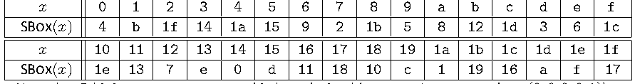
| 𝑥 | 0 | 1 | 2 | 3 | 4 | 5 | 6 | 7 | 8 | 9 | a | b | c | d | e | f |
| SBOX(𝑥) | 4 | b | 1 f | 1 4 | 1 a | 1 5 | 9 | 2 | 1 b | 5 | 8 | 1 2 | 1 d | 3 | 6 | 1 c |
| 𝑥 | 1 0 | 1 1 | 1 2 | 1 3 | 1 4 | 1 5 | 1 6 | 1 7 | 1 8 | 1 9 | 1 a | 1 b | 1 c | 1 d | 1 e | 1 f |
| SBOX(𝑥) | 1 e | 1 3 | 7 | e | 0 | d | 1 1 | 1 8 | 1 0 | c | 1 | 1 9 | 1 6 | a | f | 1 7 |
Note that 5-bit inputs are represented in hexadecimal (e.g., 𝑥 =1 corresponds to (0,0,0,0,1)).
5ビットの入力は16進数で表されることに注意してください（例：𝑥 =1 は (0,0,0,0,1) に対応します）。
未レビュー訳y
未レビュー訳x
未レビュー訳0
未レビュー訳0
未レビュー訳原本の表画像
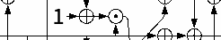
y
未レビュー訳x
未レビュー訳1
未レビュー訳1
未レビュー訳1
未レビュー訳y
未レビュー訳x
未レビュー訳2
未レビュー訳2
未レビュー訳1
未レビュー訳1 y
1 y
未レビュー訳x
未レビュー訳3
未レビュー訳3
未レビュー訳1
未レビュー訳y
未レビュー訳x
未レビュー訳4
未レビュー訳4
未レビュー訳1
未レビュー訳
5ビットSボックスSBOXを構成する論理回路。
Figure 3. Circuit representation of the 5-bit S-box SBOX
図3. 5ビットSボックスSBOXの回路表現
未レビュー訳3.4. Linear Diffusion Layer 𝑝
3.4. 線形拡散層 𝑝
未レビュー訳𝐿
未レビュー訳The linear diffusion layer 𝑝 provides diffusion within each 64-bit word 𝑆 , as shown in
線形拡散層 𝑝 は、次のように各64ビットワード 𝑆 内での拡散を提供する：
未レビュー訳𝐿
未レビュー訳𝑖
未レビュー訳Figure 4.
図4。
未レビュー訳
線形拡散層p_Lが状態ワードS_0からS_4にそれぞれ線形関数Σ_iを適用する様子。
𝑆 0 𝑆 1 𝑆 2 𝑆 3 𝑆 4
𝑆 0 𝑆 1 𝑆 2 𝑆 3 𝑆 4
未レビュー訳Figure 4. Application of linear diffusion layer 𝑝 to Ascon state
図4. Ascon状態への線形拡散層 𝑝 の適用
未レビュー訳𝐿
未レビュー訳This layer applies the linear functions Σ to their corresponding state words as 𝑆 ← Σ (𝑆 ) 𝑖
この層は、線形関数 Σ を対応する状態ワードに 𝑆 ← Σ (𝑆 ) 𝑖 として適用する
未レビュー訳𝑖 𝑖 𝑖
𝑖 𝑖 𝑖
未レビュー訳for 0 ≤ 𝑖 ≤ 4, where each Σ is defined as:
0 ≤ 𝑖 ≤ 4 に対し、ここで各 Σ は次のように定義される：
未レビュー訳𝑖
未レビュー訳(8)
(8)
未レビュー訳Σ (𝑆 ) = 𝑆 ⊕(𝑆 ⋙ 19)⊕(𝑆 ⋙ 28)
Σ (𝑆 ) = 𝑆 ⊕(𝑆 ⋙ 19)⊕(𝑆 ⋙ 28)
未レビュー訳4. Authenticated Encryption Scheme: Ascon-AEAD128
4. 認証付き暗号スキーム: Ascon-AEAD128
未レビュー訳This section specifies the AEAD scheme Ascon-AEAD128, details implementation options (e.g., truncation and nonce-masking), lists AEAD requirements, and provides security prop-erties.
本節では、AEADスキームであるAscon-AEAD128を規定し、実装オプション（例：切り捨ておよびノンスマスキング）の詳細を説明し、AEAD要件を列挙し、セキュリティ特性を提供する。
未レビュー訳4.1. Specification of Ascon-AEAD128
4.1. Ascon-AEAD128の仕様
未レビュー訳Ascon-AEAD128 consists of the encryption algorithm Ascon-AEAD128.enc (specified in Sec. 4.1.1) and the decryption algorithm Ascon-AEAD128.dec (specified in Sec. 4.1.2).
Ascon-AEAD128は、暗号化アルゴリズムAscon-AEAD128.enc（4.1.1項で規定）および復号アルゴリズムAscon-AEAD128.dec（4.1.2項で規定）で構成される。
未レビュー訳Ascon-AEAD128.enc takes a 128-bit secret key 𝐾, a 128-bit nonce 𝑁, variable-length associated data 𝐴, and variable-length plaintext 𝑃 as inputs and outputs ciphertext 𝐶 (where |𝐶|=|𝑃|) and 128-authentication tag 𝑇 (see Sec. 4.2.1 for the truncation option):
Ascon-AEAD128.encは、128ビットの秘密鍵𝐾、128ビットのノンス𝑁、可変長の関連データ𝐴、および可変長の平文𝑃を入力として受け取り、暗号文𝐶（ここで|𝐶| = |𝑃|）および128ビットの認証タグ𝑇を出力する（切り捨てオプションについては4.2.1項を参照）：
未レビュー訳(13)
(13)
未レビュー訳Ascon-AEAD128.enc(𝐾,𝑁,𝐴,𝑃) = (𝐶,𝑇)
Ascon-AEAD128.enc(𝐾,𝑁,𝐴,𝑃) = (𝐶,𝑇)
未レビュー訳Ascon-AEAD128.dec takes key 𝐾, nonce 𝑁, associated data 𝐴, ciphertext 𝐶, and authen-tication tag 𝑇 as inputs and outputs 𝑃 if the tag is valid:
Ascon-AEAD128.decは、鍵𝐾、ノンス𝑁、関連データ𝐴、暗号文𝐶、および認証タグ𝑇を入力として受け取り、タグが有効である場合に𝑃を出力します。
未レビュー訳𝑃 if the tag 𝑇is valid
タグ𝑇が有効である場合は𝑃
未レビュー訳(14)
(14)
未レビュー訳Ascon-AEAD128.dec(𝐾,𝑁,𝐴,𝐶,𝑇) = {
Ascon-AEAD128.dec(𝐾,𝑁,𝐴,𝐶,𝑇) = {
未レビュー訳fail otherwise
それ以外の場合はfail
未レビュー訳4.1.1. Encryption
4.1.1. 暗号化
未レビュー訳This section outlines the encryption algorithm of Ascon-AEAD128, which comprises four phases: initialization, associated data processing, plaintext processing, and finalization (see Figure 5).
本節では、Ascon-AEAD128の暗号化アルゴリズムの概要を説明します。これは、初期化、関連データ処理、平文処理、および最終処理の4つのフェーズで構成されます（図5を参照）。
未レビュー訳Note that the rate and capacity of Ascon-AEAD128 are 128 and 192 bits, respectively.
Ascon-AEAD128のレートとキャパシティは、それぞれ128ビットと192ビットであることに注意してください。
未レビュー訳P(cid:101)n C(cid:101)n
P(cid:101)n C(cid:101)n
未レビュー訳P Cn−1 n−1
P Cn−1 n−1
未レビュー訳A0
未レビュー訳P C0 0
P C0 0
未レビュー訳Am
未レビュー訳T
未レビュー訳ℓ = |P(cid:101)n| ⧸ 128
ℓ = |P(cid:101)n| ⧸ 128
未レビュー訳128
128
未レビュー訳128
128
未レビュー訳128
128
未レビュー訳⧸
未レビュー訳⧸
未レビュー訳⧸
未レビュー訳⧸ 128-ℓ⧸
⧸ 128-ℓ⧸
未レビュー訳原本の表画像
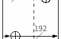
原本の表画像
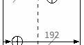
⧸128
⧸128
未レビュー訳
Ascon-AEAD128の暗号化フロー。初期化、関連データの処理、平文の処理、最終処理の各段階を順に示す。
Algorithm 3 Ascon-AEAD128.enc(𝐾,𝑁,𝐴,𝑃) Input: 128-bit key 𝐾, 128-bit nonce 𝑁, associated data 𝐴, plaintext 𝑃 Output: ciphertext 𝐶, 128-bit tag 𝑇
アルゴリズム3 Ascon-AEAD128.enc(𝐾,𝑁,𝐴,𝑃) 入力: 128ビット鍵 𝐾, 128ビットノンス 𝑁, 関連データ 𝐴, 平文 𝑃 出力: 暗号文 𝐶, 128ビットタグ 𝑇
未レビュー訳▷ Initialization
▷ 初期化
未レビュー訳𝐼𝑉 ← 0x00001000808c0001
𝐼𝑉 ← 0x00001000808c0001
未レビュー訳S ← 𝐼𝑉 ‖𝐾 ‖𝑁
S ← 𝐼𝑉 ‖𝐾 ‖𝑁
未レビュー訳S ← 𝐴𝑠𝑐𝑜𝑛-𝑝[12](S)
S ← 𝐴𝑠𝑐𝑜𝑛-𝑝[12](S)
未レビュー訳S ← S ⊕(0192 ‖𝐾)
S ← S ⊕(0192 ‖𝐾)
未レビュー訳if |𝐴| > 0 then
if |𝐴| > 0 then
未レビュー訳▷ Processing associated data
▷ 関連データの処理
未レビュー訳𝐴 ,…,𝐴 ,𝐴̃ ← parse(𝐴,128) 0 𝑚−1 𝑚 𝐴 ←pad(𝐴̃,128) 𝑚 𝑚 for 𝑖 = 0 to 𝑚 do S ← 𝐴𝑠𝑐𝑜𝑛-𝑝[8]((S ⊕𝐴 )‖S )
𝐴 ,…,𝐴 ,𝐴̃ ← parse(𝐴,128) 0 𝑚−1 𝑚 𝐴 ←pad(𝐴̃,128) 𝑚 𝑚 for 𝑖 = 0 to 𝑚 do S ← 𝐴𝑠𝑐𝑜𝑛-𝑝[8]((S ⊕𝐴 )‖S )
未レビュー訳[0∶127] 𝑖 [128∶319]
[0∶127] 𝑖 [128∶319]
未レビュー訳end for end if
end for end if
未レビュー訳S ← S ⊕(0319 ‖1)
S ← S ⊕(0319 ‖1)
未レビュー訳𝑃 ,…,𝑃 ,𝑃̃ ← parse(𝑃,128)
𝑃 ,…,𝑃 ,𝑃̃ ← parse(𝑃,128)
未レビュー訳▷ Processing plaintext
▷ 平文の処理
未レビュー訳0 𝑛−1 𝑛 ℓ ← |𝑃̃| 𝑛 for 𝑖 = 0 to 𝑛−1 do
0 𝑛−1 𝑛 ℓ ← |𝑃̃| 𝑛 for 𝑖 = 0 to 𝑛−1 do
未レビュー訳S ← S ⊕𝑃
S ← S ⊕𝑃
未レビュー訳[0∶127] [0∶127] 𝑖
[0∶127] [0∶127] 𝑖
未レビュー訳𝐶 ← S
𝐶 ← S
未レビュー訳𝑖 [0∶127] S ← 𝐴𝑠𝑐𝑜𝑛-𝑝[8](S)
𝑖 [0∶127] S ← 𝐴𝑠𝑐𝑜𝑛-𝑝[8](S)
未レビュー訳end for S ← S ⊕pad(𝑃̃,128) [0∶127] [0∶127]
end for S ← S ⊕pad(𝑃̃,128) [0∶127] [0∶127]
未レビュー訳𝑛
未レビュー訳̃
未レビュー訳𝐶 ← S
𝐶 ← S
未レビュー訳𝑛 [0∶ℓ−1]
𝑛 [0∶ℓ−1]
未レビュー訳̃
未レビュー訳𝐶 ← 𝐶 ‖…‖𝐶 ‖𝐶
𝐶 ← 𝐶 ‖…‖𝐶 ‖𝐶
未レビュー訳0 𝑛−1 𝑛
0 𝑛−1 𝑛
未レビュー訳S ← 𝐴𝑠𝑐𝑜𝑛-𝑝[12](S ⊕(0128 ‖𝐾 ‖064))
S ← 𝐴𝑠𝑐𝑜𝑛-𝑝[12](S ⊕(0128 ‖𝐾 ‖064))
未レビュー訳▷ Finalization
▷ 最終処理
未レビュー訳𝑇 ← S ⊕𝐾
𝑇 ← S ⊕𝐾
未レビュー訳[192∶319] return 𝐶,𝑇
[192∶319] return 𝐶,𝑇
未レビュー訳1.Initialization of the state. Given a 128-bit 𝐾 and a 128-bit 𝑁, the 320-bit internal state S is initialized as the concatenation of 𝐼𝑉, 𝐾, and 𝑁:
1.状態の初期化。128ビットの𝐾および128ビットの𝑁が与えられたとき、320ビットの内部状態Sは、𝐼𝑉、𝐾、および𝑁の連結として初期化される：
未レビュー訳(15)
(15)
未レビュー訳S ← 𝐼𝑉 ∥𝐾 ∥𝑁,
S ← 𝐼𝑉 ∥𝐾 ∥𝑁,
未レビュー訳where the initialization value 𝐼𝑉 is 0x00001000808c0001 (see Appendix B for de-tails on determining the IV and Appendix A for implementation notes regarding initialization). Next, S is updated using the permutation 𝐴𝑠𝑐𝑜𝑛-𝑝[12] as
ここで、初期化値 𝐼𝑉 は 0x00001000808c0001 である（IV の決定に関する詳細については付録 B を、初期化に関する実装上の注意事項については付録 A を参照）。次に、S は置換 𝐴𝑠𝑐𝑜𝑛-𝑝[12] を使用して次のように更新される：
未レビュー訳S ← 𝐴𝑠𝑐𝑜𝑛-𝑝[12](S)
S ← 𝐴𝑠𝑐𝑜𝑛-𝑝[12](S)
未レビュー訳(16)
(16)
未レビュー訳and followed by XORing the secret key 𝐾 into the last 128 bits of internal state:
続いて、内部状態の末尾 128 ビットに秘密鍵 𝐾 を XOR する：
未レビュー訳S ← S ⊕(0192 ∥𝐾).
S ← S ⊕(0192 ∥𝐾).
未レビュー訳(17)
(17)
未レビュー訳2.Processing associated data. This step has two parts, including absorbing the asso-ciated data (when it is non-empty) and applying the domain separation bit to the state.
2.関連データの処理。このステップには、関連データの吸収（空でない場合）と状態へのドメイン分離ビットの適用という2つの部分が含まれる。
未レビュー訳•If the AD is non-empty (i.e., |𝐴| > 0): The associated data 𝐴 is parsed into blocks as 𝐴 , 𝐴 , …, 𝐴 , 𝐴̃ ← parse(𝐴,128), (18) 0 1 𝑚−1 𝑚
•ADが空でない場合（すなわち、|𝐴| > 0）：関連データ 𝐴 は、以下のようにブロックへとパースされる： 𝐴 , 𝐴 , …, 𝐴 , 𝐴̃ ← parse(𝐴,128), (18) 0 1 𝑚−1 𝑚
未レビュー訳where 𝑚 = ⌊|𝐴|/128⌋ and |𝐴 | = 128 bits for 0 ≤ 𝑖 ≤ 𝑚−1 and 0 ≤ |𝐴̃| <
ここで 𝑚 = ⌊|𝐴|/128⌋ であり、0 ≤ 𝑖 ≤ 𝑚−1 に対して |𝐴 | = 128ビット、かつ 0 ≤ |𝐴̃| <
未レビュー訳𝑖
未レビュー訳𝑚
未レビュー訳128, as explained in Algorithm 1. The last block 𝐴̃ can be empty. Next, 𝐴̃ is
128（Algorithm 1で説明されている通り）。最後のブロック 𝐴̃ は空であってもよい。次に、𝐴̃ は
未レビュー訳𝑚
未レビュー訳𝑚
未レビュー訳padded as
以下のようにパディングされる：
未レビュー訳𝐴 ← pad(𝐴̃,128) = 𝐴̃||1 ∥ 0127−|𝐴̃𝑚|
𝐴 ← pad(𝐴̃,128) = 𝐴̃||1 ∥ 0127−|𝐴̃𝑚|
未レビュー訳(19)
(19)
未レビュー訳𝑚
未レビュー訳𝑚
未レビュー訳𝑚
未レビュー訳so that |𝐴 | = 128, as explained in Algorithm 2.
アルゴリズム 2 で説明されているように、|𝐴 | = 128 となる。
未レビュー訳𝑚
未レビュー訳Each associated data block 𝐴 (0 ≤ 𝑖 ≤ 𝑚) is absorbed into the first 128 bits of
各関連データブロック 𝐴 (0 ≤ 𝑖 ≤ 𝑚) は、以下の最初の 128 ビットに吸収される
未レビュー訳𝑖
未レビュー訳state as
状態に次のように
未レビュー訳(20)
(20)
未レビュー訳S ← S ⊕𝐴 ,
S ← S ⊕𝐴 ,
未レビュー訳[0∶127] [0∶127] 𝑖
[0∶127] [0∶127] 𝑖
未レビュー訳and the permutation 𝐴𝑠𝑐𝑜𝑛-𝑝[8] is applied to the state as
そして置換 𝐴𝑠𝑐𝑜𝑛-𝑝[8] が状態に次のように適用される：
未レビュー訳S ← 𝐴𝑠𝑐𝑜𝑛-𝑝[8](S).
S ← 𝐴𝑠𝑐𝑜𝑛-𝑝[8](S)。
未レビュー訳(21)
(21)
未レビュー訳The final stepof processingassociateddatais to updatethe statewith a constant
関連データ（associated data）の処理の最終ステップは、定数を用いて状態を更新することである：
未レビュー訳S ← S ⊕(0319 ∥1)
S ← S ⊕(0319 ∥1)
未レビュー訳(22)
(22)
未レビュー訳that provides domain separation.
これはドメイン分離を提供する。
未レビュー訳•If the AD is empty (i.e., |𝐴| = 0): Only the final step described in (22) is applied.
•ADが空の場合（すなわち、|𝐴| = 0）：(22) に記載されている最終ステップのみが適用される。
未レビュー訳3.Processing plaintext. Plaintext 𝑃 (including empty plaintext) is parsed into blocks as 𝑃 , 𝑃 , …, 𝑃 ,𝑃̃ ← parse(𝑃,128), (23) 0 1 𝑛−1 𝑛
3.平文の処理。平文 𝑃（空の平文を含む）は、以下のようにブロックに構文解析される： 𝑃 , 𝑃 , …, 𝑃 ,𝑃̃ ← parse(𝑃,128), (23) 0 1 𝑛−1 𝑛
未レビュー訳where 𝑛 = ⌊|𝑃|/128⌋, |𝑃 | = 128 for 0 ≤ 𝑖 ≤ 𝑛−1, and |𝑃̃| = ℓ, 0 ≤ ℓ < 128 using
ここで、𝑛 = ⌊|𝑃|/128⌋、0 ≤ 𝑖 ≤ 𝑛−1 に対して |𝑃 | = 128、および以下を用いた |𝑃̃| = ℓ, 0 ≤ ℓ < 128 であり、
未レビュー訳𝑖
未レビュー訳𝑛
未レビュー訳Algorithm 1. When |𝑃| mod 128 = 0, the last block 𝑃̃ is empty.
アルゴリズム1。|𝑃| mod 128 = 0の場合、最後のブロック𝑃̃は空となる。
未レビュー訳𝑛
未レビュー訳For each 𝑃 , 0 ≤ 𝑖 ≤ 𝑛−1, the state S is updated as
各𝑃（0 ≤ 𝑖 ≤ 𝑛−1）について、状態Sは次のように更新される：
未レビュー訳𝑖
未レビュー訳(24)
(24)
未レビュー訳S ← S ⊕ 𝑃 ,
S ← S ⊕ 𝑃 ,
未レビュー訳[0∶127] [0∶127] 𝑖
[0∶127] [0∶127] 𝑖
未レビュー訳followed by generating the corresponding ciphertext block 𝐶 as
続いて、対応する暗号文ブロック 𝐶 を次のように生成し、
未レビュー訳𝑖
未レビュー訳(25)
(25)
未レビュー訳𝐶 ← S ,
𝐶 ← S ,
未レビュー訳𝑖 [0∶127]
𝑖 [0∶127]
未レビュー訳and the permutation 𝐴𝑠𝑐𝑜𝑛-𝑝[8] is applied to update the state as
置換 𝐴𝑠𝑐𝑜𝑛-𝑝[8] が適用されて状態が次のように更新される。
未レビュー訳S ← 𝐴𝑠𝑐𝑜𝑛-𝑝[8](S).
S ← 𝐴𝑠𝑐𝑜𝑛-𝑝[8](S).
未レビュー訳(26)
(26)
未レビュー訳For the last block 𝑃̃, the state is updated as 𝑛
最後のブロック𝑃̃について、状態は次のように更新され、𝑛
未レビュー訳S ← S ⊕pad(𝑃̃,128),
S ← S ⊕pad(𝑃̃,128),
未レビュー訳(27)
(27)
未レビュー訳[0∶127] [0∶127]
[0∶127] [0∶127]
未レビュー訳𝑛
未レビュー訳and the last ciphertext block 𝐶̃ is obtained as
最後の暗号文ブロック𝐶̃は次のように得られる。
未レビュー訳𝑛
未レビュー訳𝐶̃ ← S .
𝐶̃ ← S .
未レビュー訳(28)
(28)
未レビュー訳𝑛 [0∶ℓ−1]
𝑛 [0∶ℓ−1]
未レビュー訳The ciphertext 𝐶 is constructed by concatenating the ciphertext blocks as
暗号文 𝐶 は、次のように暗号文ブロックを連結することによって構成される。
未レビュー訳𝐶 ← 𝐶 ∥…∥𝐶 ∥𝐶̃.
𝐶 ← 𝐶 ∥…∥𝐶 ∥𝐶̃.
未レビュー訳(29)
(29)
未レビュー訳0 𝑛−1 𝑛
0 𝑛−1 𝑛
未レビュー訳4.Finalization and tag generation. During finalization, the key is first loaded to the state S as
4.最終処理およびタグ生成。最終処理中、鍵はまず次のように状態 S にロードされる。
未レビュー訳S ← S ⊕(0128 ∥𝐾 ∥064),
S ← S ⊕(0128 ∥𝐾 ∥064),
未レビュー訳(30)
(30)
未レビュー訳and the state S is then updated using the permutation 𝐴𝑠𝑐𝑜𝑛-𝑝[12] as
そして状態 S は、置換 𝐴𝑠𝑐𝑜𝑛-𝑝[12] を使用して次のように更新されます。
未レビュー訳S ← 𝐴𝑠𝑐𝑜𝑛-𝑝[12](S).
S ← 𝐴𝑠𝑐𝑜𝑛-𝑝[12](S).
未レビュー訳(31)
(31)
未レビュー訳Finally, the tag 𝑇 is generated by XORing the key with the last 128 bits of the state:
最後に、鍵と状態の最後の128ビットをXOR演算することによって、タグ 𝑇 が生成されます。
未レビュー訳(32)
(32)
未レビュー訳𝑇 ← 𝑆 ⊕𝐾.
𝑇 ← 𝑆 ⊕𝐾.
未レビュー訳[192∶319]
[192∶319]
未レビュー訳The encryption algorithm returns the ciphertext 𝐶 and the tag 𝑇.
暗号化アルゴリズムは暗号文 𝐶 とタグ 𝑇 を返す。
未レビュー訳4.1.2. Decryption
4.1.2. 復号
未レビュー訳P(cid:101)n C(cid:101)n
P(cid:101)n C(cid:101)n
未レビュー訳P Cn−1 n−1
P Cn−1 n−1
未レビュー訳T′
未レビュー訳A0
未レビュー訳P C0 0
P C0 0
未レビュー訳Am
未レビュー訳ℓ = |C(cid:101)n| ⧸ 128
ℓ = |C(cid:101)n| ⧸ 128
未レビュー訳128
128
未レビュー訳128
128
未レビュー訳128
128
未レビュー訳⧸
未レビュー訳⧸
未レビュー訳⧸
未レビュー訳⧸ 128-ℓ⧸
⧸ 128-ℓ⧸
未レビュー訳原本の表画像
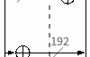
原本の表画像
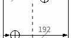
⧸128
⧸128
未レビュー訳1 ∥ 0127−ℓ
1 ∥ 0127−ℓ
未レビュー訳1⧸92
1⧸92
未レビュー訳192⧸
192⧸
未レビュー訳192⧸
192⧸
未レビュー訳128⧸
128⧸
未レビュー訳064∥K
064∥K
未レビュー訳0191∥1
0191∥1
未レビュー訳K∥064
K∥064
未レビュー訳IV∥K∥N
IV∥K∥N
未レビュー訳K
未レビュー訳Ciphertext
暗号文
未レビュー訳Initialization
初期化
未レビュー訳Associated Data
関連データ
未レビュー訳Finalization
最終処理
未レビュー訳
Ascon-AEAD128の復号フロー。初期化、関連データの処理、暗号文の処理、最終処理の各段階を順に示す。
Figure 6. Ascon-AEAD128 decryption
図6. Ascon-AEAD128の復号
未レビュー訳This section describes each of the phases for decryption with Ascon-AEAD128.dec. Decryp-tion in Ascon-AEAD128 consists of four phases: initialization, associated data processing, ciphertext processing, and finalization. Decryption in Ascon-AEAD128 is similar to encryp-tion; only the last two phases differ from the encryption mode.
本節では、Ascon-AEAD128.decによる復号の各フェーズについて説明する。Ascon-AEAD128における復号は、初期化、関連データ処理、暗号文処理、および最終処理の4つのフェーズで構成される。Ascon-AEAD128の復号は暗号化と類似しており、最後の2つのフェーズのみが暗号化モードと異なる。
未レビュー訳The pseudocode of Ascon-AEAD128.dec is provided in Algorithm 4.
Ascon-AEAD128.decの疑似コードはアルゴリズム4に示されている。
未レビュー訳1.Initialization of the state. Given a 128-bit 𝐾 and 128-bit 𝑁, the 320-bit internal state S is initialized as the concatenation of 𝐼𝑉, 𝐾, and 𝑁:
1.状態の初期化。128ビットの𝐾および128ビットの𝑁が与えられた場合、320ビットの内部状態Sは、𝐼𝑉、𝐾、および𝑁の連結として初期化される：
未レビュー訳(33)
(33)
未レビュー訳S ← 𝐼𝑉 ∥𝐾 ∥𝑁,
S ← 𝐼𝑉 ∥𝐾 ∥𝑁,
未レビュー訳where the initial value 𝐼𝑉 is 0x00001000808c0001 (see Appendix B for details on determining the IV and Appendix A for implementation notes regarding initialization). Next, S is updated using the permutation 𝐴𝑠𝑐𝑜𝑛-𝑝[12] as
ここで、初期値𝐼𝑉は0x00001000808c0001である（IVの決定に関する詳細については付録Bを、初期化に関する実装上の注意については付録Aを参照）。次に、Sは置換𝐴𝑠𝑐𝑜𝑛-𝑝[12]を使用して以下のように更新される：
未レビュー訳S ← 𝐴𝑠𝑐𝑜𝑛-𝑝[12](S)
S ← 𝐴𝑠𝑐𝑜𝑛-𝑝[12](S)
未レビュー訳(34)
(34)
未レビュー訳and followed by XORing the secret key into the last 128 bits of the state as
続いて、状態の最後の128ビットに秘密鍵を次のようにXORします:
未レビュー訳S ← S ⊕(0192 ∥𝐾).
S ← S ⊕(0192 ∥𝐾).
未レビュー訳(35)
(35)
未レビュー訳This step is exactly the same as Step 1 of the encryption function in Sec. 4.1.1.
このステップは、Sec. 4.1.1 の暗号化関数のステップ1とまったく同一です。
未レビュー訳2.Processing associated data. This step has two parts, including absorbing the asso-ciated data (when it is non-empty) and applying the domain separation bit to the state.
2.関連データの処理。このステップには、関連データの吸収（空でない場合）と状態へのドメイン分離ビットの適用の2つの部分が含まれます。
未レビュー訳•If the AD is non-empty (i.e., |𝐴| > 0): The associated data 𝐴 is parsed into blocks as 𝐴 , 𝐴 , …, 𝐴 , 𝐴̃ ← parse(𝐴,128), (36)
•AD が空でない場合（すなわち、|𝐴| > 0）：関連データ 𝐴 は次のようにブロックに構文解析されます: 𝐴 , 𝐴 , …, 𝐴 , 𝐴̃ ← parse(𝐴,128), (36)
未レビュー訳Algorithm 4 Ascon-AEAD128.dec(𝐾,𝑁,𝐴,𝐶,𝑇) Input: 128-bit key 𝐾, 128-bit nonce 𝑁, associated data 𝐴, ciphertext 𝐶, 128-bit tag 𝑇 Output: plaintext 𝑃 or fail
アルゴリズム 4 Ascon-AEAD128.dec(𝐾,𝑁,𝐴,𝐶,𝑇) 入力: 128ビットの鍵 𝐾、128ビットのノンス 𝑁、関連データ 𝐴、暗号文 𝐶、128ビットのタグ 𝑇 出力: 平文 𝑃 または fail
未レビュー訳▷ Initialization
▷ 初期化
未レビュー訳𝐼𝑉 ← 0x00001000808c0001
𝐼𝑉 ← 0x00001000808c0001
未レビュー訳S ← 𝐼𝑉 ‖𝐾 ‖𝑁
S ← 𝐼𝑉 ‖𝐾 ‖𝑁
未レビュー訳S ← 𝐴𝑠𝑐𝑜𝑛-𝑝[12](S)
S ← 𝐴𝑠𝑐𝑜𝑛-𝑝[12](S)
未レビュー訳S ← S ⊕(0192 ‖𝐾)
S ← S ⊕(0192 ‖𝐾)
未レビュー訳if |𝐴| > 0 then
if |𝐴| > 0 then
未レビュー訳▷ Processing associated data
▷ 関連データの処理
未レビュー訳𝐴 ,…,𝐴 ,𝐴̃ ← parse(𝐴,128) 0 𝑚−1 𝑚 𝐴 ←pad(𝐴̃,128) 𝑚 𝑚 for 𝑖 = 0 to 𝑚 do S ← 𝐴𝑠𝑐𝑜𝑛-𝑝[8]((S ⊕𝐴 )‖S )
𝐴 ,…,𝐴 ,𝐴̃ ← parse(𝐴,128) 0 𝑚−1 𝑚 𝐴 ←pad(𝐴̃,128) 𝑚 𝑚 for 𝑖 = 0 to 𝑚 do S ← 𝐴𝑠𝑐𝑜𝑛-𝑝[8]((S ⊕𝐴 )‖S )
未レビュー訳[0∶127] 𝑖 [128∶319]
[0∶127] 𝑖 [128∶319]
未レビュー訳end for end if
end for end if
未レビュー訳S ← S ⊕(0319 ‖1)
S ← S ⊕(0319 ‖1)
未レビュー訳𝐶 ,…,𝐶 ,𝐶̃ ← parse(𝐶,128)
𝐶 ,…,𝐶 ,𝐶̃ ← parse(𝐶,128)
未レビュー訳▷ Processing ciphertext
▷ 暗号文の処理
未レビュー訳0 𝑛−1 𝑛 for 𝑖 = 0 to 𝑛−1 do
0 𝑛−1 𝑛 for 𝑖 = 0 to 𝑛−1 do
未レビュー訳𝑃 ← S ⊕𝐶
𝑃 ← S ⊕𝐶
未レビュー訳𝑖 [0∶127] 𝑖
𝑖 [0∶127] 𝑖
未レビュー訳S ← 𝐶
S ← 𝐶
未レビュー訳[0∶127] 𝑖 S ← 𝐴𝑠𝑐𝑜𝑛-𝑝[8](S)
[0∶127] 𝑖 S ← 𝐴𝑠𝑐𝑜𝑛-𝑝[8](S)
未レビュー訳end for ̃ ℓ = |𝐶 | 𝑛
end for ̃ ℓ = |𝐶 | 𝑛
未レビュー訳𝑃̃ ← S ⊕𝐶̃
𝑃̃ ← S ⊕𝐶̃
未レビュー訳𝑛 [0∶ℓ−1] 𝑛 S ← S ⊕(1||0127−ℓ) [ℓ∶127] [ℓ∶127] ̃
𝑛 [0∶ℓ−1] 𝑛 S ← S ⊕(1||0127−ℓ) [ℓ∶127] [ℓ∶127] ̃
未レビュー訳S ← 𝐶
S ← 𝐶
未レビュー訳[0∶ℓ−1] 𝑛
[0∶ℓ−1] 𝑛
未レビュー訳S ← 𝐴𝑠𝑐𝑜𝑛-𝑝[12](S ⊕(0128 ‖𝐾 ‖064))
S ← 𝐴𝑠𝑐𝑜𝑛-𝑝[12](S ⊕(0128 ‖𝐾 ‖064))
未レビュー訳▷ Finalization
▷ 終了処理
未レビュー訳𝑇′ ← S ⊕𝐾
𝑇′ ← S ⊕𝐾
未レビュー訳[192∶319] if 𝑇′ == 𝑇 then
[192∶319] if 𝑇′ == 𝑇 then
未レビュー訳𝑃 ← 𝑃 ‖…‖𝑃 ‖𝑃̃
𝑃 ← 𝑃 ‖…‖𝑃 ‖𝑃̃
未レビュー訳where 𝑚 = ⌊|𝐴|/128⌋ and |𝐴 | = 128 bits for 0 ≤ 𝑖 ≤ 𝑚−1 and 0 ≤ |𝐴̃| <
ここで 𝑚 = ⌊|𝐴|/128⌋ であり、0 ≤ 𝑖 ≤ 𝑚−1 に対して |𝐴 | = 128 ビット、かつ 0 ≤ |𝐴̃| <
未レビュー訳𝑖
未レビュー訳𝑚
未レビュー訳128, as explained in Algorithm 1. The last block 𝐴̃ can be empty.
アルゴリズム 1 で説明されているように 128 である。最後のブロック 𝐴̃ は空であってもよい。
未レビュー訳𝑚
未レビュー訳𝐴 ̃ is further processed by padding to a full 𝑟=128-bit block using Algorithm 𝑚 2 as 𝐴 ←pad(𝐴 ̃ ,128)=𝐴 ̃ ||1∥0127−|𝐴̃ 𝑚 |. (37) 𝑚 𝑚 𝑚
𝐴̃ は、アルゴリズム 𝑚 2 を使用して 𝐴 ← pad(𝐴̃,128) = 𝐴̃||1 ∥ 0127−|𝐴̃𝑚| として完全な 𝑟 = 128 ビットブロックにパディングされることによってさらに処理される。
未レビュー訳(37)
(37)
未レビュー訳𝑚
未レビュー訳𝑚
未レビュー訳𝑚
未レビュー訳The associated data blocks 𝐴 ’s (0 ≤ 𝑖 ≤ 𝑚) are absorbed into the state S as
関連データブロック 𝐴 ’s (0 ≤ 𝑖 ≤ 𝑚) は、次のように状態 S に吸収される:
未レビュー訳𝑖
未レビュー訳follows:
follows:
未レビュー訳(38)
(38)
未レビュー訳S ← (S ⊕𝐴 ),
S ← (S ⊕𝐴 ),
未レビュー訳[0∶127] [0∶127] 𝑖
[0∶127] [0∶127] 𝑖
未レビュー訳and the permutation 𝐴𝑠𝑐𝑜𝑛-𝑝[8] is applied to the state as
そして、置換 𝐴𝑠𝑐𝑜𝑛-𝑝[8] が状態に対して次のように適用されます：
未レビュー訳S ← 𝐴𝑠𝑐𝑜𝑛-𝑝[8](S).
S ← 𝐴𝑠𝑐𝑜𝑛-𝑝[8](S)。
未レビュー訳(39)
(39)
未レビュー訳The final step of processing associated data is to update the state to
関連データの処理の最終ステップは、ドメイン分離のために状態を
未レビュー訳S ← S ⊕(0319 ∥1)
S ← S ⊕(0319 ∥1)
未レビュー訳(40)
(40)
未レビュー訳for domain separation.
へと更新することです。
未レビュー訳•If the AD is empty (i.e., |𝐴| = 0): Only the final step described in Equation (40) is applied.
•ADが空の場合（すなわち、|𝐴| = 0）：式 (40) で説明されている最終ステップのみが適用されます。
未レビュー訳This step is exactly the same as Step 2 of the encryption function in Sec. 4.1.1.
このステップは、Sec. 4.1.1における暗号化関数のステップ2と全く同じである。
未レビュー訳3.Processing the ciphertext. Ciphertext 𝐶 is parsed into blocks as
3.暗号文の処理。暗号文𝐶は次のようにブロックへパースされる：
未レビュー訳𝐶 , 𝐶 , …,𝐶 , 𝐶̃ ← parse(𝐶,128),
𝐶 , 𝐶 , …,𝐶 , 𝐶̃ ← parse(𝐶,128),
未レビュー訳(41)
(41)
未レビュー訳0 1 𝑛−1 𝑛
0 1 𝑛−1 𝑛
未レビュー訳where 𝑛 = ⌊|𝐶|/128⌋, |𝐶 | = 128 for 0 ≤ 𝑖 ≤ 𝑛−1, |𝐶̃| = ℓ and 0 ≤ ℓ < 128 using
ここで、𝑛 = ⌊|𝐶|/128⌋、0 ≤ 𝑖 ≤ 𝑛−1 に対して |𝐶 | = 128、|𝐶̃| = ℓ かつ 0 ≤ ℓ < 128 であり、次を使用する：
未レビュー訳𝑖
未レビュー訳𝑛
未レビュー訳Algorithm 1. Ciphertext 𝐶 or the last block of ciphertext 𝐶̃ can be empty.
アルゴリズム1。暗号文 𝐶 または暗号文の最後のブロック 𝐶̃ は空であってもよい。
未レビュー訳𝑛
未レビュー訳For each 𝐶 , 0 ≤ 𝑖 ≤ 𝑛−1, the following steps are applied:
各 𝐶 、0 ≤ 𝑖 ≤ 𝑛−1 に対して、以下の手順が適用される：
未レビュー訳𝑖
未レビュー訳(42)
(42)
未レビュー訳𝑃 ← S ⊕ 𝐶
𝑃 ← S ⊕ 𝐶
未レビュー訳𝑖 [0∶127] 𝑖
𝑖 [0∶127] 𝑖
未レビュー訳(43)
(43)
未レビュー訳S ← 𝐶
S ← 𝐶
未レビュー訳[0∶127] 𝑖 S ← 𝐴𝑠𝑐𝑜𝑛-𝑝[8](S).
[0∶127] 𝑖 S ← 𝐴𝑠𝑐𝑜𝑛-𝑝[8](S).
未レビュー訳(44)
(44)
未レビュー訳For the last block of the ciphertext 𝐶̃ (with length ℓ), the following steps are applied: 𝑛
暗号文の最後のブロック 𝐶̃（長さ ℓ）に対して、以下のステップが適用される: 𝑛
未レビュー訳𝑃̃ ← S ⊕ 𝐶̃
𝑃̃ ← S ⊕ 𝐶̃
未レビュー訳(45)
(45)
未レビュー訳𝑛 [0,ℓ−1] 𝑛
𝑛 [0,ℓ−1] 𝑛
未レビュー訳S ← 𝐶̃
S ← 𝐶̃
未レビュー訳(46)
(46)
未レビュー訳[0,ℓ−1] 𝑛
[0,ℓ−1] 𝑛
未レビュー訳S ← S ⊕(1||0127−ℓ).
S ← S ⊕(1||0127−ℓ).
未レビュー訳(47)
(47)
未レビュー訳[ℓ,127] [ℓ,127]
[ℓ,127] [ℓ,127]
未レビュー訳Note that when 𝐶̃ is an empty block, 𝑃̃ is an empty block as well.
𝐶̃ が空のブロックである場合、𝑃̃ も同様に空のブロックとなることに留意されたい。
未レビュー訳𝑛
未レビュー訳𝑛 The plaintext 𝑃 is constructed by concatenating the plaintext blocks as
𝑛 平文 𝑃 は、平文ブロックを次のように連結することによって構築される。
未レビュー訳𝑃 ← 𝑃 ∥…∥𝑃 ∥𝑃̃.
𝑃 ← 𝑃 ∥…∥𝑃 ∥𝑃̃.
未レビュー訳(48)
(48)
未レビュー訳0 𝑛−1 𝑛
0 𝑛−1 𝑛
未レビュー訳4.Finalization. During finalization, the key is loaded into the state S as
4.終了処理（Finalization）。終了処理の間、鍵は次のように状態Sにロードされる：
未レビュー訳S ← S ⊕(0128 ∥𝐾 ∥064),
S ← S ⊕(0128 ∥𝐾 ∥064),
未レビュー訳(49)
(49)
未レビュー訳and the state S is then updated using the permutation Ascon-p[12]as
その後、状態Sは置換Ascon-p[12]を使用して次のように更新される：
未レビュー訳S ← 𝐴𝑠𝑐𝑜𝑛-𝑝[12](S).
S ← 𝐴𝑠𝑐𝑜𝑛-𝑝[12](S).
未レビュー訳(50)
(50)
未レビュー訳Finally, the tag is generated by XORing the key with the last 128 bits of the state:
最後に、鍵とステートの最後の128ビットをXOR演算することによってタグが生成される:
未レビュー訳𝑇′ ← (𝑆 )⊕𝐾.
𝑇′ ← (𝑆 )⊕𝐾.
未レビュー訳(51)
(51)
未レビュー訳[192∶319]
[192∶319]
未レビュー訳As the last step, the computed 𝑇′ is compared with the input 𝑇. If the two match, the plaintext 𝑃 is returned. Otherwise, an error message fail is returned.
最後のステップとして、計算された𝑇′が入力𝑇と比較される。両者が一致した場合、平文𝑃が返される。一致しない場合、エラーメッセージfailが返される。
未レビュー訳4.2. Implementation Options
4.2. 実装オプション
未レビュー訳4.2.1. Truncation
4.2.1. 切り詰め
未レビュー訳Some applications may truncate the tag 𝑇 to a specific length 𝜆(≤|𝑇|). The truncation function outputs the leftmost 𝜆 bits of the tag (i.e., 𝑇 ). [0∶𝜆−1]
一部のアプリケーションでは、タグ 𝑇 を特定の長さ 𝜆 (≤ |𝑇|) に切り詰める場合があります。切り詰め関数は、タグの左端の 𝜆 ビット（すなわち、𝑇 ）を出力します。
未レビュー訳[0∶𝜆−1]
[0∶𝜆−1]
未レビュー訳The requirements on the tag lengths are provided in Sec. 4.3.
タグの長さに関する要件は、Sec. 4.3 で提供されています。
未レビュー訳4.2.2. Nonce Masking
4.2.2. ノンスマスキング
未レビュー訳In this option, an additional 128-bit key is used to mask the input nonce. Let 𝐾 = (𝐾 ‖𝐾 )
このオプションでは、入力ノンスをマスクするために追加の 128 ビット鍵が使用されます。𝐾 = (𝐾 ‖𝐾 ) を
未レビュー訳Ascon-AEAD128 with nonce masking should only be used when context-commitment secu-rity 2 [12] and related-key security [13] are not concerns. This is because the encryption of Ascon-AEAD128 with nonce masking always outputs the same (𝐶, 𝑇 ) pair for two different input tuples (𝐾 ‖𝐾′,𝑁,𝐴,𝑃) and (𝐾 ‖𝐾″,𝑁′,𝐴,𝑃), where 𝑁 ⊕𝐾′ = 𝑁′ ⊕𝐾″.
ノンスマスキングを伴うAscon-AEAD128は、コンテキストコミットメント安全性 2 [12] および関連鍵安全性 [13] が懸念されない場合にのみ使用されるべきです。これは、ノンスマスキングを伴うAscon-AEAD128の暗号化が、𝑁 ⊕𝐾′ = 𝑁′ ⊕𝐾″である2つの異なる入力タプル (𝐾 ‖𝐾′,𝑁,𝐴,𝑃) と (𝐾 ‖𝐾″,𝑁′,𝐴,𝑃) に対して常に同一の (𝐶, 𝑇 ) のペアを出力するためです。
未レビュー訳When the output tag is not truncated, this option maintains its 128-bit security strength in both single-key and multi-key settings [14] (see Section 4.4.2).
出力タグが切り詰められない場合、このオプションは単一鍵設定および複数鍵設定の両方で128ビットのセキュリティ強度を維持します [14]（セクション 4.4.2 を参照）。
未レビュー訳4.3. AEAD Requirements
4.3. AEAD要件
未レビュー訳This section specifies requirements for Ascon-AEAD128.
本節では、Ascon-AEAD128に対する要件を規定します。
未レビュー訳R1. Key generation. The secret key and the nonce-masking key (if available) shall be generated following the recommendations for cryptographic key generation specified in SP 800-133 [15] and using an approved random bit generator that supports at least a 128-bit security strength. The keys shall not be used for other purposes.
R1. 鍵生成。秘密鍵およびノンスマスキング鍵（利用可能な場合）は、SP 800-133 [15] に規定されている暗号鍵生成に関する推奨事項に従い、少なくとも128ビットのセキュリティ強度をサポートする承認済みの乱数ビット生成器を使用して生成されなければなりません（shall）。これらの鍵を他の目的に使用してはなりません（shall not）。
未レビュー訳R2. Secrecy of key. The Ascon-AEAD128 key shall be kept secret. When the nonce masking option is implemented, the masked nonce (i.e., 𝑁 ⊕𝐾 in Equation (52))
R2. 鍵の秘密性。Ascon-AEAD128鍵は秘密に保持されなければなりません（shall）。ノンスマスキングオプションが実装されている場合、マスクされたノンス（すなわち、式 (52) の 𝑁 ⊕𝐾
未レビュー訳2
未レビュー訳shall also be kept secret.
）も秘密に保持されなければなりません（shall）。
未レビュー訳R3. Use of unique nonce. Nonces shall be distinct for each encryption algorithm for a given key to ensure that identical plaintexts encrypted multiple times produce different ciphertexts.
R3. 一意のノンスの使用。同一の平文を複数回暗号化した場合に異なる暗号文が生成されることを保証するため、所定の鍵に対する暗号化アルゴリズムごとにノンスは異なっていなければなりません（shall）。
未レビュー訳R4. Minimum length of truncated tag. When an application uses truncated tags, the bit length of the truncated tags shall be at least 32 bits and shall only select a tag length less than 64 bits after a careful risk analysis is performed. The tag length shall be the same across the lifespan of the key.
R4. 切り詰められたタグの最小長。アプリケーションが切り詰められたタグを使用する場合、切り詰められたタグのビット長は少なくとも32ビットでなければならず、慎重なリスク分析が実行された後にのみ64ビット未満のタグ長を選択するものとします。タグ長は鍵の有効期間を通じて同一でなければなりません。
未レビュー訳R5. Limit on the maximum number of decryption failures. When the tag bit length 𝜆 satisfies 64≤𝜆≤128, the probability of a forgery is low enough that decryption failures up to 2𝜆−32 can be tolerated without compromising security. Therefore, the maximum number of decryption failures under a fixed key shall not exceed 2𝜆−32. For shorter tags, with 32≤𝜆<64, the forgery probability is higher, in these cases, the number of allowable decryption failures should be limited to 1. However, if a careful risk analysis shows that the system’s overall security goal remains satisfied, this limit may be relaxed – up to the same bound of 2𝜆−32.
R5. 復号失敗の最大数の制限。タグのビット長 𝜆 が 64 ≤ 𝜆 ≤ 128 を満たす場合、偽造の確率は十分に低いため、2𝜆−32 までの復号失敗はセキュリティを損なうことなく許容できます。したがって、固定鍵における復号失敗の最大数は 2𝜆−32 を超えてはなりません。32 ≤ 𝜆 < 64 である、より短いタグの場合、偽造確率はより高くなり、このようなケースでは許容される復号失敗の数は1に制限されるべきです。ただし、慎重なリスク分析によってシステム全体のセキュリティ目標が維持されていることが示された場合、この制限は同じ上限である 2𝜆−32 まで緩和されることがあります。
未レビュー訳R6. Data limit. The total amount of data processed during encryption and decryption, including the nonce, shall not exceed 254 bytes for a given key.
R6. データ制限。特定の鍵に対して、ノンスを含む暗号化および復号中に処理されるデータの総量は、254 バイトを超えてはなりません。
未レビュー訳2In AEAD schemes, context commitment is a security property that ensures a ciphertext cannot be decrypted successfully under two different, adversarially-chosen contexts – where context includes a secret key, nonce, and associated data.
2 AEAD方式において、コンテキストコミットメント（context commitment）とは、敵対的に選択された2つの異なるコンテキスト（ここでコンテキストには秘密鍵、ノンス、関連データが含まれます）の下で暗号文が正常に復号されないことを保証するセキュリティ特性です。
未レビュー訳R7. Key update. The key shall be updated to a new key once the total amount of input data reaches the limit of 254 bytes, and should be updated when the number of decryption failures reaches its limit.
R7. 鍵の更新。入力データの総量が 254 バイトの制限に達した時点で鍵は新しい鍵に更新されなければならず、復号失敗の数がその制限に達した時点で更新されるべきです。
未レビュー訳4.4. Security Properties
4.4. セキュリティ特性
未レビュー訳This section provides the security properties of Ascon-AEAD128 in various scenarios, in-cluding single-key and multi-key settings, nonce-respecting and nonce-misuse settings, and with or without the truncation option.
本セクションでは、単一鍵および複数鍵の設定、ノンス遵守およびノンス誤用の設定、ならびに切り詰めオプションの有無を含む、さまざまなシナリオにおけるAscon-AEAD128のセキュリティ特性を示します。
未レビュー訳In the single-key setting, the security of the scheme is analyzed under the assumption that the scheme uses a single key; in contrast, in the multi-key setting, multiple independent keys are used, and the adversary may interact with many instances of the scheme, each with a different key. The security of the Ascon-AEAD128 mode in both single-key and multi-key settings was evaluated in [14, 16–19]. The committing security of the Ascon-AEAD128 mode was also evaluated in [20, 21].
単一鍵の設定では、方式が単一の鍵を使用するという前提の下で方式のセキュリティが分析されます。対照的に、複数鍵の設定では複数の独立した鍵が使用され、攻撃者はそれぞれ異なる鍵を持つ方式の多数のインスタンスと相互作用する可能性があります。単一鍵および複数鍵の両方の設定におけるAscon-AEAD128モードのセキュリティは、[14, 16–19] で評価されました。Ascon-AEAD128モードのコミッティングセキュリティ（committing security）も、[20, 21] で評価されました。
未レビュー訳4.4.1. Single-Key Setting
4.4.1. 単一鍵設定
未レビュー訳Ascon-AEAD128 with no tag truncation provides a 128-bit security strength in the single-key and nonce-respecting setting for the confidentiality of the plaintext (except for its length) and the integrity of the tuple (nonce, associated data, ciphertext, tag), where the total number of input bytes is limited to 254 (i.e., 250 blocks).
タグの切り捨てを行わないAscon-AEAD128は、平文の機密性（その長さを除く）および組（ノンス、関連データ、暗号文、タグ）の完全性に対して、入力バイトの総数が254（すなわち250ブロック）に制限されている場合、単一鍵かつノンスを遵守する（nonce-respecting）設定において128ビットのセキュリティ強度を提供します。
未レビュー訳Impact of truncation. For a tag of length 𝜆, a forgery attempt succeeds with a probability of 2−𝜆. Once a forgery is successful, the confidentiality of the plaintext may be compromised, as the decryption algorithm could reveal some information about the plaintext. Therefore, in the single-key setting, Ascon-AEAD128 with tag length 𝜆 provides 𝜆-bit security for both confidentiality and integrity in the nonce-respecting setting.Note that even if a forgery attempt is successful, the probability of another successful forgery is 2−𝜆, provided that the secret key remains uncompromised. This also holds for the nonce masking option.
切り捨ての影響。長さ𝜆のタグの場合、偽造の試みは2−𝜆の確率で成功します。復号アルゴリズムによって平文に関する情報がいくらか漏洩する可能性があるため、一度偽造が成功すると、平文の機密性が侵害される可能性があります。したがって、単一鍵設定において、タグ長𝜆のAscon-AEAD128は、ノンス遵守設定において機密性と完全性の両方に対して𝜆ビットのセキュリティを提供します。たとえ偽造の試みが成功したとしても、秘密鍵が侵害されないままであれば、別の偽造が成功する確率は2−𝜆であることに注意してください。これはノンスマスキングオプションにも当てはまります。
未レビュー訳4.4.2. Multi-Key Setting
4.4.2. 複数鍵設定
未レビュー訳When 𝑢 keys are independently selected for an application, Ascon-AEAD128 with no tag truncation provides a (128−log 𝑢)-bit security strength in the nonce-respecting setting 2
あるアプリケーションに対して𝑢個の鍵が独立して選択される場合、タグの切り捨てを行わないAscon-AEAD128は、ノンス遵守設定において(128−log 𝑢)ビットのセキュリティ強度を提供します
未レビュー訳2
未レビュー訳for the confidentiality of the plaintext and the integrity of the tuple (nonce, associated data, ciphertext, tag). Note that, in the nonce-respecting setting, an attacker may select the same nonce for use with different keys, but is not permitted to reuse a nonce with the same key.
（平文の機密性および組（ノンス、関連データ、暗号文、タグ）の完全性に対して）。ノンス遵守設定では、攻撃者は異なる鍵で使用するために同一のノンスを選択することはあり得ますが、同一の鍵でノンスを再利用することは許可されていないことに注意してください。
未レビュー訳When the same nonce is used with 𝑢 keys, an attacker may discover one of the 𝑢 keys with a time complexity of 2128−log 𝑢, thereby compromising both confidentiality and integrity 2
同一のノンスが𝑢個の鍵で使用された場合、攻撃者は2128−logの時間計算量で𝑢個の鍵のうちの1つを発見する可能性があります
未レビュー訳𝑢, thereby compromising both confidentiality and integrity 2
𝑢であり、それによって機密性と完全性の両方が損なわれる2
未レビュー訳[14, 17–19].
[14, 17–19]。
未レビュー訳To improve security in a multi-key setting, the nonce-masking implementation option with no truncation (see Sec. 4.2.2) can be used. This option provides 128-bit security (rather than 128−log 𝑢) for confidentiality and integrity. 2
マルチ鍵環境におけるセキュリティを向上させるために、切り捨てなしのノンスマスキング実装オプション（セクション4.2.2を参照）を使用できる。このオプションは、機密性と完全性について（128−log 𝑢ではなく）128ビットのセキュリティを提供する。
未レビュー訳2
未レビュー訳Impact of truncation. In the multi-key setting, Ascon-AEAD128 with tag length 𝜆 pro-vides min{128−log 𝑢,𝜆}-bit security for both confidentiality and integrity in the nonce-2
切り捨ての影響。マルチ鍵環境において、タグ長𝜆のAscon-AEAD128は、ノンス遵守（nonce-
未レビュー訳2
未レビュー訳respecting setting. Additionally, when using the nonce-masking option with tag length 𝜆, it provides 𝜆-bit security for both confidentiality and integrity in the same setting. Note that, similar to the single-key case, even if a forgery attempt is successful, the probability of another successful forgery is 2−𝜆, provided that the secret key is uncompromised.
respecting）環境における機密性と完全性の両方に対してmin{128−log 𝑢,𝜆}ビットのセキュリティを提供する。さらに、タグ長𝜆のノンスマスキングオプションを使用する場合、同じ環境において機密性と完全性の両方に対して𝜆ビットのセキュリティを提供する。単一鍵の場合と同様に、偽造の試みが成功したとしても、秘密鍵が侵害されていない限り、別の偽造が成功する確率は2−𝜆であることに留意されたい。
未レビュー訳4.4.3. Nonce-Misuse Setting
4.4.3. ノンス誤用（Nonce-Misuse）環境
未レビュー訳The confidentiality of plaintext both in Ascon-AEAD128 and Ascon-AEAD128 with nonce masking can be compromised if a nonce or, more specifically, (nonce, associated data) pair, is reused with the same secret key. However, these algorithms are designed to provide some resilience against unintentional nonce reuse.
Ascon-AEAD128およびノンスマスキング付きAscon-AEAD128の両方における平文の機密性は、ノンス、より具体的には（ノンス、関連データ）のペアが同一の秘密鍵で再使用された場合に損なわれる可能性があります。ただし、これらのアルゴリズムは、意図しないノンスの再使用に対してある程度の耐性を提供するように設計されています。
未レビュー訳When (𝑁, 𝐴) pairs are distinct for encryption per key: In the 𝑢-key setting, where 𝑢=1 corresponds to a single key and 𝑢>1 to multiple independent keys, the confidentiality and integrity guarantees of Ascon-AEAD128 and the nonce-masking option with a 𝜆-bit tag are as follows:
鍵ごとの暗号化において(𝑁, 𝐴)ペアが一意である場合：𝑢 = 1が単一鍵に対応し、𝑢 > 1が複数の独立した鍵に対応する𝑢-key設定において、Ascon-AEAD128および𝜆ビットタグを持つノンスマスキングオプションの機密性と完全性の保証は以下の通りです：
未レビュー訳•Ascon-AEAD128 provides min{128−log 𝑢,𝜆} bits of security for both confidential-2 ity and integrity.
•Ascon-AEAD128は、機密性と完全性の両方に対してmin{128−log 𝑢,𝜆}ビットのセキュリティを提供します。2
未レビュー訳•Nonce-masking option provides 𝜆-bit security for both confidentiality and integrity.
•ノンスマスキングオプションは、機密性と完全性の両方に対して𝜆ビットのセキュリティを提供します。
未レビュー訳These guarantees assume that each (𝑁, 𝐴) pair is used at most once per key, and that any given nonce is reused for encryption with the same key no more than 28 times. Additionally, even after a successful forgery, the probability of another successful forgery attempt remains at most 2−𝜆, provided that none of the multiple keys is compromised. The resulting security levels under these conditions are summarized in Table 7.
これらの保証は、各(𝑁, 𝐴)ペアが鍵ごとに高々1回しか使用されず、任意の指定されたノンスが同一鍵での暗号化において28回を超えて再使用されないことを前提としています。さらに、偽造が成功した後であっても、複数の鍵のいずれも侵害されていない限り、別の偽造試行が成功する確率は高々2−𝜆にとどまります。これらの条件下での結果としてのセキュリティ強度は、表7に要約されています。
未レビュー訳Table 7. Security strength of Ascon-AEAD128 with 𝜆-bit tag in the 𝑢-key setting, where (𝑁, 𝐴) pairs are distinct for encryption per key
表 7. 鍵ごとの暗号化において(𝑁, 𝐴)ペアが一意である𝑢-key設定における、𝜆ビットタグを持つAscon-AEAD128のセキュリティ強度
未レビュー訳| Security | Security strength in bits | Total number of repetitions of a nonce |
| Confidentiality of plaintext | min{128−log 𝑢,𝜆} 2 | ≤28 |
| Integrity of (𝑁,𝐴,𝐶,𝑇) | min{128−log 𝑢,𝜆} 2 | ≤28 |
原本の表画像
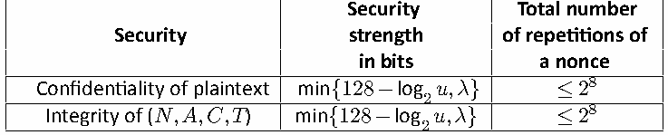
| セキュリティ | ビット単位のセキュリティ強度 | ノンスの総反復回数 |
| 平文の機密性 | min{128−log 𝑢,𝜆} 2 | ≤28 |
| (𝑁,𝐴,𝐶,𝑇)の完全性 | min{128−log 𝑢,𝜆} 2 | ≤28 |
When each (𝑁, 𝐴) pair are reused up to 28 times for encryption per key: In the 𝑢-key setting, where 𝑢 denotes the number of independent keys, the integrity security guarantees of Ascon-AEAD128 and the nonce-masking option with a 𝜆-bit tag are as follows:
鍵ごとの暗号化において各(𝑁, 𝐴)ペアが最大28回まで再使用される場合：𝑢が独立した鍵の数を表す𝑢-key設定において、Ascon-AEAD128および𝜆ビットタグを持つノンスマスキングオプションの完全性セキュリティ保証は以下の通りです：
未レビュー訳•Ascon-AEAD128 provides min{128−log 𝑢,𝜆} bits of integrity security. 2
•Ascon-AEAD128は、min{128−log 𝑢,𝜆}ビットの完全性セキュリティを提供する。 2
未レビュー訳•Nonce-masking option provides 𝜆-bit integrity security.
•ノンスマスキングオプションは、𝜆ビットの完全性セキュリティを提供する。
未レビュー訳These guarantees hold under the condition that each (𝑁, 𝐴) pair is reused at most 28 times for encryption with the same key. The corresponding integrity security levels are summa-rized in Table 8. Furthermore, for both Ascon-AEAD128 and the nonce-masking option, even after a successful forgery, the probability that a subsequent forgery attempt succeeds remains at most 2−𝜆, provided that none of the multiple keys has been compromised.
これらの保証は、各(𝑁, 𝐴)ペアが同一の鍵による暗号化において最大28回まで再利用されるという条件の下で成立する。対応する完全性セキュリティレベルを表8にまとめる。さらに、Ascon-AEAD128およびノンスマスキングオプションの双方において、複数の鍵のいずれも侵害されていない限り、偽造が成功した後であっても、後続の偽造試行が成功する確率は最大2−𝜆のままである。
未レビュー訳Table 8. Integrity security strength of Ascon-AEAD128 with 𝑢 keys in the nonce-misuse setting
表8. ノンス誤用設定における𝑢個の鍵を持つAscon-AEAD128の完全性セキュリティ強度
未レビュー訳| Security | Security strength i n bits | Total number of repetitions of any (𝑁, 𝐴) pair |
| Integrity of (𝑁,𝐴,𝐶,𝑇) | min{128−log 𝑢,𝜆} 2 | ≤28 |
原本の表画像
| セキュリティ | ビット単位のセキュリティ強度 | 任意の(𝑁, 𝐴)ペアの総反復回数 |
| (𝑁,𝐴,𝐶,𝑇)の完全性 | min{128−log 𝑢,𝜆} 2 | ≤28 |
5. Hash and eXtendable-Output Functions (XOFs)
5. ハッシュおよび拡張可能出力関数（XOF）
未レビュー訳Hash and XOF algorithms are built on the 𝐴𝑠𝑐𝑜𝑛-𝑝[12] permutation in a sponge-based mode. This section specifies three functions:
ハッシュおよびXOFアルゴリズムは、スポンジベースのモードにおける𝐴𝑠𝑐𝑜𝑛-𝑝[12]置換に基づいて構築されている。本節では、3つの関数を規定する：
未レビュー訳1.Hash function Ascon-Hash256, which produces a 256-bit digest
1.256ビットのダイジェストを生成するハッシュ関数Ascon-Hash256
未レビュー訳2.Ascon-XOF128 function that produces arbitrary length outputs
2.任意の長さの出力を生成するAscon-XOF128関数
未レビュー訳3.Customized XOF Ascon-CXOF128, which also produces arbitrary length outputs
3.同じく任意の長さの出力を生成する、カスタマイズされたXOFであるAscon-CXOF128
未レビュー訳The designs of these functions differ from the design of Ascon-AEAD128 in three important ways. First, they employ traditional sponge-based modes that only extract output from the state after all input data has been absorbed. Second, the rate of these functions is reduced to 64 bits — half the rate used in Ascon-AEAD128. Finally, the hash and XOF algorithms rely only on the 𝐴𝑠𝑐𝑜𝑛-𝑝[12] permutation, whereas Ascon-AEAD128 employs both 𝐴𝑠𝑐𝑜𝑛-𝑝[12] and 𝐴𝑠𝑐𝑜𝑛-𝑝[8].
これらの関数の設計は、Ascon-AEAD128の設計と主に3つの点で異なっています。第1に、すべての入力データが吸収された後にのみ状態から出力を抽出する従来のスポンジベースのモードを採用している点です。第2に、これらの関数のレートは64ビットに削減されており、これはAscon-AEAD128で使用されるレートの半分です。最後に、ハッシュおよびXOFアルゴリズムは𝐴𝑠𝑐𝑜𝑛-𝑝[12]置換のみに依存しているのに対し、Ascon-AEAD128は𝐴𝑠𝑐𝑜𝑛-𝑝[12]と𝐴𝑠𝑐𝑜𝑛-𝑝[8]の両方を採用している点です。
未レビュー訳In Ascon-XOF128, when different output lengths are specified for the same input message, the shorter output is a prefix of the longer one. If this prefix property is undesirable in a given application, domain separation offers a more robust solution. For instance, Ascon-CXOF128 enables domain separation by allowing output lengths to be encoded into the user-defined customization string.
Ascon-XOF128において、同一の入力メッセージに対して異なる出力長が指定された場合、より短い出力はより長い出力のプレフィックスとなります。特定の用途においてこのプレフィックス特性が望ましくない場合、ドメイン分離がより堅牢なソリューションを提供します。例えば、Ascon-CXOF128では、ユーザー定義のカスタマイズ文字列に出力長をエンコードできるようにすることで、ドメイン分離を可能にしています。
未レビュー訳5.1. Specification of Ascon-Hash256
5.1. Ascon-Hash256の仕様
未レビュー訳The mode of operation used by Ascon-Hash256 and Ascon-XOF128 is shown in Figure 7. This mode comprises three main steps: initialization, absorbing the message, and squeezing the output. The length of the output 𝐿 is 256 for Ascon-Hash256 and 𝐿>0 for Ascon-
Ascon-Hash256およびAscon-XOF128で使用される動作モードを図7に示します。このモードは主に3つのステップ（初期化、メッセージの吸収、および出力のスクイーズ）で構成されます。出力の長さ𝐿は、Ascon-Hash256では256、Ascon-では𝐿 > 0です。
未レビュー訳XOF128.
XOF128。
未レビュー訳Note that the rate and capacity of Ascon-Hash256 are 64 and 256 bits, respectively.
Ascon-Hash256のレートおよびキャパシティは、それぞれ64ビットおよび256ビットであることに注意してください。
未レビュー訳H
未レビュー訳M
未レビュー訳M
未レビュー訳H
未レビュー訳M
未レビュー訳⌈L/64⌉−1
⌈L/64⌉−1
未レビュー訳n−1
n−1
未レビュー訳0
未レビュー訳0
未レビュー訳n
未レビュー訳64
未レビュー訳64 ⧸
64 ⧸
未レビュー訳⧸
未レビュー訳原本の表画像
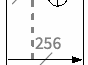
原本の表画像
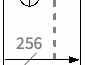
256 256
256 256
未レビュー訳256
256
未レビュー訳256
256
未レビュー訳⧸ ⧸
⧸ ⧸
未レビュー訳⧸
未レビュー訳⧸
未レビュー訳IV∥0256
IV∥0256
未レビュー訳Squeeze Output
出力のスクイーズ
未レビュー訳Absorb Message
メッセージの吸収
未レビュー訳Initialization
初期化
未レビュー訳
Ascon-Hash256およびAscon-XOF128のスポンジ構造。初期化後、メッセージを吸収し、出力を絞り出す。
Figure 7. Structure of Ascon-Hash256 and Ascon-XOF128
図 7. Ascon-Hash256 および Ascon-XOF128 の構造
未レビュー訳Ascon-Hash256 takes a variable length message 𝑀 as input and produces a 256-bit digest. The full specification of Ascon-Hash256 can be found in Algorithm 5 and operates as follows:
Ascon-Hash256 は可変長のメッセージ 𝑀 を入力として受け取り、256ビットのダイジェストを生成します。Ascon-Hash256 の完全な仕様はアルゴリズム 5 に記載されており、次のように動作します。
未レビュー訳1.Initialization. The 320-bit internal state of Ascon-Hash256 is initialized with the concatenation of the 64-bit 𝐼𝑉 = 0x0000080100cc0002 and 256 zeroes, followed by the 𝐴𝑠𝑐𝑜𝑛-𝑝[12] permutation as
1.初期化。Ascon-Hash256 の320ビットの内部状態は、64ビットの 𝐼𝑉 = 0x0000080100cc0002 と256個のゼロの連結で初期化され、続いて次のように 𝐴𝑠𝑐𝑜𝑛-𝑝[12] 置換が適用されます。
未レビュー訳S ← 𝐴𝑠𝑐𝑜𝑛-𝑝[12](𝐼𝑉 ∥0256).
S ← 𝐴𝑠𝑐𝑜𝑛-𝑝[12](𝐼𝑉 ∥0256)。
未レビュー訳(54)
(54)
未レビュー訳2.Absorbing the message. The absorbing phase behaves similarly to the associated data processing of Ascon-AEAD128. The message is parsed into blocks, as
2.メッセージの吸収。吸収フェーズは、Ascon-AEAD128 の関連データ処理と同様に動作します。メッセージは次のようにブロックへとパースされます。
未レビュー訳𝑀 ,…,𝑀 ,𝑀̃ ← parse(𝑀,64),
𝑀 ,…,𝑀 ,𝑀̃ ← parse(𝑀,64),
未レビュー訳(55)
(55)
未レビュー訳0 𝑛−1 𝑛
0 𝑛−1 𝑛
未レビュー訳where |𝑀 | = 64 bits for 0 ≤ 𝑖 ≤ 𝑛−1 and 0 ≤ |𝑀̃| ≤ 63. The last block 𝑀̃ can
ここで、0 ≤ 𝑖 ≤ 𝑛−1 に対して |𝑀 | = 64ビット、かつ 0 ≤ |𝑀̃| ≤ 63 である。最後のブロック 𝑀̃ は
未レビュー訳𝑖
未レビュー訳𝑛
未レビュー訳𝑛
未レビュー訳be empty. Next, 𝑀̃ is padded to create a full block 𝑀 :
空であってもよい。次に、完全なブロック 𝑀 を作成するために 𝑀̃ がパディングされる：
未レビュー訳𝑛
未レビュー訳𝑛
未レビュー訳𝑀 ← pad(𝑀̃,64).
𝑀 ← pad(𝑀̃,64).
未レビュー訳(56)
(56)
未レビュー訳𝑛
未レビュー訳𝑛
未レビュー訳Each message block 𝑀 is XORed with the state as 𝑖
各メッセージブロック 𝑀 は、次のように状態と排他的論理和（XOR）演算されます： 𝑖
未レビュー訳(57)
(57)
未レビュー訳S ← S ⊕𝑀 .
S ← S ⊕𝑀 .
未レビュー訳[0∶63] [0∶63] 𝑖
[0∶63] [0∶63] 𝑖
未レビュー訳For all message blocks except the final block 𝑀 ,the XOR operation is immediately
最後のブロック 𝑀 を除くすべてのメッセージブロックについて、XOR演算の直後に
未レビュー訳𝑛
未レビュー訳followed by applying 𝐴𝑠𝑐𝑜𝑛-𝑝[12] to the state.
状態に対して 𝐴𝑠𝑐𝑜𝑛-𝑝[12] の適用が続きます。
未レビュー訳S ← 𝐴𝑠𝑐𝑜𝑛-𝑝[12](S)
S ← 𝐴𝑠𝑐𝑜𝑛-𝑝[12](S)
未レビュー訳(58)
(58)
未レビュー訳3.Squeezing the hash. The squeezing phase begins after 𝑀 is absorbed with an 𝑛 application of 𝐴𝑠𝑐𝑜𝑛-𝑝[12] to the state:
3.ハッシュのスクイーズ（Squeezing the hash）。スクイーズフェーズは、𝑀 が吸収された後、状態への 𝐴𝑠𝑐𝑜𝑛-𝑝[12] の 𝑛 適用によって開始されます:
未レビュー訳S ← 𝐴𝑠𝑐𝑜𝑛-𝑝[12](S).
S ← 𝐴𝑠𝑐𝑜𝑛-𝑝[12](S)。
未レビュー訳(59)
(59)
未レビュー訳The value of S is then taken as the 64-bit hash block 𝐻 , and the state is again
次に、S の値が64ビットのハッシュブロック 𝐻 として取得され、状態は再び
未レビュー訳[0∶63]
[0∶63]
未レビュー訳𝑖
未レビュー訳updated by 𝐴𝑠𝑐𝑜𝑛-𝑝[12]:
𝐴𝑠𝑐𝑜𝑛-𝑝[12] によって更新される:
未レビュー訳(60)
(60)
未レビュー訳𝐻 ← S
𝐻 ← S
未レビュー訳𝑖 [0∶63]
𝑖 [0∶63]
未レビュー訳S ← 𝐴𝑠𝑐𝑜𝑛-𝑝[12](S).
S ← 𝐴𝑠𝑐𝑜𝑛-𝑝[12](S)。
未レビュー訳(61)
(61)
未レビュー訳Steps (60) and (61) are repeated alternately until hash blocks 𝐻 ,𝐻 , and 𝐻 have
ハッシュブロック 𝐻 、𝐻 、および 𝐻 が抽出されるまで、ステップ (60) と (61) は交互に繰り返されます。
未レビュー訳0 1 2
0 1 2
未レビュー訳been extracted. The final hash block is then extracted but is not followed by the Ascon-p[12] permutation:
その後、最後のハッシュブロックが抽出されますが、その後に Ascon-p[12] 置換は続きません。
未レビュー訳(62)
(62)
未レビュー訳𝐻 ← S .
𝐻 ← S 。
未レビュー訳3 [0∶63]
3 [0∶63]
未レビュー訳The resulting 256-bit digest is the concatenation of hash blocks as
結果として得られる256ビットのダイジェストは、以下のようにハッシュブロックを連結したものである。
未レビュー訳(63)
(63)
未レビュー訳𝐻 ← 𝐻 ∥𝐻 ∥𝐻 ∥𝐻 .
𝐻 ← 𝐻 ∥𝐻 ∥𝐻 ∥𝐻 .
未レビュー訳0 1 2 3
0 1 2 3
未レビュー訳Algorithm 5 Ascon-Hash256(𝑀) Input: Bitstring 𝑀 ∈ {0,1}∗ Output: Digest 𝐻 ∈ {0,1}256
アルゴリズム 5 Ascon-Hash256(𝑀) 入力：ビット列 𝑀 ∈ {0,1}∗ 出力：ダイジェスト 𝐻 ∈ {0,1}256
未レビュー訳▷ Initialization
▷ 初期化
未レビュー訳𝐼𝑉 ←0x0000080100cc0002 S ← 𝐴𝑠𝑐𝑜𝑛-𝑝[12](𝐼𝑉 ‖0256)
𝐼𝑉 ←0x0000080100cc0002 S ← 𝐴𝑠𝑐𝑜𝑛-𝑝[12](𝐼𝑉 ‖0256)
未レビュー訳𝑀 ,…,𝑀 ,𝑀̃ ← parse(𝑀,64)
𝑀 ,…,𝑀 ,𝑀̃ ← parse(𝑀,64)
未レビュー訳▷ Absorbing
▷ 吸収（Absorbing）
未レビュー訳0 𝑛−1 𝑛 𝑀 ← pad(𝑀̃,64) 𝑛 𝑛 for 𝑖 = 0 to 𝑛−1 do
0 𝑛−1 𝑛 𝑀 ← pad(𝑀̃,64) 𝑛 𝑛 for 𝑖 = 0 to 𝑛−1 do
未レビュー訳S ← S ⊕𝑀
S ← S ⊕𝑀
未レビュー訳[0∶63] [0∶63] 𝑖 S ← 𝐴𝑠𝑐𝑜𝑛-𝑝[12](S)
[0∶63] [0∶63] 𝑖 S ← 𝐴𝑠𝑐𝑜𝑛-𝑝[12](S)
未レビュー訳end for
end for
未レビュー訳S ← S ⊕𝑀
S ← S ⊕𝑀
未レビュー訳[0∶63] [0∶63] 𝑛
[0∶63] [0∶63] 𝑛
未レビュー訳S ← 𝐴𝑠𝑐𝑜𝑛-𝑝[12](S)
S ← 𝐴𝑠𝑐𝑜𝑛-𝑝[12](S)
未レビュー訳▷ Squeezing
▷ スクイージング
未レビュー訳for 𝑖 = 0 to 2 do
for 𝑖 = 0 to 2 do
未レビュー訳𝐻 ← S
𝐻 ← S
未レビュー訳𝑖 [0∶63] S ← 𝐴𝑠𝑐𝑜𝑛-𝑝[12](S)
𝑖 [0∶63] S ← 𝐴𝑠𝑐𝑜𝑛-𝑝[12](S)
未レビュー訳end for
end for
未レビュー訳𝐻 ← S
𝐻 ← S
未レビュー訳3.The initial values used in Ascon-XOF128 and Ascon-Hash256 are different.
3.Ascon-XOF128とAscon-Hash256で使用される初期値は異なります。
未レビュー訳The 128 in the name Ascon-XOF128 refers to the target security strength, not the output size. Note that the rate and capacity of Ascon-XOF128 are 64 and 256 bits, respectively.
Ascon-XOF128という名称における128は、出力サイズではなく目標とするセキュリティ強度を指します。なお、Ascon-XOF128のレートとキャパシティはそれぞれ64ビットおよび256ビットであることに注意してください。
未レビュー訳Ascon-XOF128 is specified by Algorithm 6 and is described as follows:
Ascon-XOF128はアルゴリズム6によって規定され、次のように記述されます。
未レビュー訳1.Initialization. The 320-bit internal state of Ascon-XOF128 is initialized with the concatenation of the 64-bit 𝐼𝑉 = 0x0000080000cc0003 and 256 zeroes, followed by the 𝐴𝑠𝑐𝑜𝑛-𝑝[12] permutation:
1.初期化。Ascon-XOF128の320ビットの内部状態は、64ビットの𝐼𝑉 = 0x0000080000cc0003と256個のゼロの連結で初期化され、続いて𝐴𝑠𝑐𝑜𝑛-𝑝[12]置換が適用されます。
未レビュー訳S ← 𝐴𝑠𝑐𝑜𝑛-𝑝[12](𝐼𝑉 ∥0256).
S ← 𝐴𝑠𝑐𝑜𝑛-𝑝[12](𝐼𝑉 ∥0256)。
未レビュー訳(64)
(64)
未レビュー訳2.Absorbing the message. The absorbing phase behaves the same as that of Ascon-Hash256. The message is parsed into blocks as
2.メッセージの吸収。吸収フェーズはAscon-Hash256のものと同様に動作します。メッセージは次のようにブロックへとパースされます。
未レビュー訳𝑀 ,…,𝑀 ,𝑀̃ ← parse(𝑀,64).
𝑀 ,…,𝑀 ,𝑀̃ ← parse(𝑀,64)。
未レビュー訳(65)
(65)
未レビュー訳0 𝑛−1 𝑛
0 𝑛−1 𝑛
未レビュー訳where |𝑀 | = 64 bits for 0 ≤ 𝑖 ≤ 𝑛−1 and 0 ≤ |𝑀̃| ≤ 63. Partial block 𝑀̃ is then
ここで、0 ≤ 𝑖 ≤ 𝑛−1 に対して |𝑀 | = 64ビット、および 0 ≤ |𝑀̃| ≤ 63 である。その後、不完全ブロック 𝑀̃ は
未レビュー訳𝑖
未レビュー訳𝑛
未レビュー訳𝑛
未レビュー訳padded to a full block 𝑀 as
次のように完全なブロック 𝑀 にパディングされる：
未レビュー訳𝑛
未レビュー訳𝑀 ← pad(𝑀̃,64).
𝑀 ← pad(𝑀̃,64)。
未レビュー訳(66)
(66)
未レビュー訳𝑛
未レビュー訳𝑛
未レビュー訳Each message block 𝑀 is absorbed by XORing the block into the state as
各メッセージブロック 𝑀 は、次のようにそのブロックを状態へとXOR演算することで吸収される：
未レビュー訳𝑖
未レビュー訳(67)
(67)
未レビュー訳S ← S ⊕𝑀 .
S ← S ⊕𝑀 .
未レビュー訳[0∶63] [0∶63] 𝑖
[0∶63] [0∶63] 𝑖
未レビュー訳For all message blocks except the final block, the XOR operation is immediately followed by an application of 𝐴𝑠𝑐𝑜𝑛-𝑝[12] to the state:
最終ブロックを除くすべてのメッセージブロックについて、XOR演算の直後に状態に対する 𝐴𝑠𝑐𝑜𝑛-𝑝[12] の適用が行われる：
未レビュー訳S ← 𝐴𝑠𝑐𝑜𝑛-𝑝[12](S).
S ← 𝐴𝑠𝑐𝑜𝑛-𝑝[12](S).
未レビュー訳(68)
(68)
未レビュー訳3.Squeezing the outputs. To obtain the requested 𝐿 output bits, ℎ = ⌈𝐿/64⌉ blocks must be extracted from the state. The squeezing phase begins with an application of 𝐴𝑠𝑐𝑜𝑛-𝑝[12] to the state: S ← 𝐴𝑠𝑐𝑜𝑛-𝑝[12](S). (69)
3.出力のスクイーズ（Squeezing the outputs）。要求された 𝐿 出力ビットを取得するために、ステートから ℎ = ⌈𝐿/64⌉ ブロックを抽出する必要があります。スクイーズフェーズは、ステートへの 𝐴𝑠𝑐𝑜𝑛-𝑝[12] の適用から始まります：S ← 𝐴𝑠𝑐𝑜𝑛-𝑝[12](S)。 (69)
未レビュー訳The value of S is then taken as output block 𝐻 , and the state is again updated
その後、S の値が出力ブロック 𝐻 として取得され、ステートは再び更新されます
未レビュー訳[0∶63]
[0∶63]
未レビュー訳𝑖
未レビュー訳by 𝐴𝑠𝑐𝑜𝑛-𝑝[12]:
（𝐴𝑠𝑐𝑜𝑛-𝑝[12] によって）：
未レビュー訳(70)
(70)
未レビュー訳𝐻 ← S
𝐻 ← S
未レビュー訳𝑖 [0∶63]
𝑖 [0∶63]
未レビュー訳S ← 𝐴𝑠𝑐𝑜𝑛-𝑝[12](S).
S ← 𝐴𝑠𝑐𝑜𝑛-𝑝[12](S).
未レビュー訳(71)
(71)
未レビュー訳Steps (70) and (71) are repeated alternately until output blocks 𝐻 ,…,𝐻 have
出力ブロック𝐻 ,…,𝐻 がスクイーズされるまで、ステップ(70)と(71)が交互に繰り返される。
未レビュー訳0 ℎ−1
0 ℎ−1
未レビュー訳been squeezed. The final block is then squeezed without an additional permutation call:
その後、追加の置換呼び出しを行うことなく、最終ブロックがスクイーズされる。
未レビュー訳(72)
(72)
未レビュー訳𝐻 ← S .
𝐻 ← S .
未レビュー訳ℎ [0∶63]
ℎ [0∶63]
未レビュー訳Finally, the output blocks are concatenated, and the first 𝐿 bits are returned as output
最後に、出力ブロックが連結され、最初の𝐿ビットが出力として返される
未レビュー訳𝐻:
𝐻:
未レビュー訳𝐻′ ← 𝐻 ∥…∥𝐻
𝐻′ ← 𝐻 ∥…∥𝐻
未レビュー訳(73)
(73)
未レビュー訳0 ℎ
0 ℎ
未レビュー訳𝐻 ← 𝐻′ .
𝐻 ← 𝐻′ .
未レビュー訳(74)
(74)
未レビュー訳[0∶𝐿−1]
[0∶𝐿−1]
未レビュー訳Algorithm 6 Ascon-XOF128(𝑀, 𝐿) Input: Bitstring 𝑀 ∈ {0,1}∗, output length 𝐿 > 0 Output: Digest 𝐻 ∈ {0,1}𝐿
アルゴリズム 6 Ascon-XOF128(𝑀, 𝐿) 入力：ビット列 𝑀 ∈ {0,1}∗、出力長 𝐿 > 0 出力：ダイジェスト 𝐻 ∈ {0,1}𝐿
未レビュー訳▷ Initialization
▷ 初期化（Initialization）
未レビュー訳𝐼𝑉 ← 0x0000080000cc0003 S ← 𝐴𝑠𝑐𝑜𝑛-𝑝[12](𝐼𝑉 ‖0256)
𝐼𝑉 ← 0x0000080000cc0003 S ← 𝐴𝑠𝑐𝑜𝑛-𝑝[12](𝐼𝑉 ‖0256)
未レビュー訳𝑀 ,…,𝑀 ,𝑀̃ ← parse(𝑀,64)
𝑀 ,…,𝑀 ,𝑀̃ ← parse(𝑀,64)
未レビュー訳▷ Absorbing
▷ 吸収（Absorbing）
未レビュー訳0 𝑛−1 𝑛 𝑀 ← pad(𝑀̃,64) 𝑛 𝑛 for 𝑖 = 0 to 𝑛−1 do
0 𝑛−1 𝑛 𝑀 ← pad(𝑀̃,64) 𝑛 𝑛 𝑖 = 0 から 𝑛−1 まで繰り返す：
未レビュー訳S ← S ⊕𝑀
S ← S ⊕𝑀
未レビュー訳[0∶63] [0∶63] 𝑖 S ← 𝐴𝑠𝑐𝑜𝑛-𝑝[12](S)
[0∶63] [0∶63] 𝑖 S ← 𝐴𝑠𝑐𝑜𝑛-𝑝[12](S)
未レビュー訳end for
end for
未レビュー訳S ← S ⊕𝑀
S ← S ⊕𝑀
未レビュー訳[0∶63] [0∶63] 𝑛
[0∶63] [0∶63] 𝑛
未レビュー訳S ← 𝐴𝑠𝑐𝑜𝑛-𝑝[12](S)
S ← 𝐴𝑠𝑐𝑜𝑛-𝑝[12](S)
未レビュー訳▷ Squeezing
▷ スクイーフィング（Squeezing）
未レビュー訳ℎ ← ⌈𝐿/64⌉−1 for 𝑖 = 0 to ℎ−1 do
ℎ ← ⌈𝐿/64⌉−1 for 𝑖 = 0 to ℎ−1 do
未レビュー訳𝐻 ← S
𝐻 ← S
未レビュー訳𝑖 [0∶63] S ← 𝐴𝑠𝑐𝑜𝑛-𝑝[12](S)
𝑖 [0∶63] S ← 𝐴𝑠𝑐𝑜𝑛-𝑝[12](S)
未レビュー訳end for
end for
未レビュー訳𝐻 ← S
𝐻 ← S
未レビュー訳ℎ [0∶63]
ℎ [0∶63]
未レビュー訳𝐻′ ← 𝐻 ‖…‖𝐻
𝐻′ ← 𝐻 ‖…‖𝐻
未レビュー訳5.3. Specification of Ascon-CXOF128
5.3. Ascon-CXOF128の仕様
未レビュー訳This section defines Ascon-CXOF128, which is a customized variant of Ascon-XOF128 that extends its functionality by incorporating a user-defined customization string. This feature enables domain separation, ensuring that two instances of Ascon-CXOF128 with the same input message but different customization strings produce distinct outputs.
本節では、ユーザー定義のカスタマイズ文字列を組み込むことでその機能を拡張したAscon-XOF128のカスタマイズ版であるAscon-CXOF128を定義する。この機能によりドメイン分離が可能となり、同じ入力メッセージであってもカスタマイズ文字列が異なる2つのAscon-CXOF128のインスタンスが別々の出力を生成することが保証される。
未レビュー訳In addition to the message 𝑀 and output length 𝐿, Ascon-CXOF128 takes the customization string 𝑍 as input. After initialization, the length of 𝑍, in bits, is assigned to the 64-bit block 𝑍 as 0 𝑍 =int64(|𝑍|). (75) 0
メッセージ 𝑀 および出力長 𝐿 に加えて、Ascon-CXOF128は入力としてカスタマイズ文字列 𝑍 を受け取る。初期化後、ビット単位の 𝑍 の長さが64ビットブロック 𝑍 に 0 𝑍 = int64(|𝑍|) として代入される。
未レビュー訳(75)
(75)
未レビュー訳0
未レビュー訳Then, 𝑍 is parsed into blocks as
次に、𝑍 は次のようにブロックに分割される。
未レビュー訳𝑍 ,…,𝑍 ,𝑍̃ ← parse(𝑍,64),
𝑍 ,…,𝑍 ,𝑍̃ ← parse(𝑍,64),
未レビュー訳(76)
(76)
未レビュー訳1 𝑚−1 𝑚
1 𝑚−1 𝑚
未レビュー訳where |𝑍 | = 64 bits for 0 ≤ 𝑖 ≤ 𝑚−1 and 0 ≤ |𝑍̃| ≤ 63. The partial block 𝑍̃ is then
ここで、0 ≤ 𝑖 ≤ 𝑚−1 に対して |𝑍 | = 64 ビット、かつ 0 ≤ |𝑍̃| ≤ 63 である。その後、部分ブロック 𝑍̃ は
未レビュー訳𝑖
未レビュー訳𝑚
未レビュー訳𝑚
未レビュー訳padded to a full block 𝑍 as
次のように完全ブロック 𝑍 にパディングされる：
未レビュー訳𝑚
未レビュー訳𝑍 ← pad(𝑍̃,64).
𝑍 ← pad(𝑍̃,64).
未レビュー訳(77)
(77)
未レビュー訳𝑚
未レビュー訳𝑚
未レビュー訳The customization string 𝑍 is prepended to the message blocks as
カスタマイズ文字列𝑍は、以下のようにメッセージブロックの先頭に付加される。
未レビュー訳(78)
(78)
未レビュー訳𝑍 ∥𝑍 ∥…∥𝑍 ∥𝑀 ∥…∥𝑀 ∥𝑀 ,
𝑍 ∥𝑍 ∥…∥𝑍 ∥𝑀 ∥…∥𝑀 ∥𝑀 ,
未レビュー訳0 1 𝑚 0 𝑛−1 𝑛
0 1 𝑚 0 𝑛−1 𝑛
未レビュー訳where the message blocks are generated similarly as in Ascon-XOF128.
ここで、メッセージブロックはAscon-XOF128と同様に生成される。
未レビュー訳Although similar to Ascon-XOF128, Ascon-CXOF128 uses a different IV. Hence, the concate-nation of the customization string and the message produces different outputs for Ascon-XOF128 and Ascon-CXOF128. The IV for Ascon-CXOF128 is 0x0000080000cc0004.
Ascon-CXOF128はAscon-XOF128と類似しているものの、異なるIVを使用する。したがって、カスタマイズ文字列とメッセージの連結は、Ascon-XOF128とAscon-CXOF128で異なる出力を生成する。Ascon-CXOF128のIVは0x0000080000cc0004である。
未レビュー訳The general structure for Ascon-CXOF128 is shown in Figure 8 and the full specification is provided in Algorithm 7.
Ascon-CXOF128の一般的な構造を図8に示し、完全な仕様をアルゴリズム7に示す。
未レビュー訳The length of the customization string shall be at most 2048 bits (i.e., 256 bytes).
カスタマイズ文字列の長さは、最大2048ビット（すなわち256バイト）でなければならない。
未レビュー訳Algorithm 7 Ascon-CXOF128(𝑀, 𝐿, 𝑍) Input: Bitstring 𝑀 ∈ {0,1}∗, output length 𝐿 > 0, customization string 𝑍 ∈ {0,1}∗, where
アルゴリズム 7 Ascon-CXOF128(𝑀, 𝐿, 𝑍) 入力: ビット文字列 𝑀 ∈ {0,1}∗、出力長 𝐿 > 0、カスタマイズ文字列 𝑍 ∈ {0,1}∗、ここで
未レビュー訳|𝑍| ≤ 2048
|𝑍| ≤ 2048
未レビュー訳Output: Digest 𝐻 ∈ {0,1}𝐿
出力: ダイジェスト 𝐻 ∈ {0,1}𝐿
未レビュー訳▷ Initialization
▷ 初期化
未レビュー訳𝐼𝑉 ← 0x0000080000cc0004 S ← 𝐴𝑠𝑐𝑜𝑛-𝑝[12](𝐼𝑉 ‖0256)
𝐼𝑉 ← 0x0000080000cc0004 S ← 𝐴𝑠𝑐𝑜𝑛-𝑝[12](𝐼𝑉 ‖0256)
未レビュー訳𝑍 ← int64(|𝑍|)
𝑍 ← int64(|𝑍|)
未レビュー訳▷ Customization
▷ カスタマイズ
未レビュー訳0 𝑍 …,𝑍 ,𝑍̃ ← parse(𝑍,64) 1 𝑚−1 𝑚 𝑍 ← pad(𝑍̃,64) 𝑚 𝑚 for 𝑖 = 0 to 𝑚 do
0 𝑍 …,𝑍 ,𝑍̃ ← parse(𝑍,64) 1 𝑚−1 𝑚 𝑍 ← pad(𝑍̃,64) 𝑚 𝑚 for 𝑖 = 0 to 𝑚 do
未レビュー訳S ← S ⊕𝑍
S ← S ⊕𝑍
未レビュー訳[0∶63] [0∶63] 𝑖 S ← 𝐴𝑠𝑐𝑜𝑛-𝑝[12](S)
[0∶63] [0∶63] 𝑖 S ← 𝐴𝑠𝑐𝑜𝑛-𝑝[12](S)
未レビュー訳end for
end for
未レビュー訳𝑀 ,…,𝑀 ,𝑀̃ ← parse(𝑀,64)
𝑀 ,…,𝑀 ,𝑀̃ ← parse(𝑀,64)
未レビュー訳▷ Absorbing
▷ 吸収（Absorbing）
未レビュー訳0 𝑛−1 𝑛 𝑀 ← pad(𝑀̃,64) 𝑛 𝑛 for 𝑖 = 0 to 𝑛−1 do
0 𝑛−1 𝑛 𝑀 ← pad(𝑀̃,64) 𝑛 𝑛 for 𝑖 = 0 to 𝑛−1 do
未レビュー訳S ← S ⊕𝑀
S ← S ⊕𝑀
未レビュー訳[0∶63] [0∶63] 𝑖 S ← 𝐴𝑠𝑐𝑜𝑛-𝑝[12](S)
[0∶63] [0∶63] 𝑖 S ← 𝐴𝑠𝑐𝑜𝑛-𝑝[12](S)
未レビュー訳end for
end for
未レビュー訳S ← S ⊕𝑀
S ← S ⊕𝑀
未レビュー訳[0∶63] [0∶63] 𝑛
[0∶63] [0∶63] 𝑛
未レビュー訳S ← 𝐴𝑠𝑐𝑜𝑛-𝑝[12](S)
S ← 𝐴𝑠𝑐𝑜𝑛-𝑝[12](S)
未レビュー訳▷ Squeezing
▷ スクイージング（Squeezing）
未レビュー訳ℎ ← ⌈𝐿/64⌉−1 for 𝑖 = 0 to ℎ−1 do
ℎ ← ⌈𝐿/64⌉−1 for 𝑖 = 0 to ℎ−1 do
未レビュー訳𝐻 ← S
𝐻 ← S
未レビュー訳𝑖 [0∶63] S ← 𝐴𝑠𝑐𝑜𝑛-𝑝[12](S)
𝑖 [0∶63] S ← 𝐴𝑠𝑐𝑜𝑛-𝑝[12](S)
未レビュー訳end for
end for
未レビュー訳𝐻 ← S
𝐻 ← S
未レビュー訳ℎ [0∶63]
ℎ [0∶63]
未レビュー訳𝐻′ ← 𝐻 ‖…‖𝐻
𝐻′ ← 𝐻 ‖…‖𝐻
未レビュー訳H⌈L/64⌉−1
H⌈L/64⌉−1
未レビュー訳Zm−1
Zm−1
未レビュー訳Mn−1
Mn−1
未レビュー訳Z0
未レビュー訳M0
未レビュー訳H0
未レビュー訳Zm
未レビュー訳Mn
未レビュー訳64
未レビュー訳64
未レビュー訳⧸
未レビュー訳⧸
未レビュー訳原本の表画像
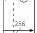
原本の表画像
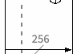
原本の表画像
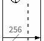
256 256
256 256
未レビュー訳256 256
256 256
未レビュー訳256 256
256 256
未レビュー訳⧸ ⧸
⧸ ⧸
未レビュー訳⧸ ⧸
⧸ ⧸
未レビュー訳⧸
未レビュー訳⧸
未レビュー訳IV∥0256
IV∥0256
未レビュー訳Squeeze Output
スクイズ出力（Squeeze Output）
未レビュー訳Absorb Message
メッセージの吸収（Absorb Message）
未レビュー訳Initialization
初期化（Initialization）
未レビュー訳Customization
カスタマイズ（Customization）
未レビュー訳
Ascon-CXOF128の処理構造。カスタマイズ文字列を取り込み、その後メッセージを吸収して出力を生成する。
Figure 8. Structure of Ascon-CXOF128
図 8. Ascon-CXOF128の構造
未レビュー訳5.4. Streaming API for XOF
5.4. XOF向けのストリーミングAPI
未レビュー訳Ascon-XOF128 and Ascon-CXOF128 support incremental processing of input data, without the prior knowledge of complete input or output lengths. This makes them suitable for applications where data is received or processed in blocks. In particular, when using Ascon-XOF128 and Ascon-CXOF128, it is not necessary to know the output length 𝐿 at the time that the final block is squeezed.
Ascon-XOF128およびAscon-CXOF128は、入力や出力の完全な長さを事前に知ることなく、入力データの逐次処理（インクリメンタル処理）をサポートします。これにより、データがブロック単位で受信または処理されるアプリケーションに適しています。特に、Ascon-XOF128およびAscon-CXOF128を使用する場合、最後のブロックがスクイーズされる時点において出力長𝐿を知っている必要はありません。
未レビュー訳The following three functions can be used to create incremental implementations for Ascon-XOF128.
以下の3つの関数を使用して、Ascon-XOF128のインクリメンタルな実装を作成できます。
未レビュー訳•𝑐𝑡𝑥 ← Ascon-XOF128.Init() Initializes and returns Ascon-XOF128 context 𝑐𝑡𝑥. Restriction: Must be called exactly once before any call to Absorb or Squeeze.
•𝑐𝑡𝑥 ← Ascon-XOF128.Init() Ascon-XOF128コンテキスト𝑐𝑡𝑥を初期化して返します。制限事項: AbsorbまたはSqueezeを呼び出す前に、正確に1回だけ呼び出されなければなりません。
未レビュー訳•𝑐𝑡𝑥 ← Ascon-XOF128.Absorb(𝑐𝑡𝑥, str) Absorbs an arbitrary-length input str into the state and updates the context 𝑐𝑡𝑥. Restriction: May be called multiple times after Init, but cannot be called after any call to Squeeze.
•𝑐𝑡𝑥 ← Ascon-XOF128.Absorb(𝑐𝑡𝑥, str) 任意長の入力strを状態に吸収（absorb）し、コンテキスト𝑐𝑡𝑥を更新します。制限事項: Initの後に複数回呼び出すことができますが、Squeezeの呼び出しの後に呼び出すことはできません。
未レビュー訳•(𝑐𝑡𝑥, 𝑜𝑢𝑡) ← Ascon-XOF128.Squeeze(𝑐𝑡𝑥, 𝐿) Extracts 𝐿 output bits produced during the squeezing phase of Ascon-XOF128 and updates context 𝑐𝑡𝑥. Restriction: May be called multiple times after the absorb phase is complete, but must not be called before Init. The first call of Squeeze handles the padding of the final message block. Once Squeeze is called, no further calls to Absorb are permitted.
•(𝑐𝑡𝑥, 𝑜𝑢𝑡) ← Ascon-XOF128.Squeeze(𝑐𝑡𝑥, 𝐿) Ascon-XOF128のスクイーズ段階中に生成される𝐿ビットの出力を抽出し、コンテキスト𝑐𝑡𝑥を更新します。制限事項: 吸収段階の完了後は複数回呼び出すことができますが、Initの前に呼び出してはなりません。Squeezeの最初の呼び出しで、最終メッセージブロックのパディングを処理します。一度Squeezeが呼び出されると、それ以上のAbsorbの呼び出しは許可されません。
未レビュー訳These functions perform buffering of partial blocks, allowing both input and output to be processed in arbitrary-length segments. Therefore, these functions can then be used to begin execution without knowing the complete message 𝑀 at the start of the absorption phase or the value 𝐿 at the time that the final block is squeezed. This API is similar to those proposed for SHAKE-128 and SHAKE-256 in [22]. Similar interfaces can be defined for incremental implementations of Ascon-AEAD128 and Ascon-Hash256.
これらの関数は部分ブロックのバッファリングを実行し、入力と出力の両方を任意長のセグメントで処理できるようにします。したがって、これらの関数を使用することで、吸収段階の開始時にメッセージ𝑀全体を知ることなく、また最後のブロックがスクイーズされる時点で値𝐿を知ることなく、実行を開始できます。このAPIは、[22]でSHAKE-128およびSHAKE-256に対して提案されているものと類似しています。同様のインターフェースは、Ascon-AEAD128およびAscon-Hash256のインクリメンタルな実装に対しても定義できます。
未レビュー訳5.5. Security Strengths
5.5. セキュリティ強度
未レビュー訳The security strengths of Ascon-Hash256, Ascon-XOF128, and Ascon-CXOF128 are sum-marized in Table 9.
Ascon-Hash256、Ascon-XOF128、およびAscon-CXOF128のセキュリティ強度は表9に要約されている。
未レビュー訳Table 9. Security strengths of Ascon-Hash256, Ascon-XOF128, and Ascon-CXOF128 algorithms
表 9. Ascon-Hash256、Ascon-XOF128、およびAscon-CXOF128アルゴリズムのセキュリティ強度
未レビュー訳| Function | Output size in bits | Security strength in bits |
| Collision | Preimage / 2nd Preimage | |
| Ascon-Hash256 | 256 / 128 | 128 / 128 |
| Ascon-XOF128 | 𝐿 / min(𝐿/2,128) | min(𝐿,128) / min(𝐿,128) |
| Ascon-CXOF128 | 𝐿 / min(𝐿/2,128) | min(𝐿,128) / min(𝐿,128) |
原本の表画像
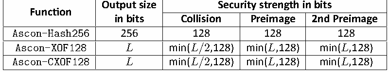
| 関数 | 出力サイズ（ビット単位） | セキュリティ強度（ビット単位） |
| 衝突 | 原像 / 第2原像 | |
| Ascon-Hash256 | 256 / 128 | 128 / 128 |
| Ascon-XOF128 | 𝐿 / min(𝐿/2,128) | min(𝐿,128) / min(𝐿,128) |
| Ascon-CXOF128 | 𝐿 / min(𝐿/2,128) | min(𝐿,128) / min(𝐿,128) |
If the message is known to belong to a set M, the preimage resistance is also limited by the size of M. For more information about security strengths against preimage attacks in different scenarios, refer to [19, 23].
メッセージが集合Mに属することが既知である場合、原像耐性もMのサイズによって制限される。異なるシナリオにおける原像攻撃に対するセキュリティ強度の詳細については、[19, 23]を参照のこと。
未レビュー訳6. Conformance
6. 適合性
未レビュー訳The implementations of Ascon-AEAD128, Ascon-Hash256, Ascon-XOF128, and Ascon-CXOF128 may be tested for conformance to this standard under the Cryptographic Valida-tion Program [24]. Example test vectors are available from the Cryptographic Algorithm Validation Program (CAVP) [25].
Ascon-AEAD128、Ascon-Hash256、Ascon-XOF128、およびAscon-CXOF128の実装は、暗号検証プログラム（Cryptographic Validation Program）[24]に基づいて本規格への適合性を試験できる。試験ベクトルの例は、暗号アルゴリズム検証プログラム（Cryptographic Algorithm Validation Program, CAVP）[25]から入手できる。
未レビュー訳Ascon-Hash256 is an approved cryptographic hash function; however, its use within the Keyed-Hash Message Authentication Code (HMAC) is not approved in this standard. Simi-larly, the use of Ascon-XOF128and Ascon-CXOF128 within HMAC is not approved.
Ascon-Hash256は承認済みの暗号ハッシュ関数である。ただし、本規格では鍵付きハッシュメッセージ認証コード（Keyed-Hash Message Authentication Code, HMAC）内での使用を承認していない。同様に、HMAC内でAscon-XOF128およびAscon-CXOF128を使用することも承認していない。
未レビュー訳Ascon-XOF128 and Ascon-CXOF128 are approved XOFs, and their approved uses will be specified in other NIST publications. While some of these uses may overlap with those of approved hash functions, XOFs are not approved as hash functions.
Ascon-XOF128およびAscon-CXOF128は承認済みの拡張出力関数（XOF）であり、その承認用途はNISTの他の出版物で規定される。一部の用途は承認済みハッシュ関数の用途と重なる場合があるが、XOFはハッシュ関数として承認されていない。
未レビュー訳The Ascon permutations, including variants with different numbers of rounds, may be approved for additional applications if corresponding modes of operation are developed and approved within a FIPS or a NIST Special Publication.
異なるラウンド数のバリアントを含むAscon置換も、対応する利用モードが開発され、FIPSまたはNIST特別刊行物（SP）で承認されれば、追加用途に承認される場合がある。
未レビュー訳References
参考文献
未レビュー訳[1] Dobraunig C, Eichlseder M, Mendel F, Schläffer M (2014) Ascon v1, Submission to Round 1 of the CAESAR competition. Available at https://competitions.cr.yp.to/roun d1/asconv1.pdf. [2] Dobraunig C, Eichlseder M, Mendel F, Schläffer M (2015) Ascon v1.1, Submission to Round 2 of the CAESAR competition. Available at https://competitions.cr.yp.to/roun d2/asconv11.pdf. [3] Dobraunig C, Eichlseder M, Mendel F, Schläffer M (2016) Ascon v1.2, Submission to Round 3 of the CAESAR competition. Available at https://competitions.cr.yp.to/roun d3/asconv12.pdf. [4] National Institute of Standards and Technology (Published 2001; Updated 2023) Ad-vanced Encryption Standard (AES), FIPS 197. https://doi.org/10.6028/NIST.FIPS.197-u pd1. [5] Dworkin MJ (2007) Recommendation for Block Cipher Modes of Operation: Ga-lois/Counter Mode (GCM) and GMAC (National Institute of Standards and Technology), Report. DOI:10.6028/NIST.SP.800-38D [6] National Institute of Standards and Technology (2015) Secure Hash Standard (SHS) (U.S. Department of Commerce), Report. DOI:10.6028/NIST.FIPS.180-4 [7] National Institute of Standards and Technology (2015) SHA-3 Standard: Permutation-Based Hash and Extendable-Output Functions (U.S. Department of Commerce), Report.
[1] Dobraunig C, Eichlseder M, Mendel F, Schläffer M (2014) Ascon v1, Submission to Round 1 of the CAESAR competition（参考訳：Ascon v1：CAESARコンペティション第1ラウンドへの提出）. 入手先： https://competitions.cr.yp.to/roun d1/asconv1.pdf. [2] Dobraunig C, Eichlseder M, Mendel F, Schläffer M (2015) Ascon v1.1, Submission to Round 2 of the CAESAR competition（参考訳：Ascon v1.1：CAESARコンペティション第2ラウンドへの提出）. 入手先： https://competitions.cr.yp.to/roun d2/asconv11.pdf. [3] Dobraunig C, Eichlseder M, Mendel F, Schläffer M (2016) Ascon v1.2, Submission to Round 3 of the CAESAR competition（参考訳：Ascon v1.2：CAESARコンペティション第3ラウンドへの提出）. 入手先： https://competitions.cr.yp.to/roun d3/asconv12.pdf. [4] National Institute of Standards and Technology (Published 2001; Updated 2023) Ad-vanced Encryption Standard (AES)（参考訳：高度暗号化標準（AES））, FIPS 197. https://doi.org/10.6028/NIST.FIPS.197-u pd1. [5] Dworkin MJ (2007) Recommendation for Block Cipher Modes of Operation: Ga-lois/Counter Mode (GCM) and GMAC（参考訳：Galois/Counter Mode（GCM）およびGMAC） (National Institute of Standards and Technology), Report. DOI:10.6028/NIST.SP.800-38D [6] National Institute of Standards and Technology (2015) Secure Hash Standard (SHS)（参考訳：セキュアハッシュ標準（SHS）） (U.S. Department of Commerce), Report. DOI:10.6028/NIST.FIPS.180-4 [7] National Institute of Standards and Technology (2015) SHA-3 Standard: Permutation-Based Hash and Extendable-Output Functions（参考訳：SHA-3標準：置換ベースのハッシュ関数および拡張出力関数） (U.S. Departmentof Commerce), Report.
未レビュー訳DOI:10.6028/NIST.FIPS.202
DOI:10.6028/NIST.FIPS.202
未レビュー訳[8] Dobraunig C, Eichlseder M, Mendel F, Schläffer M (2021) Ascon v1.2, Submission to Final Round of the NIST Lightweight Cryptography project. Available at https: //csrc.nist.gov/CSRC/media/Projects/lightweight-cryptography/documents/finalist-r ound/updated-spec-doc/ascon-spec-final.pdf. [9] Sönmez Turan M, McKay KA, Çalık Ç, Chang D, Bassham I Lawrence E (2019) Status Re-port on the First Round of the NIST Lightweight Cryptography Standardization Process (National Institute of Standards and Technology), Report. DOI:10.6028/NIST.IR.8268 [10] Sönmez Turan M, McKay KA, Chang D, Çalık Ç, Bassham I Lawrence E, Kang J, Kelsey J (2021) Status Report on the Second Round of the NIST Lightweight Cryptography Standardization Process (National Institute of Standards and Technology), Report.
[8] Dobraunig C, Eichlseder M, Mendel F, Schläffer M (2021) Ascon v1.2, Submission to Final Round of the NIST Lightweight Cryptography project（参考訳：Ascon v1.2：NIST軽量暗号標準化プロジェクト最終ラウンドへの提出）. 入手先： https: //csrc.nist.gov/CSRC/media/Projects/lightweight-cryptography/documents/finalist-r ound/updated-spec-doc/ascon-spec-final.pdf. [9] Sönmez Turan M, McKay KA, Çalık Ç, Chang D, Bassham I Lawrence E (2019) Status Re-port on the First Round of the NIST Lightweight Cryptography Standardization Process（参考訳：NIST軽量暗号標準化プロセス第1ラウンドの状況報告） (National Institute of Standards and Technology), Report. DOI:10.6028/NIST.IR.8268 [10] Sönmez Turan M, McKay KA, Chang D, Çalık Ç, Bassham I Lawrence E, Kang J, Kelsey J (2021) Status Report on the Second Round of the NIST Lightweight Cryptography Standardization Process（参考訳：NIST軽量暗号標準化プロセス第2ラウンドの状況報告） (National Institute of Standards and Technology), Report.
未レビュー訳DOI:10.6028/NIST.IR.8369
DOI:10.6028/NIST.IR.8369
未レビュー訳[11] Sönmez Turan M, McKay KA, Chang D, Bassham L, Kang J, Waller N, Kelsey J, Hong D (2023) Status Report on the Final Round of the NIST Lightweight Cryptography Standardization Process (National Institute of Standards and Technology), Report.
[11] Sönmez Turan M, McKay KA, Chang D, Bassham L, Kang J, Waller N, Kelsey J, Hong D (2023) Status Report on the Final Round of the NIST Lightweight Cryptography Standardization Process（参考訳：NIST軽量暗号標準化プロセス最終ラウンドの状況報告） (National Institute of Standards and Technology), Report.
未レビュー訳DOI:10.6028/NIST.IR.8454
DOI:10.6028/NIST.IR.8454
未レビュー訳[12] Bellare M, Hoang VT (2022) Efficient Schemes for Committing Authenticated Encryp-tion. Advances in Cryptology - EUROCRYPT 2022 - 41st Annual International Conference on the Theory and Applications of Cryptographic Techniques, Trondheim, Norway, May 30 - June 3, 2022, Proceedings, Part II, eds Dunkelman O, Dziembowski S (Springer),
[12] Bellare M, Hoang VT (2022) Efficient Schemes for Committing Authenticated Encryp-tion（参考訳：コミットメント付き認証暗号化の効率的な方式）. Advances in Cryptology - EUROCRYPT 2022 - 41st Annual International Conference on the Theory and Applications of Cryptographic Techniques, Trondheim, Norway, May 30 - June 3, 2022, Proceedings, Part II, eds Dunkelman O, Dziembowski S (Springer),
未レビュー訳Lecture Notes in Computer Science, Vol. 13276, pp 845–875. DOI:10.1007/978-3-031-07085-3_29 [13] Bellare M, Kohno T (2003) A Theoretical Treatment of Related-Key Attacks: RKA-PRPs, RKA-PRFs, and Applications. Advances in Cryptology - EUROCRYPT 2003, International Conference on the Theory and Applications of Cryptographic Techniques, Warsaw, Poland, May 4-8, 2003, Proceedings, ed Biham E (Springer), Lecture Notes in Computer Science, Vol. 2656, pp 491–506. DOI:10.1007/3-540-39200-9\_31. Available at https: //doi.org/10.1007/3-540-39200-9_31 [14] Dobraunig C, Mennink B (2024) Generalized Initialization of the Duplex Construction. Applied Cryptography and Network Security - 22nd International Conference, ACNS 2024, Abu Dhabi, United Arab Emirates, March 5-8, 2024, Proceedings, Part II, eds Pöpper C, Batina L (Springer), Lecture Notes in Computer Science, Vol. 14584, pp
Lecture Notes in Computer Science, Vol. 13276, pp 845–875. DOI:10.1007/978-3-031-07085-3_29 [13] Bellare M, Kohno T (2003) A Theoretical Treatment of Related-Key Attacks: RKA-PRPs, RKA-PRFs, and Applications（参考訳：関連鍵攻撃の理論的考察：RKA-PRP、RKA-PRFおよびその応用）. Advances in Cryptology - EUROCRYPT 2003, International Conference on the Theory and Applications of Cryptographic Techniques, Warsaw, Poland, May 4-8, 2003, Proceedings, ed Biham E (Springer), Lecture Notes in Computer Science, Vol. 2656, pp 491–506. DOI:10.1007/3-540-39200-9\\_31. 入手先: https: //doi.org/10.1007/3-540-39200-9_31 [14] Dobraunig C, Mennink B (2024) Generalized Initialization of the Duplex Construction（参考訳：Duplex構成における一般化された初期化）. Applied Cryptography and Network Security - 22nd International Conference, ACNS 2024, Abu Dhabi, United Arab Emirates, March 5-8, 2024, Proceedings, Part II, eds Pöpper C, Batina L (Springer), Lecture Notes in Computer Science, Vol. 14584, pp
未レビュー訳460–484. DOI:10.1007/978-3-031-54773-7_18
460–484. DOI:10.1007/978-3-031-54773-7_18
未レビュー訳[15] Barker E, Roginsky A, Davis R (2020) Recommendation for Cryptographic Key Genera-tion, (National Institute of Standards and Technology, Gaithersburg, MD), NIST Special
[15] Barker E, Roginsky A, Davis R (2020) Recommendation for Cryptographic Key Genera-tion（参考訳：暗号鍵生成に関する勧告）, (National Institute of Standards and Technology, Gaithersburg, MD), NIST Special
未レビュー訳Publication (SP) 800-133 Rev. 2. DOI:10.6028/NIST.SP.800-133r2.
Publication (SP) 800-133 Rev. 2. DOI:10.6028/NIST.SP.800-133r2.
未レビュー訳[16] Chakraborty B, Dhar C, Nandi M (2023) Exact Security Analysis of ASCON. Advances in Cryptology - ASIACRYPT 2023 - 29th International Conference on the Theory and Application of Cryptology and Information Security, Guangzhou, China, December 4-8, 2023, Proceedings, Part III, eds Guo J, Steinfeld R (Springer), Lecture Notes in Computer Science, Vol. 14440, pp 346–369. DOI:10.1007/978-981-99-8727-6_12 [17] Lefevre C, Mennink B (2025) Generic Security of the Ascon Mode: On the Power of Key Blinding. Selected Areas in Cryptography – SAC 2024, eds Eichlseder M, Gambs S
[16] Chakraborty B, Dhar C, Nandi M (2023) Exact Security Analysis of ASCON（参考訳：ASCONの厳密な安全性解析）. Advances in Cryptology - ASIACRYPT 2023 - 29th International Conference on the Theory and Application of Cryptology and Information Security, Guangzhou, China, December 4-8, 2023, Proceedings, Part III, eds Guo J, Steinfeld R (Springer), Lecture Notes in Computer Science, Vol. 14440, pp 346–369. DOI:10.1007/978-981-99-8727-6_12 [17] Lefevre C, Mennink B (2025) Generic Security of the Ascon Mode: On the Power of Key Blinding（参考訳：Asconモードの一般的安全性：鍵ブラインディングの効果について）. Selected Areas in Cryptography – SAC 2024, eds Eichlseder M, Gambs S
未レビュー訳(Springer Nature Switzerland, Cham), pp 3–32.
(Springer Nature Switzerland, Cham), pp 3–32.
未レビュー訳[18] Chakraborty B, Dhar C, Nandi M (2024) Tight Multi-user Security of Ascon and Its Large Key Extension. Information Security and Privacy - 29th Australasian Conference, ACISP 2024, Sydney, NSW, Australia, July 15-17, 2024, Proceedings, Part I, eds Zhu T, Li Y (Springer), Lecture Notes in Computer Science, Vol. 14895, pp 57–76. DOI:10.1007/978-
[18] Chakraborty B, Dhar C, Nandi M (2024) Tight Multi-user Security of Ascon and Its Large Key Extension（参考訳：Asconとその拡張鍵版に関するタイトなマルチユーザー安全性）. Information Security and Privacy - 29th Australasian Conference, ACISP 2024, Sydney, NSW, Australia, July 15-17, 2024, Proceedings, Part I, eds Zhu T, Li Y (Springer), Lecture Notes in Computer Science, Vol. 14895, pp 57–76. DOI:10.1007/978-
未レビュー訳981-97-5025-2_4
981-97-5025-2_4
未レビュー訳[19] Lefevre C, Mennink B (2025) SoK: Security of the Ascon Modes. IACR Trans Symmetric Cryptol 2025(1):138–210. DOI:10.46586/TOSC.V2025.I1.138-210. Available at https: //doi.org/10.46586/tosc.v2025.i1.138-210 [20] Naito Y, Sasaki Y, Sugawara T (2023) Committing Security of Ascon: Cryptanalysis on Primitive and Proof on Mode. IACR Trans Symmetric Cryptol 2023(4):420–451. DOI:10.46586/TOSC.V2023.I4.420-451. Available at https://doi.org/10.46586/tosc.v2
[19] Lefevre C, Mennink B (2025) SoK: Security of the Ascon Modes（参考訳：SoK：Ascon各モードの安全性）. IACR Trans Symmetric Cryptol 2025(1):138–210. DOI:10.46586/TOSC.V2025.I1.138-210. 入手先： https: //doi.org/10.46586/tosc.v2025.i1.138-210 [20] Naito Y, Sasaki Y, Sugawara T (2023) Committing Security of Ascon: Cryptanalysis on Primitive and Proof on Mode（参考訳：Asconのコミットメント安全性：プリミティブの暗号解析とモードの安全性証明）. IACR Trans Symmetric Cryptol 2023(4):420–451. DOI:10.46586/TOSC.V2023.I4.420-451. 入手先： https://doi.org/10.46586/tosc.v2
未レビュー訳023.i4.420-451
023.i4.420-451
未レビュー訳[21] Krämer J, Struck P, Weishäupl M (2024) Committing AE from Sponges Security Analysis of the NIST LWC Finalists. IACR Trans Symmetric Cryptol 2024(4):191–248. DOI:10.46586/TOSC.V2024.I4.191-248. Available at https://doi.org/10.46586/tosc.v2
[21] Krämer J, Struck P, Weishäupl M (2024) Committing AE from Sponges Security Analysis of the NIST LWC Finalists（参考訳：スポンジ構造によるコミットメント付き認証暗号化：NIST軽量暗号の最終候補に対する安全性解析）. IACR Trans Symmetric Cryptol 2024(4):191–248. DOI:10.46586/TOSC.V2024.I4.191-248. 入手先： https://doi.org/10.46586/tosc.v2
未レビュー訳024.i4.191-248
024.i4.191-248
未レビュー訳[22] National Institute of Standards and Technology (2024) Module-Lattice-Based Key-Encapsulation Mechanism Standard (U.S. Department of Commerce, Washing-ton, D.C.), Federal Information Processing Standards Publications (FIPS) 203.
[22] National Institute of Standards and Technology (2024) Module-Lattice-Based Key-Encapsulation Mechanism Standard（参考訳：モジュール格子ベース鍵カプセル化機構標準） (U.S. Department of Commerce, Washing-ton, D.C.), Federal Information Processing Standards Publications (FIPS) 203.
未レビュー訳DOI:10.6028/NIST.FIPS.203
DOI:10.6028/NIST.FIPS.203
未レビュー訳[23] Lefevre C, Mennink B (2022) Tight Preimage Resistance of the Sponge Construc-tion. Advances in Cryptology - CRYPTO 2022 - 42nd Annual International Cryptol-ogy Conference, CRYPTO 2022, Santa Barbara, CA, USA, August 15-18, 2022, Pro-ceedings, Part IV, eds Dodis Y, Shrimpton T (Springer), Lecture Notes in Computer Science, Vol. 13510, pp 185–204. DOI:10.1007/978-3-031-15985-5\_7. Available at
[23] Lefevre C, Mennink B (2022) Tight Preimage Resistance of the Sponge Construc-tion（参考訳：スポンジ構成のタイトな原像計算困難性）. Advances in Cryptology - CRYPTO 2022 - 42nd Annual International Cryptol-ogy Conference, CRYPTO 2022, Santa Barbara, CA, USA, August 15-18, 2022, Pro-ceedings, Part IV, eds Dodis Y, Shrimpton T (Springer), Lecture Notes in Computer Science, Vol. 13510, pp 185–204. DOI:10.1007/978-3-031-15985-5\\_7. 入手先：
未レビュー訳https://doi.org/10.1007/978-3-031-15985-5_7
https://doi.org/10.1007/978-3-031-15985-5_7
未レビュー訳[24] National Institute of Standards and Technology (2024) Cryptographic Module Valida-tion Program (CMVP). Available at https://csrc.nist.gov/projects/cryptographic-mod
[24] National Institute of Standards and Technology (2024) Cryptographic Module Valida-tion Program (CMVP)（参考訳：暗号モジュール検証プログラム（CMVP））. 入手先：https://csrc.nist.gov/projects/cryptographic-mod
未レビュー訳ule-validation-program.
ule-validation-program.
未レビュー訳[25] National Institute of Standards and Technology (2023) GitHub repository usnist-gov/ACVP-Server: Automated Cryptographic Validation Test System — Gen/Vals). Avail-able at https://github.com/usnistgov/ACVP-Server/tree/master/gen-val/json-files.
[25] National Institute of Standards and Technology (2023) GitHub repository usnist-gov/ACVP-Server: Automated Cryptographic Validation Test System（参考訳：暗号検証テスト自動化システム） — Gen/Vals). 入手先：https://github.com/usnistgov/ACVP-Server/tree/master/gen-val/json-files.
未レビュー訳Appendix A. Implementation Notes
付録A. 実装に関する注記
未レビュー訳This specification follows the little-endian ordering convention. That is, on little-endian ma-chines, byte strings or words of any size can be loaded from memory directly into the Ascon state without the need to perform any conversion. Neither bytes nor bits need to be re-versed. The hexadecimal forms of the padding for Ascon functions are described in Sec. A.2.
本仕様はリトルエンディアンの順序規則に従う。すなわち、リトルエンディアンのマシン上では、いかなるサイズのバイト列またはワードも、変換を実行する必要なくメモリから直接Ascon状態に読み込むことができる。バイトもビットも反転する必要はない。Ascon関数のパディングの16進数形式はA.2節で説明されている。
未レビュー訳However, the convention for printing the Ascon state using 64-bit integer words in hex-adecimal notation (most significant byte and bit first) is different from printing the Ascon state using byte sequences or bitstrings (least significant byte and bit first). The conversion functions between printing byte sequences and printing integers are specified in Sec. A.1.
しかし、64ビット整数ワードを16進表記（最上位バイトおよびビット優先）で使用してAscon状態を出力する規則は、バイトシーケンスまたはビット文字列（最下位バイトおよびビット優先）を使用してAscon状態を出力することとは異なる。バイトシーケンスの出力と整数の出力との間の変換関数は、A.1節で規定されている。
未レビュー訳The least significant bit of 𝑆 is 𝑠 (i.e., S ), and the most significant bit of 𝑆 is 𝑠 0 (0,0) [0∶0] 4 (4,63)
𝑆 の最下位ビットは 𝑠 （すなわち、S ）であり、𝑆 の最上位ビットは 𝑠 0 (0,0) [0∶0]
未レビュー訳4 (4,63)
4 (4,63)
未レビュー訳(i.e., S ). Similarly, the least significant byte of 𝑆 is the first byte of state (S ),
（すなわち、S ）である。同様に、𝑆 の最下位バイトはステート（S ）の最初のバイトであり、
未レビュー訳[319∶319]
[319∶319]
未レビュー訳0
未レビュー訳[0∶7]
[0∶7]
未レビュー訳and the most significant byte of 𝑆 is the last byte of the state (S ). This relationship
𝑆 の最上位バイトはステート（S ）の最後のバイトである。この関係は
未レビュー訳4
未レビュー訳[312∶319]
[312∶319]
未レビュー訳between state words, bytes, and state bits is shown in Fig. 9, where 𝑆 [𝑗] denotes the 𝑗𝑡ℎ
状態ワード、バイト、および状態ビットの間は図9に示されており、ここで 𝑆 [𝑗] は第𝑗の
未レビュー訳𝑖
未レビュー訳byte of state word 𝑆 for 0 ≤ 𝑖 ≤ 4 and 0 ≤ 𝑗 ≤ 7. 𝑖
状態ワード 𝑆 のバイト（0 ≤ 𝑖 ≤ 4 および 0 ≤ 𝑗 ≤ 7）を表す。 𝑖
未レビュー訳| 𝑆 0 | … | 𝑆 4 |
| 𝑆 [0] 4 / 𝑆 [1] 4 | 𝑆 [2] 4 / 𝑆 [3] 4 / 𝑆 [4] 4 / 𝑆 [5] 4 / 𝑆 [6] 4 / 𝑆 [7] 4 |
原本の表画像
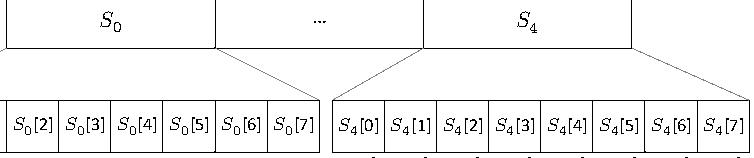
| 𝑆 0 | … | 𝑆 4 |
| 𝑆 [0] 4 / 𝑆 [1] 4 | 𝑆 [2] 4 / 𝑆 [3] 4 / 𝑆 [4] 4 / 𝑆 [5] 4 / 𝑆 [6] 4 / 𝑆 [7] 4 |
| 𝑆 [0] 0 | 𝑆 [1] 0 | 𝑆 [2] 0 | 𝑆 [3] 0 | 𝑆 [4] 0 | 𝑆 [5] 0 | 𝑆 [6] 0 | 𝑆 [7] 0 |
72∶279] 64∶271] 80∶287]
72∶279] 64∶271] 80∶287]
未レビュー訳56∶263]
56∶263]
未レビュー訳88∶295] 96∶303]
88∶295] 96∶303]
未レビュー訳04∶311] 12∶319]
04∶311] 12∶319]
未レビュー訳S[0∶7] S[8∶15] S[16∶23]S[24∶31]S[32∶39]S[40∶47]S[48∶55]S[56∶63]
S[0∶7] S[8∶15] S[16∶23]S[24∶31]S[32∶39]S[40∶47]S[48∶55]S[56∶63]
未レビュー訳2
未レビュー訳2 2
2 2
未レビュー訳3 3
3 3
未レビュー訳2
未レビュー訳2 2 S[ S[ S[ S[ S[ S[ S[ S[
2 2 S[ S[ S[ S[ S[ S[ S[ S[
未レビュー訳
Ascon状態の5つの64ビット状態ワードと、各ワードを構成する8バイトおよびビット範囲の対応関係。
Figure 9. Mapping between state words, bytes, and bits
図 9. 状態ワード、バイト、およびビット間のマッピング
未レビュー訳A.1. Conversion Functions
A.1. 変換関数
未レビュー訳When printing values as integers using hexadecimal notation, the most significant byte and most significant bit are shown first.
16進表記を用いて値を整数として出力する場合、最上位バイトおよび最上位ビットが最初に表示される。
未レビュー訳Integers and byte sequences. Printing the integer representation of a byte sequence requires the byte order to be reversed. That is, the first element in the sequence of bytes is the least significant byte of the integer, while the last element in the sequence of bytes is the most significant byte of the integer.
整数とバイト列。バイト列の整数表現を出力するには、バイト順を逆にする必要がある。すなわち、バイト列の先頭の要素は整数の最下位バイトであり、バイト列の最後の要素は整数の最上位バイトである。
未レビュー訳Integers and bitstrings. Printing a bitstring as an integer requires the byte order and the bits within a byte to be reversed. That is, the first element of a bitstring is the least significant bit of the integer (or byte), while the last element of the bitstring is the least significant bit of the integer (or byte).
整数とビット列。ビット列を整数として出力するには、バイト順およびバイト内のビットを逆にする必要がある。すなわち、ビット列の先頭の要素は整数（またはバイト）の最下位ビットであり、ビット列の最後の要素は整数（またはバイト）の最下位ビットである。
未レビュー訳Loading 64-bit integer words from a byte sequence. When loading the state from a sequence of bytes stored in memory, the first eight bytes are mapped to the first 64-bit unsigned integer word 𝑆 in little-endian notation (i.e., without byte reversal on little-endian 0
バイト列からの64ビット整数ワードのロード。メモリに格納されたバイト列から状態をロードする場合、最初の8バイトは、リトルエンディアン表記で最初の64ビット符号なし整数ワード𝑆にマッピングされる（すなわち、リトルエンディアン
未レビュー訳0
未レビュー訳machines). The next eight bytes are loaded to 𝑆 . Bytes continue to be loaded in the same 1 way until the final eight bytes of the stored state are loaded into 𝑆 . 4
マシン上ではバイト反転なし）。次の8バイトは 𝑆 にロードされる。格納された状態の最後の8バイトが 𝑆 にロードされるまで、同様の 1 方法でバイトが引き続きロードされる。
未レビュー訳4
未レビュー訳An example of the mapping between memory addresses to state word bytes is presented in Table 10 for both little-endian and big-endian machines. An example of mappings between 64-bit unsigned integers, byte sequences, and bitstrings is shown in Fig. 10. Note that 64-bit integers and bitstrings only appear to be reversed in the visual representation.
リトルエンディアンとビッグエンディアンの両方のマシンにおけるメモリアドレスと状態ワードのバイトとのマッピング例をTable 10に示す。64ビット符号なし整数、バイト列、およびビット文字列間のマッピング例をFig. 10に示す。なお、64ビット整数とビット文字列は視覚的表現において反転しているように見えるだけである点に注意すること。
未レビュー訳Table 10. Address for each byte of Ascon state word 𝑆 in memory on little-endian and
Table 10. リトルエンディアンおよびビッグエンディアンのマシンにおけるメモリ上のAscon状態ワード𝑆の各バイトのアドレス（ワード𝑆がメモリアドレス𝑎で始まる場合）
未レビュー訳𝑖
未レビュー訳big-endian machines, where the word 𝑆 begins at memory address 𝑎 𝑖
ビッグエンディアンマシン（ワード𝑆がメモリアドレス𝑎 𝑖で始まる場合）
未レビュー訳Word Little-endian Big-endian byte address address 𝑆 [0] 𝑎+0
Word Little-endian Big-endian byte address address 𝑆 [0] 𝑎+0
未レビュー訳𝑎+7
𝑎+7
未レビュー訳𝑖 𝑆 [1] 𝑎+1
𝑖 𝑆 [1] 𝑎+1
未レビュー訳𝑎+6
𝑎+6
未レビュー訳𝑖 𝑆 [2] 𝑎+2
𝑖 𝑆 [2] 𝑎+2
未レビュー訳𝑎+5
𝑎+5
未レビュー訳𝑖 𝑆 [3] 𝑎+3
𝑖 𝑆 [3] 𝑎+3
未レビュー訳𝑎+4
𝑎+4
未レビュー訳𝑖 𝑆 [4] 𝑎+4
𝑖 𝑆 [4] 𝑎+4
未レビュー訳𝑎+3
𝑎+3
未レビュー訳𝑖 𝑆 [5] 𝑎+5
𝑖 𝑆 [5] 𝑎+5
未レビュー訳𝑎+2
𝑎+2
未レビュー訳𝑖 𝑆 [6] 𝑎+6
𝑖 𝑆 [6] 𝑎+6
未レビュー訳𝑎+1
𝑎+1
未レビュー訳𝑖 𝑆 [7] 𝑎+7
𝑖 𝑆 [7] 𝑎+7
未レビュー訳𝑎+0
𝑎+0
未レビュー訳𝑖
未レビュー訳Writing 64-bit integer words to a byte sequence. The process for writing the 64-bit unsigned integer Ascon state words to a byte sequence in memory is simply the reverse of loading a state word from a byte sequence. The byte order does not need to be reversed on little-endian machines.
バイト列への64ビット整数ワードの書き込み。メモリ内のバイト列に64ビット符号なし整数Ascon状態ワードを書き込むプロセスは、バイト列から状態ワードをロードするプロセスの単なる逆です。リトルエンディアンのマシンでは、バイト順序を反転させる必要はありません。
未レビュー訳A.2. Implementing with Integers
A.2. 整数を用いた実装
未レビュー訳This section provides additional information for software implementations that employ 64-bit unsigned integers.
本節では、64ビット符号なし整数を使用するソフトウェア実装に関する追加情報を提供します。
未レビュー訳Padding. The padding rule described in Algorithm 2 appends a one followed by one or more zeroes to data. For an integer 𝑥 that can be represented with 𝑛<8 bytes, an integer 𝑦 that represents a padded version of 𝑥 is computed as
パディング。アルゴリズム2で説明されているパディング規則は、データに1つ「1」を付加し、その後に1つ以上の「0」を付加します。𝑛 < 8バイトで表現可能な整数𝑥について、𝑥のパディングされたバージョンを表す整数𝑦は、次のように計算されます。
未レビュー訳𝑦 ← 𝑥⊕(0x0000000000000001 ≪ 8𝑛).
𝑦 ← 𝑥⊕(0x0000000000000001 ≪ 8𝑛)。
未レビュー訳| State bits | State word | Word value (64-bit unsigned integers) |
| S [0∶63] | 𝑆 0 | 0x0706050403020100 |
| S [64∶127] | 𝑆 1 | 0x0F0E0D0C0B0A0908 |
| S [128∶191] | 𝑆 2 | 0x1716151413121110 |
| S [192∶255] | 𝑆 3 | 0x1F1E1D1C1B1A1918 |
| S [256∶319] | 𝑆 4 | 0x2726252423222120 |
原本の表画像
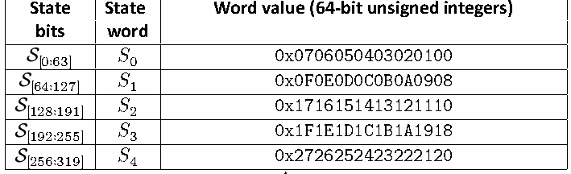
| 状態ビット | 状態ワード | ワード値（64ビット符号なし整数） |
| S [0∶63] | 𝑆 0 | 0x0706050403020100 |
| S [64∶127] | 𝑆 1 | 0x0F0E0D0C0B0A0908 |
| S [128∶191] | 𝑆 2 | 0x1716151413121110 |
| S [192∶255] | 𝑆 3 | 0x1F1E1D1C1B1A1918 |
| S [256∶319] | 𝑆 4 | 0x2726252423222120 |
↕
未レビュー訳| State bits | State word | Word value (byte sequence) |
| S [0∶63] | 𝑆 0 | 0x00 0x01 0x02 0x03 0x04 0x05 0x06 0x07 |
| S [64∶127] | 𝑆 1 | 0x08 0x09 0x0A 0x0B 0x0C 0x0D 0x0E 0x0F |
| S [128∶191] | 𝑆 2 | 0x10 0x11 0x12 0x13 0x14 0x15 0x16 0x17 |
| S [192∶255] | 𝑆 3 | 0x18 0x19 0x1A 0x1B 0x1C 0x1D 0x1E 0x1F |
| S [256∶319] | 𝑆 4 | 0x20 0x21 0x22 0x23 0x24 0x25 0x26 0x27 |
原本の表画像
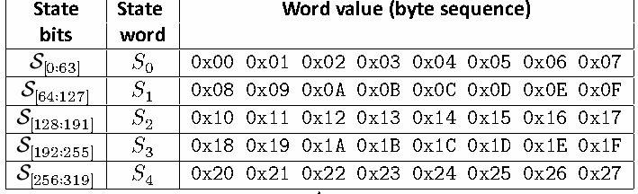
| 状態ビット | 状態ワード | ワード値（バイト列） |
| S [0∶63] | 𝑆 0 | 0x00 0x01 0x02 0x03 0x04 0x05 0x06 0x07 |
| S [64∶127] | 𝑆 1 | 0x08 0x09 0x0A 0x0B 0x0C 0x0D 0x0E 0x0F |
| S [128∶191] | 𝑆 2 | 0x10 0x11 0x12 0x13 0x14 0x15 0x16 0x17 |
| S [192∶255] | 𝑆 3 | 0x18 0x19 0x1A 0x1B 0x1C 0x1D 0x1E 0x1F |
| S [256∶319] | 𝑆 4 | 0x20 0x21 0x22 0x23 0x24 0x25 0x26 0x27 |
↕
未レビュー訳| State bits | State word | Word value (bitstring) |
| S [0∶63] | 𝑆 0 | 0000 0000 1000 0000 0100 0000 1100 0000 0010 0000 1010 0000 0110 0000 1110 0000 |
| S [64∶127] | 𝑆 1 | 0001 0000 1001 0000 0101 0000 1101 0000 0011 0000 1011 0000 0111 0000 1111 0000 |
| S [128∶191] | 𝑆 2 | 0000 1000 1000 1000 0100 1000 1100 1000 0010 1000 1010 1000 0110 1000 1110 1000 |
| S [192∶255] | 𝑆 3 | 0001 1000 1001 1000 0101 1000 1101 1000 0011 1000 1011 1000 0111 1000 1111 1000 |
| S [256∶319] | 𝑆 4 | 0000 0100 1000 0100 0100 0100 1100 0100 0010 0100 1010 0100 0110 0100 1110 0100 |
原本の表画像
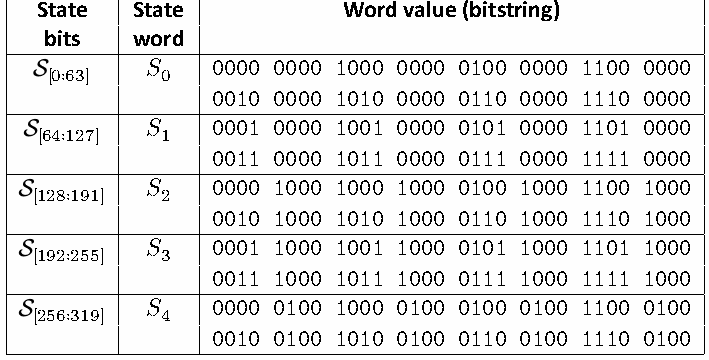
| 状態ビット | 状態ワード | ワード値（ビット列） |
| S [0∶63] | 𝑆 0 | 0000 0000 1000 0000 0100 0000 1100 0000 0010 0000 1010 0000 0110 0000 1110 0000 |
| S [64∶127] | 𝑆 1 | 0001 0000 1001 0000 0101 0000 1101 0000 0011 0000 1011 0000 0111 0000 1111 0000 |
| S [128∶191] | 𝑆 2 | 0000 1000 1000 1000 0100 1000 1100 1000 0010 1000 1010 1000 0110 1000 1110 1000 |
| S [192∶255] | 𝑆 3 | 0001 1000 1001 1000 0101 1000 1101 1000 0011 1000 1011 1000 0111 1000 1111 1000 |
| S [256∶319] | 𝑆 4 | 0000 0100 1000 0100 0100 0100 1100 0100 0010 0100 1010 0100 0110 0100 1110 0100 |

Asconの状態を、64ビット整数、メモリ上のバイト列、ビット列の3通りで示した表。これらの表示順の違いに注意が必要である。
Figure 10. Representation of the Ascon state as 64-bit unsigned integers, byte sequences, and bitstrings, where 64-bit unsigned integers are used to define the permutation, data stored in memory is represented as byte sequences, and bitstrings are used to specify the modes of operation. Note that 64-bit integers and bitstrings only appear to be reversed in the visual representation.
図10. Ascon状態を、64ビット符号なし整数、バイト列、およびビット列として表現したもの。64ビット符号なし整数は置換の定義に、メモリ上のデータはバイト列として、ビット列は利用モードの仕様に用いる。図では、64ビット整数とビット列の並びが逆に見える点に注意する。
未レビュー訳Table 11. Examples of padding an unsigned integer 𝑥 to a 64-bit block, where 𝑥 encodes a sequence of bytes that each have value 0xFF in little-endian byte order
表 11. リトルエンディアンのバイト順でそれぞれ値0xFFを持つ一連のバイトを符号化する符号なし整数𝑥を、64ビットブロックへパディングする例
未レビュー訳| Length of 𝑥 (in bytes) | # Padding Bytes | Unsigned integer 𝑥 | Padded 64-bit block |
| 0 | 8 | 0x0000000000000000 | 0x0000000000000001 |
| 1 | 7 | 0x00000000000000FF | 0x00000000000001FF |
| 2 | 6 | 0x000000000000FFFF | 0x000000000001FFFF |
| 3 | 5 | 0x0000000000FFFFFF | 0x0000000001FFFFFF |
| 4 | 4 | 0x00000000FFFFFFFF | 0x00000001FFFFFFFF |
| 5 | 3 | 0x000000FFFFFFFFFF | 0x000001FFFFFFFFFF |
| 6 | 2 | 0x0000FFFFFFFFFFFF | 0x0001FFFFFFFFFFFF |
| 7 | 1 | 0x00FFFFFFFFFFFFFF | 0x01FFFFFFFFFFFFFF |
原本の表画像
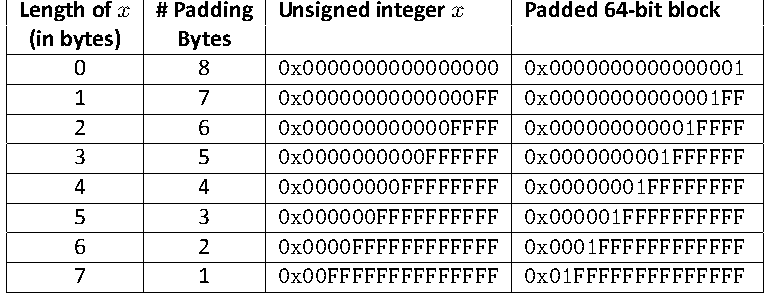
| 𝑥の長さ（バイト単位） | パディングバイト数 | 符号なし整数 𝑥 | パディング後の64ビットブロック |
| 0 | 8 | 0x0000000000000000 | 0x0000000000000001 |
| 1 | 7 | 0x00000000000000FF | 0x00000000000001FF |
| 2 | 6 | 0x000000000000FFFF | 0x000000000001FFFF |
| 3 | 5 | 0x0000000000FFFFFF | 0x0000000001FFFFFF |
| 4 | 4 | 0x00000000FFFFFFFF | 0x00000001FFFFFFFF |
| 5 | 3 | 0x000000FFFFFFFFFF | 0x000001FFFFFFFFFF |
| 6 | 2 | 0x0000FFFFFFFFFFFF | 0x0001FFFFFFFFFFFF |
| 7 | 1 | 0x00FFFFFFFFFFFFFF | 0x01FFFFFFFFFFFFFF |
Domain separation bit. The hexadecimal integer form of the domain separation bit is 0x8000000000000000. Therefore, the addition of this bit into the state may be imple-mented as
ドメイン分離ビット。ドメイン分離ビットの16進整数形式は 0x8000000000000000 である。したがって、状態へのこのビットの加算は、次のように実装できる：
未レビュー訳𝑆 ← 𝑆 ⊕0x8000000000000000. 4 4
𝑆 ← 𝑆 ⊕0x8000000000000000. 4 4
未レビュー訳64-bit block absorption. In Ascon-Hash256, Ascon-XOF128, or Ascon-CXOF128, the absorption of a 64-bit message block expressed as the byte sequence 0x00, 0x01, 0x02, 0x03, 0x04, 0x05, 0x06, 0x07 can be implemented as
64ビットブロックの吸収。Ascon-Hash256、Ascon-XOF128、またはAscon-CXOF128において、バイト列 0x00, 0x01, 0x02, 0x03, 0x04, 0x05, 0x06, 0x07 として表される64ビットメッセージブロックの吸収は、次のように実装できる：
未レビュー訳𝑆 ← 𝑆 ⊕0x0706050403020100. 0 0
𝑆 ← 𝑆 ⊕0x0706050403020100. 0 0
未レビュー訳128-bit block absorption. Absorbing a 128-bit associated data or plaintext block represented by byte sequence 0x00, 0x01, 0x02, 0x03, 0x04, 0x05, 0x06, 0x07, 0x08, 0x09, 0x0A, 0x0B, 0x0C, 0x0D, 0x0E, 0x0F can similarly be implemented as
128ビットブロックの吸収。バイト列 0x00, 0x01, 0x02, 0x03, 0x04, 0x05, 0x06, 0x07, 0x08, 0x09, 0x0A, 0x0B, 0x0C, 0x0D, 0x0E, 0x0F で表される128ビットの関連データまたは平文ブロックの吸収も、同様に次のように実装できる：
未レビュー訳𝑆 ← 𝑆 ⊕0x0706050403020100
𝑆 ← 𝑆 ⊕0x0706050403020100
未レビュー訳The key addition at the end of the initialization phase may be written as
初期化フェーズの終了時における鍵の加算は、次のように記述できます。
未レビュー訳𝑆 ← 𝑆 ⊕0x0706050403020100 3 3 𝑆 ← 𝑆 ⊕0x0F0E0D0C0B0A0908. 4 4
𝑆 ← 𝑆 ⊕0x0706050403020100 3 3 𝑆 ← 𝑆 ⊕0x0F0E0D0C0B0A0908. 4 4
未レビュー訳The key addition at the beginning of the finalization phase can be expressed as:
終了処理（finalization）フェーズの最初における鍵の加算は、次のように表すことができる：
未レビュー訳𝑆 ← 𝑆 ⊕0x0706050403020100 2 2 𝑆 ← 𝑆 ⊕0x0F0E0D0C0B0A0908. 3 3
𝑆 ← 𝑆 ⊕0x0706050403020100 2 2 𝑆 ← 𝑆 ⊕0x0F0E0D0C0B0A0908. 3 3
未レビュー訳The key addition at the end of finalization can be implemented as
終了処理（finalization）の最後における鍵の加算は、次のように実装できる：
未レビュー訳𝑆 ← 𝑆 ⊕0x0706050403020100 3 3 𝑆 ← 𝑆 ⊕0x0F0E0D0C0B0A0908. 4 4
𝑆 ← 𝑆 ⊕0x0706050403020100 3 3 𝑆 ← 𝑆 ⊕0x0F0E0D0C0B0A0908. 4 4
未レビュー訳A.3. Precomputation
A.3. 事前計算
未レビュー訳The initialization phases of Ascon-Hash256, Ascon-XOF128, and Ascon-CXOF128 are in-dependent of the input data (e.g., message, output length, customization string), allowing the resulting internal state to be precomputed to reduce runtime computations. See Table 12 for the resulting state at the end of the initialization phase for each function.
Ascon-Hash256、Ascon-XOF128、およびAscon-CXOF128の初期化フェーズは、入力データ（メッセージ、出力長、カスタマイズ文字列など）に依存しないため、結果として得られる内部状態を事前計算して実行時の計算量を削減することが可能である。各関数における初期化フェーズ終了時の結果の状態については、Table 12を参照のこと。
未レビュー訳For example, an implementation of Ascon-Hash256 using the precomputed values would replace the first two steps of Alg. 5
例えば、事前計算された値を使用するAscon-Hash256の実装では、Alg. 5の最初の2つのステップを置き換えることになる。
未レビュー訳𝐼𝑉 ← 0x0000080100cc0002 S ← 𝐴𝑠𝑐𝑜𝑛-𝑝[12](𝐼𝑉 ∥0256)
𝐼𝑉 ← 0x0000080100cc0002 S ← 𝐴𝑠𝑐𝑜𝑛-𝑝[12](𝐼𝑉 ∥0256)
未レビュー訳with steps that assign each of the precomputed words into the corresponding state words, namely:
事前計算された各ワードを対応する状態ワードに代入するステップ、すなわち：
未レビュー訳𝑆 ←0x9b1e5494e934d681 0 𝑆 ←0x4bc3a01e333751d2 1 𝑆 ←0xae65396c6b34b81a 2 𝑆 ←0x3c7fd4a4d56a4db3 3 𝑆 ←0x1a5c464906c5976d. 4
𝑆 ← 0x9b1e5494e934d681 0 𝑆 ← 0x4bc3a01e333751d2 1 𝑆 ← 0xae65396c6b34b81a 2 𝑆 ← 0x3c7fd4a4d56a4db3 3 𝑆 ← 0x1a5c464906c5976d. 4
未レビュー訳The same is true for Ascon-XOF128 and Ascon-CXOF128 using the corresponding values given in Table 12.
Table 12に示されている対応する値を使用するAscon-XOF128およびAscon-CXOF128についても同様です。
未レビュー訳It may also be beneficial to precompute the intermediate state between the customiza-tion and absorbing phases when Ascon-CXOF128 repeatedly uses the same customization string.
Ascon-CXOF128が同じカスタマイズ文字列を繰り返し使用する場合、カスタマイズフェーズと吸収フェーズの間の内部状態を事前計算しておくことも有益である可能性があります。
未レビュー訳Table 12. Precomputed initialization phase values for Ascon-Hash256, Ascon-XOF128, and Ascon-CXOF128 provided in hexadecimal integer form
Table 12. 16進整数形式で提供されるAscon-Hash256、Ascon-XOF128、およびAscon-CXOF128の事前計算された初期化フェーズの値
未レビュー訳| State word | A scon-Hash256 | A scon-XOF128 | A scon-CXOF128 |
| 𝑆 0 | 0x9b1e5494e934d681 | 0xda82ce768d9447eb | 0x675527c2a0e8de03 |
| 𝑆 1 | 0x4bc3a01e333751d2 | 0xcc7ce6c75f1ef969 | 0x43d12d7dc0377bbc |
| 𝑆 2 | 0xae65396c6b34b81a | 0xe7508fd780085631 | 0xe9901dec426e81b5 |
| 𝑆 3 | 0x3c7fd4a4d56a4db3 | 0x0ee0ea53416b58cc | 0x2ab14907720780b6 |
| 𝑆 4 | 0x1a5c464906c5976d | 0xe0547524db6f0bde | 0x8f3f1d02d432bc46 |
原本の表画像
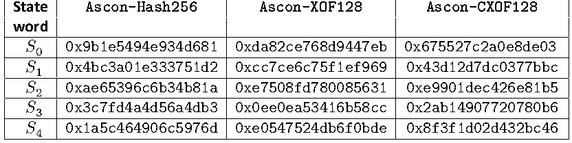
| 状態ワード | A scon-Hash256 | A scon-XOF128 | A scon-CXOF128 |
| 𝑆 0 | 0x9b1e5494e934d681 | 0xda82ce768d9447eb | 0x675527c2a0e8de03 |
| 𝑆 1 | 0x4bc3a01e333751d2 | 0xcc7ce6c75f1ef969 | 0x43d12d7dc0377bbc |
| 𝑆 2 | 0xae65396c6b34b81a | 0xe7508fd780085631 | 0xe9901dec426e81b5 |
| 𝑆 3 | 0x3c7fd4a4d56a4db3 | 0x0ee0ea53416b58cc | 0x2ab14907720780b6 |
| 𝑆 4 | 0x1a5c464906c5976d | 0xe0547524db6f0bde | 0x8f3f1d02d432bc46 |
Appendix B. Determination of the Initial Values
付録B 初期値の決定
未レビュー訳Each variant of the Ascon family has a 64-bit initial value constructed as
Asconファミリーの各バリアントは、次のように構築される64ビットの初期値を持つ。
未レビュー訳𝐼𝑉 = 𝑣∥08 ∥𝑎∥𝑏∥𝑡∥𝑟/8∥016,
𝐼𝑉 = 𝑣∥08 ∥𝑎∥𝑏∥𝑡∥𝑟/8∥016,
未レビュー訳(79)
(79)
未レビュー訳where
ここで、
未レビュー訳•𝑣 is a unique identifier for the algorithm (represented in 8 bits)
•𝑣 はアルゴリズムの一意の識別子である（8ビットで表現される）
未レビュー訳•𝑎 is the number of rounds during initialization and finalization (represented in 4 bits)
•𝑎 は初期化および終了処理中のラウンド数である（4ビットで表現される）
未レビュー訳•𝑏 is the number of rounds during the processing of AD, plaintext, and ciphertext for Ascon-AEAD128 and the message for Ascon-Hash256, Ascon-XOF128, and Ascon-CXOF128 (represented in 4 bits)
•𝑏 は、Ascon-AEAD128の場合はAD、平文、暗号文の処理中、Ascon-Hash256、Ascon-XOF128、Ascon-CXOF128の場合はメッセージの処理中のラウンド数である（4ビットで表現される）
未レビュー訳•𝑡 is 128 for Ascon-AEAD128, 256 for Ascon-Hash256, and 0 for Ascon-XOF128 and Ascon-CXOF128 (represented in 16 bits)
•𝑡 は、Ascon-AEAD128では128、Ascon-Hash256では256、Ascon-XOF128およびAscon-CXOF128では0である（16ビットで表現される）
未レビュー訳•𝑟/8 is the number of input bytes processed per invocation of the underlying permu-tation (represented in 8 bits)
•𝑟/8 は、基礎となる順列の呼び出しごとに処理される入力バイト数である（8ビットで表される）
未レビュー訳The values of these parameters for each variant are given in Table 13, and the initial values for each Ascon variant are specified in Table 14.
各バリアントに対するこれらのパラメータの値は表13に示されており、各Asconバリアントの初期値は表14で規定されている。
未レビュー訳Table 13. Parameters for initial value construction
表 13. 初期値構築のためのパラメータ
未レビュー訳原本の表画像
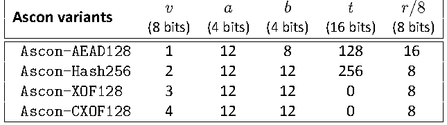
Table 14. Initial values as hexadecimal integers
表 14. 16進整数としての初期値
未レビュー訳原本の表画像
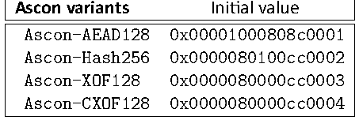